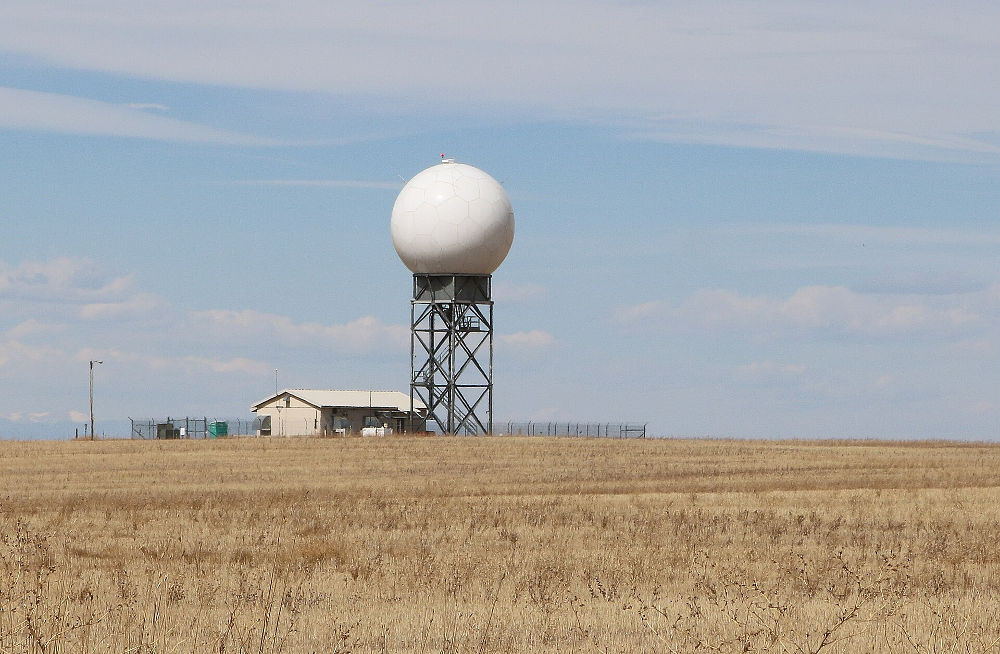

Incidents / FAA nationwide ground stop · Incident date · First published
Was the FAA ground stop a cyberattack?
Also reported as the FAA outage, the air traffic control outage and the nationwide flight grounding.

.JPG){kind=link}
Is it a hack? The short answer
UnverifiedNot supported by any public evidence; not formally ruled out. The FAA says it has no indication of a cyberattack, and the root cause is still not determined.
Rests on Cyberattack
This is the current answer, not a final verdict. A final verdict is published only after the site's owner has reviewed the evidence.
At a glance
- 3:10 PMFirst ground stopO'Hare, comms and equipment
- 3:54 PMNational ground stopFAA Advisory 111
- 8:16 PMNational stop cancelledAdvisory 005; ended nationwide at once
- 10:30 AM SatDuffy/Bedford briefingHeld at DOT headquarters
- ~12,462Friday cancellationsFAA Q&A, Nov. 15
- ~18,100Fri–Sun cancellationsFlightAware count
Known so far
- The FAA ordered a ground stop for all US airports at 3:54 PM ET on Nov 13 (FAA Advisory 111). evidence
- The nationwide stop was cancelled at 8:16 PM ET the same day (FAA Advisory 005). evidence
- Officials' account: legacy telecom switches and routers were overloaded with data. That is what officials said, not an independent finding. evidence
- The FAA's written Q&A names two sites: a radio site in El Dorado, Ark., and a radar site in Amarillo, Texas. evidence
- A White House release on Nov 18 says the administration sees no indication of a cyberattack behind the recent outages, the FAA's among them. evidence
Not known yet
- The root cause. Investigators recreated the overload in a lab, but no root-cause report is out. The FAA chief said Nov. 19 an announcement was expected that week; none was out by Nov. 22.
- Which equipment, site or upgrade set off the overload, and whether the router was faulty or the installation was.
- Which specific frequencies or channels went down. None has been named publicly.
- Whether a written finding from the FBI, CISA, the DOT Inspector General or the NTSB will follow. None had been published at the last check.
02What happened: the story so far
Headline (as of 8:18 AM ET Wed; see source): Monday morning: flights are near normal, with no ground stops on the FAA status feed at 10:16 AM ET. FlightAware counts about 18,100 US cancellations Friday through Sunday. The FAA's written Q&A traces the Nov. 13 data flood to a new router at an El Dorado, Ark., radio site and a radar site in Amarillo, Texas, both on the L3Harris-run FTI network. Duffy says the Amarillo router, replaced about three weeks earlier, began flooding when the El Dorado router came on. Both routers are in L3Harris's Florida lab with FAA, Juniper and Cisco engineers; the root cause is still not determined. Router maker HPE says the device worked as the installer configured it (Reported). The FAA says it has no indication of a cyberattack. FAA/DOT staff brief House T&I today on the $30.1 billion request ($10.1 billion for ATC); no hearing date is posted. The ask has grown to up to $50 billion, and government funding runs out Dec. 11.
03What caused it? Leading theories
17
ConfirmedOfficial account: overloaded legacy telecom switches and routersDuffy said on the record at the White House briefing (Reuters, BBC, LA Times, Aviation Week) that legacy analog TDM (time-division multiplexing) switches and routers carrying ATC voice and radar data were overloaded with data…
Why it supports Mullin said new equipment being added was overwhelming the older system. This confirms what officials said, not an independent finding; no written FAA report, transcript, vendor or specific upgrade has been named.
Duffy said on the record at the White House briefing (Reuters, BBC, LA Times, Aviation Week) that legacy analog TDM (time-division multiplexing) switches and routers carrying ATC voice and radar data were overloaded with data, began giving inconsistent data at 3:36 PM ET, and the FAA shut the system down; radar and communications were never fully lost. Mullin said new equipment being added was overwhelming the older system. This confirms what officials said, not an independent finding; no written FAA report, transcript, vendor or specific upgrade has been named.
ConfirmedSaturday: Duffy names L3Harris copper-to-fiber work at a remote FAA siteAt the 10:30 AM ET Saturday DOT briefing with FAA Administrator Bedford, Duffy said the outage began while L3Harris Technologies, which runs the network, was switching lines from copper wire to fiber at a remote FAA site…
Why it supports This confirms what Duffy said, not a finding: officials have not determined whether the router was faulty or the contractor erred ("Was it the router, or were they not doing great work for us at L3Harris?").
At the 10:30 AM ET Saturday DOT briefing with FAA Administrator Bedford, Duffy said the outage began while L3Harris Technologies, which runs the network, was switching lines from copper wire to fiber at a remote FAA site, and a router involved in that work flooded the rest of the system, disrupting communications with aircraft and radar (Yahoo News live coverage; AInvest wire headline). This confirms what Duffy said, not a finding: officials have not determined whether the router was faulty or the contractor erred ("Was it the router, or were they not doing great work for us at L3Harris?"). The site was not named, no written FAA report is posted, and L3Harris had not commented. The CBS software-update/reboot account stays Reported.
ReportedBloomberg FBI software-update claimBloomberg, at 5:01 PM ET, citing one unnamed person familiar with the matter: the FBI is looking at whether a software update caused the outage and does not believe it was a cyberattack or crime.
Why it supports No vendor or product is named. The FBI has not commented. No independent corroboration was found; later mentions are re-reports of Bloomberg.
Compatible with the CBS account but a separate claim.
ReportedCBS reboot reportCBS, citing multiple unnamed sources: an update to the L3Harris-run ATC network caused a reboot and crash.
Why it supports Not officially confirmed.
Officials now blame overloaded legacy switches and routers, and Mullin said new equipment overwhelmed the old system, which is compatible with an upgrade trigger but does not confirm an update, a reboot or L3Harris. Reuters separately reports, citing two airline officials, that the affected network is the L3Harris-overseen one.
UnverifiedCNN router reportCNN, as relayed by Fox 5 Vegas: the FAA told airlines the problem began with network routers, possibly at Chicago Midway.
Why it supports The FAA has not confirmed this publicly. Unconfirmed, and separate from the CBS and Bloomberg update accounts.
UnverifiedSMART (FAA AI routing tool)Mullin said on the record that CISA is "looking at" a possible link to SMART (GeekWire); that he said this is confirmed.
Why it supports Any actual SMART role remains unconfirmed. Vendor Air Space Intelligence denied that SMART caused the outage (on the record, via GeekWire).
Later, per Reuters, Mullin said there is "zero evidence" so far of a rogue AI system, though it is not ruled out. AvWeb quotes Duffy saying SMART is not connected to the FAA's STARS or ERAM systems and that "There's no possible way SMART would have impacted what happened." AeroTime also reports that Duffy said SMART played no role. This stays Unverified because Reuters has Mullin saying a rogue AI is not fully ruled out.
UnverifiedCyberattackNot supported by any public evidence; not formally ruled out. FAA Q&A (Nov. 15): "Based on all available evidence, we have no indication that this was a cyberattack or an outside nefarious actor."
Why it supports Duffy (Sunday): "we have no indication that this was a hack," and the FBI has offered assistance; Bedford: "zero evidence of anything nefarious."
No FBI or CISA public statement or finding found as of Monday morning; Bloomberg's anonymous-source report that the FBI does not suspect an attack stays Reported. Earlier: Mullin said there is "zero evidence" so far of a cyberattack or a rogue AI system and that it "appears this was mechanically driven," but investigators have not ruled it out; the NSA is working with DHS (Reuters). Duffy said there was no evidence of a cyberattack or foreign involvement (LA Times). Added Nov 18: a White House release quotes the Director of National Intelligence saying of the recent outages, "This is not a cyberattack." It is listed in the timeline. The label here has not been changed.
UnverifiedVerizon fiber cutNothing public ties a fiber cut to today. The September cut near New Brunswick, N.J. is a prior event.
Why it supports CNBC: September 2026 backup fiber cut near New Brunswick is the source the page cites for this.
Show 9 more rows
UnverifiedL3Harris copper-to-fiber cutoverThe 70% upgraded figure is confirmed.
Why it supports Officials blame old TDM copper switches and routers overwhelmed as new equipment was added, which fits a modernization-related trigger, but no cutover, vendor or date has been named, so a cutover as the cause stays unverified.
RumorAT&T runs the center networkPartly true at most: AT&T won the FENS contract in August 2026, but only a $74.3M planning task is funded; L3Harris still operates FTI.
Why it supports Nothing public links AT&T to today's outage.
Rumor911 systems down tooUnconfirmed. No official confirmation of a nationwide outage.
Why it supports Downdetector logged unverified user reports from 4:13 PM ET; Lincoln, NE and Tulare, CA lost only non-emergency lines.
ReportedCanadaCanadian systems not hit, per NAV CANADA; only US-bound and some US-overflight flights stopped.
Why it supports CBC Montreal: NAV CANADA systems operating normally is the source the page cites for this.
DebunkedWeather Service outageDebunked as a nationwide NWS/NEXRAD or radar.weather.gov outage.
Why it supports NWS said there is no radar outage, that radar.weather.gov is working, and that outdated isolated webpages caused the confusion; the circulating notice was stale Los Angeles office page text, archived as early as December 2025.
NCEP said at 6:01 PM ET Friday that radar and network communications were normal, and NWS Birmingham and Huntsville said NEXRAD dataflow was nominal. Narrower and confirmed: a few airport terminal Doppler weather radars had brief Friday dropouts (Newark 12:19–12:44 PM ET, Milwaukee 12:46–3:53 PM ET), and when Boston's airport weather-radar feed was restored at 3:46 PM ET, NWS Boston noted that Boston Center had reported telecom issues — the FAA problem touching one feed, not a national Weather Service outage.
ReportedEquipment already over capacity; L3Harris asked to diagnoseA Saturday Hindustan Times explainer, citing Bloomberg and people familiar with an FAA industry briefing, says some of the equipment was already running over capacity and that once it was overwhelmed the failure spread to the old telecom…
Why it supports Those two Bloomberg details could not be independently confirmed in a Bloomberg text story, L3Harris has not commented, and the FAA has not confirmed them.
A Saturday Hindustan Times explainer, citing Bloomberg and people familiar with an FAA industry briefing, says some of the equipment was already running over capacity and that once it was overwhelmed the failure spread to the old telecom backbone; it also says L3Harris has been asked to diagnose the overload. Those two Bloomberg details could not be independently confirmed in a Bloomberg text story, L3Harris has not commented, and the FAA has not confirmed them. Keep this Reported/unconfirmed, separate from the officials' on-record overload account.
DebunkedTrump moved to a bunkerViral posts claimed Trump and aides were moved to a secure bunker over a supposed cyberattack.
Why it supports A fact check traces it to social posts and a misleading thumbnail on a story about a "figurative bunker."
RumorIsrael or a foreign state hacked the FAAPushed on X by what Cyber Harpoon describes as a coordinated campaign.
Why it supports No evidence: the FAA says it has no indication of a cyberattack or outside nefarious actor, and the router maker says the device worked as configured.
ReportedRouter maker: device worked as configured by the installerHPE (Juniper's owner) told ABC News the device "functioned as it was configured to by the installer.
Why it supports It did not fail or act improperly." The manufacturer's position, not a finding; the FAA has not determined installer error vs. faulty router.
04How many flights were cancelled?
Show the numbers
| Nov 13, Eastern time | Cancellations |
|---|---|
| Nov 13, 2026, 5:00 PM ET | 440 |
| Nov 13, 2026, 5:30 PM ET | 1,200 |
| Nov 13, 2026, 5:45 PM ET | 1,300 |
| Nov 13, 2026, 6:04 PM ET | 1,913 |
| Nov 13, 2026, 8:30 PM ET | 5,000 |
05How many flights were delayed?
Show the numbers
| Nov 13, Eastern time | Delays |
|---|---|
| Nov 13, 2026, 5:30 PM ET | 10,000 |
| Nov 13, 2026, 5:45 PM ET | 10,300 |
| Nov 13, 2026, 6:04 PM ET | 10,494 |
| Nov 13, 2026, 8:30 PM ET | 9,124 |
06Flights in arrival metering
- Nov 13
- The day before, same time
Show the numbers
| Nov 13, Eastern time | Nov 13 | The day before, same time |
|---|---|---|
| Nov 13, 2026, 6:03 PM ET | 646 | 3,166 |
| Nov 13, 2026, 6:17 PM ET | 531 | |
| Nov 13, 2026, 6:29 PM ET | 471 | 2,987 |
| Nov 13, 2026, 8:23 PM ET | 136 | 2,921 |
07Which airports had the worst delays?
5
Average minutes, latest public reading.
| Airport | Time (ET) | Average delay (minutes) | As reported |
|---|---|---|---|
| O'Hare | 8:07 PM | 308 | 5 hr 1–15 min |
| Atlanta | 8:30 PM | 180 | 3 hr |
| O'Hare | 6:16 PM | 188 | 181–195 min |
| Houston Intercontinental | 6:28 PM | 165 | 165 min |
| O'Hare earlier | 5:32 PM | 143 | 136–150 min |
08Key events
26
Eastern time. Full evidence is in the timeline.
| Time (ET) | Event | Detail |
|---|---|---|
| 3:10 PM | O'Hare ground stop | "Equipment outage, comms issues" (FAA Advisory 107) |
| 3:17–3:41 PM | The failure spreads | Midway stop at 3:17, O'Hare holding at 3:21, diversion recovery at 3:30; Boston, Potomac and Washington Center report frequency problems; Chicago goes "ATC zero" |
| 3:54 PM | Nationwide ground stop | All US airports (FAA Advisory 111) |
| 4:11 PM | Chicago Center equipment outage | Advisory 114 sets drop times for a Chicago Center (ZAU) equipment outage |
| 4:21 PM | "Nationwide comms failure" | FAA Advisory 117 |
| 5:30 PM | International flights trickle out | New York, Philadelphia and Bay Area oceanic departures released; Canada stops US-bound flights |
| 5:45–5:46 PM | Stop extended to 11 PM | Advisory 120 cites "communications failure"; one Potomac route eased, a possible first release step |
| 6:04 PM | About 1,900 cancellations, 10,500 delays | FlightAware via ABC7 |
| 6:38 PM | Still no domestic restart | Next FAA planning call 7:15 PM; stop listed through 11 PM |
| 7:44 PM | Still stopped after 7:15 call | Stop listed to 11 PM ET; next FAA planning webinar 9:15 PM ET; DCA closed to diversions |
| 8:16 PM | Nationwide ground stop cancelled | FAA Advisory 005; ended nationwide at once, almost 3 hours before the listed 11 PM end |
| 8:23 PM | Release times resume | 136 flights in arrival metering vs 2,921 yesterday; Newark PENNS still listed until midnight |
| ~8:30 PM | About 5,000 Friday cancellations | United, JetBlue and Air Canada cancel most remaining Friday flights; about 9,124 delays remain |
| 8:43 PM | New O'Hare ground stop | Second-tier stop, reason other (Advisory 011), listed until 9:45 PM ET |
| 8:59 PM | O'Hare stop is United-only | FAA now lists it as UAL and subsidiaries only, reason airline request |
| ~8:35 PM | White House briefing | Mullin: no cyberattack, public never in danger; Duffy: airspace opened at 8:15 PM ET, recovery will take time |
| 9:00–9:20 PM | Airline-requested hub stops | Alaska at Seattle and San Diego, United at Newark, Delta at Minneapolis, through 10–10:15 PM ET |
| 9:21 PM | Newark PENNS stop gone | No longer on the FAA restrictions list, ahead of its midnight end |
| 9:24 PM | FAA overnight plan | Hotlines stay open overnight; several ground stops in place at airlines' requests |
| 9:36–9:42 PM | Hub stops shift | Newark United stop cancelled; O'Hare United extended to 10:45 PM ET; Los Angeles Alaska stop until 11 PM ET |
| 9:51–9:59 PM | Hub stops extended | Alaska at San Diego and Seattle to 10:30 PM ET; Delta at Minneapolis to 11:15 PM ET |
| ~6:52 AM Sat | About 12,506 cancellations Friday and Saturday | FlightAware via ABC: 9,132 Friday, 3,374 so far Saturday; some Friday cancellations were weather (CNBC) |
| 7:44 AM Sat | Last outage-era measure lifted | Advisory 054 cancels the extended flight plan drop times set Friday for the nationwide comms failure (Advisory 117) |
| ~9:00 AM Sat | Duffy: safe to fly; 10:30 AM briefing | Duffy says operations are slowly returning to normal and it is safe to fly; he and FAA Administrator Bedford will brief at 10:30 AM ET at DOT headquarters |
| 10:30 AM Sat | Duffy names L3Harris fiber work | Router at a remote FAA site flooded the network during copper-to-fiber work; fault vs. contractor error not determined |
| Sat afternoon | L3Harris responds; DOT posts remarks | L3Harris says it is supporting the FAA investigation (70%+ of fiber conversion done); DOT release: over 1,000 connection attempts every 4–5 seconds |
09Where the key figures come from
9
| Figure | Source and why it supports |
|---|---|
| 3:10 PM first ground stop | FAA Advisory 107 sets the O'Hare stop period at 2010Z–2130Z with reason EQUIPMENT / OUTAGE and comment COMMS ISSUES; IFR Meter logs the same restriction. Advisory 107 · IFR Meter |
| 3:54 PM national ground stop | FAA Advisory 111, issued 2054Z, orders all airports ground stopped until further notice. WBEZ reports the same order. Advisory 111 · WBEZ |
| 22 en route centers | WBEZ quotes Secretary Duffy saying a communication issue affected all 22 air traffic control centers that route planes between airports. WBEZ |
| Root cause: officials' account, no written report | On the record, Duffy says legacy analog TDM switches and routers were overloaded with data and gave inconsistent data, so the FAA shut the system down; Mullin says new equipment and patches overwhelmed the old system. No written FAA root-cause report, vendor or specific upgrade has been named, and the FAA newsroom still says "communication issues." Reuters · WIRED · FAA statement · Still Reported, not confirmed: CBS (an update to the private ATC network caused a reboot), Bloomberg (one unnamed person: the FBI is looking at a software update), and CNN via Fox 5 Vegas (began with routers, possibly at Midway). CBS New York · Bloomberg · Fox 5 Vegas |
| 8:16 PM national stop cancelled | FAA Advisory 005, signed 8:19 PM ET with event time 8:16 PM ET, says the FAA Command Center nationwide ground stop has been cancelled, destination ALL, facilities ALL, with no reason given and the next update at 11 PM ET. IFR Meter timed the cancel at 8:16 PM, 4 hours 22 minutes after the stop was ordered. The stop ended nationwide at once, not by a published center-by-center release. Advisory 005 · IFR Meter |
| 10:30 AM ET Sat Duffy/Bedford briefing | ABC quotes Duffy's Saturday morning post announcing a 10:30 AM ET press briefing at DOT headquarters with FAA Administrator Bryan Bedford, and saying operations are slowly returning to normal and "it is safe to fly." ABC7 · Washington Post |
| ~12,462 Friday cancellations | The FAA's Nov. 15 Q&A says operators cancelled approximately 12,462 flights on Friday, including 9,082 by major airlines, and notes not all were directly caused by the ground stop. FAA Q&A |
| ~18,100 Fri–Sun cancellations (FlightAware) | The Points Guy, citing FlightAware: Friday 9,201, Saturday 6,699, Sunday 2,226 (as of 9:35 PM ET), for a total of 18,126. The FAA's Friday count of about 12,462 uses a different scope. The Points Guy · FAA Q&A |
| Mon 10:16 AM ET: no ground stops | The FAA's public airport-status feed lists no ground stops, only weather/volume delay programs at SFO and SAN. FAA airport status feed |
10Timeline of the FAA ground stop
124
Nov 13 to 1:00 PMAn unrelated AT&T outage (app and network) ended before the windowReported
Why it supports Android Authority updated at 1:07 PM ET that the AT&T app was back online and that user reports had fallen, which places the outage before the ground-stop window. The earlier Instatus spike has no durable public link.
Nov 13 to 12:44 PMNewark airport weather radar outConfirmed
Why it supports NWS New York FTM notices say the Newark terminal Doppler radar (TEWR) went out of service at 12:19 PM EST and returned at 12:44 PM EST.
The notices do not themselves say the radar rides FAA lines; that is context, not a quote from the product.
Nov 13 Milwaukee airport weather radar out until 3:53 PMConfirmed
Why it supports NWS Milwaukee FTM notices say the Milwaukee terminal Doppler radar (TMKE) went out at 11:46 AM CST (12:46 PM ET) with no estimated return, then returned at 2:53 PM CST (3:53 PM ET).
Nov 13 O'Hare ground stop: "EQUIPMENT/OUTAGE, COMMS ISSUES"Confirmed
Why it supports FAA Advisory 107 lists the ORD ground-stop period as 2010Z–2130Z, impacting condition EQUIPMENT / OUTAGE, comments COMMS ISSUES. IFR Meter captured the same restriction.
Nov 13 Midway ground stopConfirmed
Why it supports IFR Meter's timeline lists a 2017Z Midway ground stop with the same scope and cause, from Advisory 109.
Nov 13 O'Hare arrivals told to expect airborne holding for equipment issuesConfirmed
Why it supports FAA Advisory 106.
Nov 13 to 3:35 PMMoline Ground holds SkyWest 4792: "Chicago approach is going ATC zero"Reported
Why it supports The Flight Follower YouTube compilation includes the Moline Ground / SkyWest 4792 exchange. The time is inferred from FlightAware's actual gate departure at 20:18Z, not from a timestamp in the clip.
Nov 13 Chicago controller: "We lost all the frequencies and all the automation for the handoff and strips"Reported
Why it supports A CBS Chicago segment includes the ATC-zero audio; a transcript of that clip matches this wording.
Show 116 more events
Nov 13 Boston approach frequency problemReported
Why it supports IFR Meter's timeline lists a 2024Z stop on Boston departures via the HYLND fix through Boston approach, reason frequency.
Nov 13 Diversion-recovery tool turned on for all airportsConfirmed
Why it supports FAA Advisory 108.
Nov 13 Kansas City Center reportedly the starting pointRumor
Why it supports An unsourced Paddle Your Own Kanoo post, plus a United pilot quoted by Yahoo. This is contradicted by the Chicago-first FAA advisories, and no Kansas City Center (ZKC) advisory was found.
Nov 13 to 3:33 PMPotomac approach and Washington Center restrictionsReported
Why it supports IFR Meter lists 2031Z stops on Potomac departures via SWANN and AGARD for frequency issues, and a 2033Z Washington Center stop on departures to Newark, Kennedy, LaGuardia and Dulles, also for frequency issues.
Nov 13 Washington Center stops all departures; IFR Meter's own feeds go silent for about 3 minutesReported
Why it supports IFR Meter logs a 2041Z Washington Center stop on all departures for frequency issues. Separately, it says its own data feeds went silent for about three minutes at roughly 2041Z and that it does not know whether the two are related.
Nov 13 Boston weather office: "Boston Center reported teleco issues actively being worked"Confirmed
Why it supports An NWS Boston FTM product issued under the 2044Z (3:44 PM ET) header says TBOS data was restored and that 'Boston Center reported teleco issues actively being worked.' The product's message timestamp is 20:46:50Z.
Nov 13 NBAA notice: "frequency and radar outages at several ARTCCs"Reported
Why it supports The blancolirio YouTube clip reads an NBAA notice with this wording.
Nov 13 National ground stop for all US airportsConfirmed
Why it supports FAA Advisory 111, issued 2054Z, orders all airports ground stopped until further notice for extraordinary circumstances and safety. WBEZ and the public airport-status page report the same halt.
Nov 13 Seattle Ground to SkyWest 4179: "All en route facilities are having communication issues… it started with Chicago"Reported
Why it supports The same Flight Follower compilation includes the Seattle Ground / SkyWest 4179 exchange with this wording.
Nov 13 Chicago Center (ZAU) cites an equipment outage; drop times extendedConfirmed
Why it supports FAA Advisory 114.
Nov 13 FAA Advisory 117 calls it a "nationwide comms failure"Confirmed
Why it supports FAA Advisory 117 and IFR Meter's timeline both record a 2121Z extension of flight-plan drop times to 240 minutes at all en-route centers 'due to nationwide comms failure' until 0500Z.
Nov 13 Bloomberg, citing one unnamed person: the FBI is looking at whether a software update caused the outage and does not believe it was a cyberattack or crimeReported
Why it supports Published 5:01 PM ET (22:01 UTC). The article does not name a vendor, product or version, or say whether any update was scheduled maintenance. The FBI has not commented.
A later check found no independent corroboration; other outlets that mention the FBI software-update claim re-report Bloomberg. Compatible with the later CBS L3Harris-network update account, but a separate claim.
Nov 13 O'Hare route stops cancelled, but delays reach 136–150 minutesReported
Why it supports IFR Meter says the seven O'Hare route stops issued at 2209Z were cancelled at 2225Z, and that O'Hare's public departure delay was 136 to 150 minutes and increasing at 2232Z, which it reads as a reorganisation rather than a restart.
Nov 13 Domestic stop still on. International and oceanic departures released from New York, Philadelphia and the San Francisco Bay Area. Toronto and Montreal stop flights to the US.Reported
Why it supports IFR Meter logged international-departure spacing from New York-area airports and Philadelphia around 2206Z–2212Z, Oakland Center oceanic spacing at 2227Z, and Nav Canada stops for Toronto and Montreal from 2154Z and 2215Z.
Those Canadian stops were later cancelled at 6:03–6:05 PM ET; that later cancellation does not change the 5:30 PM snapshot.
Nov 13 More than 10,000 delays and 1,200 cancellations; cancellations nearly tripled in 30 minutesConfirmed
Why it supports IFR Meter attributes FlightAware figures at 2230Z to Yahoo News: more than 10,000 delays and more than 1,200 cancellations, up from over 440 cancellations at 2200Z. The Yahoo article itself was not found.
Fox Weather, as of 5:45 PM ET, reported more than 10,300 delays and more than 1,300 cancellations, consistent with counts still rising.
Nov 13 Cleveland Center traffic arriving at Newark via PENNS stopped until midnight, citing FAA equipmentConfirmed
Why it supports The official FAA restrictions list reads "STOP ZOB to EWR via PENNS 2234-0500 EQ:FAA ZNY:ZOB": Cleveland Center (ZOB) traffic arriving at Newark (EWR) via PENNS, not Newark departures.
Requested by New York Center (ZNY), provided by Cleveland Center (ZOB). Started 5:34 PM ET, ends midnight ET, and was still listed at 7:44 PM ET. IFR Meter and earlier write-ups described this as Newark departures; the official text corrects that. Advisories 70–123 include no separate Cleveland Center equipment ground stop for Newark. Two earlier Newark ground stops today were for traffic volume and both ended before 3:10 PM ET.
Nov 13 Advisory 120 reissues the stop until 11 PM with reason "COMMUNICATIONS FAILURE". Advisory 119 sets a tiered release as en route centers recover.Confirmed
Why it supports FAA Advisories 120 and 119, also quoted by IFR Meter, reissue the nationwide stop through 0400Z with reason COMMUNICATIONS FAILURE and describe a tiered release as en-route facilities recover.
Nov 13 No departures resuming in the data yet; about 646 flights in arrival metering versus about 3,170 at the same time yesterdayReported
Why it supports IFR Meter's 6:03 PM snapshot said 646 flights were in arrival metering versus about 3,170 yesterday, with no departures visible in the data.
Its later measured table lists 646 versus 3,166 at 2303Z, a small revision rather than a contradiction. Later samples show the count still falling (531 at 6:17 PM).
Nov 13 Potomac departures over SWANN converted from a stop to spaced departures until 9 PM; possibly a first small release stepReported
Why it supports IFR Meter logs the change, still citing frequencies, and notes national data show no restart.
Nov 13 FAA: every flight accounted for; international flights handled case by caseConfirmed
Why it supports FedScoop and BBC quote the FAA post.
Nov 13 Delta, American and United: no new departures, flights in the air continue; Delta and American waive change feesConfirmed
Why it supports Each airline's own statement.
Nov 13 Some flights to Asia, Hawaii, Alaska and Europe departed; later corroborated as coastal international releasesConfirmed
Why it supports Hacker News comments reported flights such as UA871 SFO–Taipei and UA108 IAD–Munich leaving, and one comment said CNN reported that North Atlantic flights use a separate communications system.
FAA Advisory 001, issued 7:37 PM ET, officially confirms that some coastal facilities released international departures under a nationwide ground stop with selective releases. The specific flight numbers in the Hacker News comments remain unverified.
Nov 13 Reagan National at capacity, O'Hare nearing capacity; Newark controllers "running out of space"Rumor
Why it supports NBC News, citing an unnamed source and LiveATC audio.
Nov 13 1,913 cancellations and 10,494 delaysReported
Why it supports ABC7 citing FlightAware.
Nov 13 to 6:13 PMAdvisories 121 and 122 are unrelated (Starship reroute cancelled; Guatemala volcanic ash)Confirmed
Why it supports The advisories themselves.
Nov 13 Mullin: Trump briefed; officials "not ruling out anything," cyberattack "not known"Reported
Why it supports NBC News, updated 6:22 PM.
Nov 13 to 6:28 PMO'Hare departure delays 181–195 minutes; Houston Intercontinental 165 minutes; Fort Lauderdale closed to diversions until 4 AMConfirmed
Why it supports IFR Meter and official FAA status.
Nov 13 Still no domestic restart; 471 flights in arrival metering versus 2,987 yesterday. Stop stays through 11 PM under Advisory 120.Confirmed
Why it supports IFR Meter and the official status page.
Nov 13 CBS, citing multiple sources: an update to the private ATC communications network caused a reboot and crash; the system is operated by L3HarrisRumor
Why it supports CBS New York, updated 6:49 PM ET, and later the national CBS report updated at 7:38 PM ET, plus CBS Texas. This is sourced reporting, not an official FAA or DOT confirmation.
Compatible with, but separate from, Bloomberg's earlier 5:01 PM ET report (one unnamed person; no vendor named).
Nov 13 Advisory 123 is unrelated (Sangay, Ecuador volcanic ash bulletin)Confirmed
Why it supports The advisory itself.
Nov 13 Hawaii DOT halted all Hawaii–West Coast flights, citing SpaceX launch debris; the halt appears precautionary and is unrelated to the FAA outageConfirmed
Why it supports Hawaii DOT halted all Hawaii–West Coast flights at 6:55 PM ET (1:55 PM HST), citing launch debris, as reported by Hawaii News Now. This is Hawaii's second halt of the day: the first was the FAA ground stop.
Starship Flight 15 launched from Starbase, Texas at 5:47 PM ET. The halt appears precautionary: SpaceX's mission plan included an option to bring the ship down early in the ocean off Hawaii, and controllers skipped that option around 7:18 PM ET. No official source says debris actually fell near Hawaii, and nothing confirms the West Coast halt was formally lifted. This is unrelated to the FAA telecom outage.
Nov 13 At least 827 flights divertedReported
Why it supports AP count.
Nov 13 Reagan National closed to diversion aircraft until 6 AM ETConfirmed
Why it supports Official airport status lists DCA NOTAM 11/261, "AD AP CLSD TO DIVERSION ACFT," 0004Z–1100Z.
Nov 13 Advisory 001 changes the stop to a nationwide ground stop with selective releases; some coastal facilities released international departuresConfirmed
Why it supports FAA Advisory 001, issued 7:37 PM ET, is titled "NATIONWIDE GROUND STOP W/SELECTIVE RELEASES" and says some coastal facilities have been able to release some international departures. Mainland domestic departures were still stopped.
This officially corroborates earlier reports of some international flights leaving.
Nov 13 Advisory 002 suspends a routing program at Washington Center over erroneous route filings; not a recovery stepConfirmed
Why it supports FAA Advisory 002 suspends the National Route Program at Washington Center from 9 PM Friday to 9 PM Saturday for erroneous route filings. This is not a recovery action.
Nov 13 Fort Lauderdale closure to diversions reissued for capacity, until 4 AM ETConfirmed
Why it supports Official airport status lists FLL NOTAM 11/142, "CLSD TO DIVERSION ACFT DUE TO CAPACITY," 0038Z–0900Z.
Nov 13 American Airlines: some flights from certain airports are getting clearance to depart; most departures still pausedConfirmed
Why it supports American's newsroom update, 6:38 PM CT.
Nov 13 No restart after the 7:15 PM planning call; national stop still listed until 11 PM ET; next FAA planning webinar 9:15 PM ETConfirmed
Why it supports The FAA's national summary still lists the ALL-airports ground stop (Advisory 120, reason equipment/outage, update 0400Z) and "NEXT PLANNING WEBINAR 0215Z." Atlanta departures show +180 minutes for the national stop.
The Newark PENNS stop is still listed until midnight.
Nov 13 O'Hare departure delays reach 5 hours, reason FAA equipmentConfirmed
Why it supports Official airport status: ORD +300 (5 hours 1 minute to 5 hours 15 minutes, increasing), reason EQ:FAA, posted 0107Z. Atlanta stays at +180 for the national stop.
Nov 13 The nationwide ground stop is cancelled for all airports and all facilitiesConfirmed
Why it supports FAA Advisory 005, signed 8:19 PM ET with event time 8:16 PM ET, says "THE FAA COMMAND CENTER NATIONWIDE GROUND STOP HAS BEEN CANCELLED," destination ALL, facilities ALL, with no reason given and the next update at 11 PM ET.
IFR Meter timed the cancel at 8:16 PM ET, 4 hours 22 minutes after the stop was ordered. The stop ended nationwide at once, not by a published center-by-center tiered release, so the recovery order does not show where the failure sat.
Nov 13 to 8:23 PMGround-delay programs cancelled at LaGuardia, Boston, Las Vegas, San Diego and San FranciscoConfirmed
Why it supports After the national stop was cancelled, FAA Advisories 006–010 cancelled ground-delay programs at LGA, BOS, LAS, SAN and SFO between 8:15 and 8:23 PM ET.
Nov 13 Release times are being issued again; the FAA status summary no longer lists the national stop. Arrival metering is 136 flights versus 2,921 yesterday. The Newark PENNS restriction is still listed until midnight.Confirmed
Why it supports IFR Meter at 8:23 PM ET said release times were being issued again and counted 136 flights in arrival metering versus 2,921 at the same time the day before.
The FAA national status summary's Ground Stops section is empty, consistent with Advisory 005. The Newark PENNS stop remains on the restrictions list until midnight ET, so it has outlasted the national stop; that is consistent with a separate Cleveland-to-Newark restriction but is not proof of a second fault.
Nov 13 About 9,124 US delays remain; O'Hare about 5 hours (equipment) and Atlanta about 3 hours. United, JetBlue and Air Canada cancel most remaining Friday flights; nearly 5,000 Friday cancellations and about 800 Saturday.Confirmed
Why it supports FlightAware showed about 9,124 US delays, with O'Hare about 5 hours behind (FAA equipment) and Atlanta about 3 hours.
ABC reports that United is cancelling most remaining Friday flights except some international, JetBlue all remaining Friday flights except Europe-bound from JFK and Boston, and Air Canada its remaining Friday Canada–US flights, with nearly 5,000 cancellations Friday and about 800 Saturday.
Nov 13 Mullin and Duffy brief reporters in the White House Brady Briefing Room after the lift: Mullin says "no cyberattack" and the public was never in dangerConfirmed
Why it supports This is the later joint briefing, after the 8:16 PM cancel, not the earlier afternoon Mullin gaggle. No official transcript has been posted. Confirmed by multiple outlets: Mullin opened by saying there was "no cyberattack."
ABC quotes him: "I just want to reiterate this: The public was never at danger through this process. There was never any lives at risk. There was no flights at risk." NBC and BBC report the same points (NBC: no sign of a cyberattack and the public was never in danger; BBC: "no one was ever at risk").
Nov 13 New O'Hare ground stop (second tier, reason "other"), Advisory 011, listed until 9:45 PM ETConfirmed
Why it supports The FAA national summary lists ORD under ground stops: update 0245Z, scope 2ndTier, reason OTHER / OTHER, Advisory 011. It also lists the next planning webinar at 0215Z (9:15 PM ET) and an "UPDATE ON NAS STATUS 1100Z" (6 AM ET).
The Newark PENNS stop is still on the restrictions list.
Nov 13 Duffy: airspace opened at 8:15 PM ET; centers and TRACONs operational; recovery will take timeConfirmed
Why it supports Confirmed by more than one outlet: Duffy said the airspace opened at 8:15 PM ET and that it will take time to unwind the disruption.
BBC quotes him: "We've got our centres and our trachons operational right now, and so at 8:15 tonight Eastern time, we've opened up the airspace." and "It's going to take us some time to unwind what's happened this afternoon." NBC likewise reports he said the airspace opened at 8:15 and that operations will take time to return to normal; HuffPost also reports he said it will take time to get planes moving again. BBC alone, still unconfirmed by a second outlet, says he added that the problem will persist for a few days as they look at weekend flights.
Nov 13 Duffy describes radar and communications "instability," says they did not lose all telecom or radar, and gives aircraft countsReported
Why it supports First reported by NBC; now also reported by Reuters (trouble began at 3:36 PM ET with instability in radar and communications; never completely lost) and Aviation Week.
NBC reports Duffy said the stop followed "instability for our radar and our communications in our centers, in our TRACONS throughout the country," that "We have procedures for this," and that "We didn't lose all telecom, we didn't lose all radar. But that instability, because of an abundance of caution and making sure we keep the American public safe, we did the ground stop." NBC also quotes him saying about 3,500 planes were in the air when the stop was called at 3:36 PM and about 400 remained when he last checked. Later reports give the cause officials named (overloaded switches and routers; see below).
Nov 13 FAA relabels the O'Hare stop: United and its subsidiaries only, at the airline's requestConfirmed
Why it supports The FAA national summary (updated 01:59Z) now lists the ORD ground stop as 2ND TIER (UAL AND SUBS ONLY), reason OTHER / AIRLINE REQUEST, Advisory 011, update 0245Z (9:45 PM ET).
So it is a United-requested hold, not a new FAA equipment stop. The Newark PENNS stop is still on the restrictions list.
Nov 13 to 9:19 PMCarrier-only ground stops at Seattle, San Diego, Newark and MinneapolisConfirmed
Why it supports The FAA issued carrier-only stops after the national cancel: Seattle for Alaska mainline (Advisory 012, airline request, until 10 PM ET), San Diego for Alaska and its subsidiaries (Advisory 014, airline request, until 10 PM ET)…
The FAA issued carrier-only stops after the national cancel: Seattle for Alaska mainline (Advisory 012, airline request, until 10 PM ET), San Diego for Alaska and its subsidiaries (Advisory 014, airline request, until 10 PM ET), Newark for United and its subsidiaries (Advisory 016, listed as airline request, until 10:15 PM ET) and Minneapolis for Delta only (Advisory 017, reason OTHER / OTHER with no comment, until 10:15 PM ET). Advisory 011 text is now readable: the O'Hare stop covers United only, 8:23–9:45 PM ET. These look like airlines metering their own hub recoveries, not new FAA equipment stops.
Nov 13 to 9:06 PMFAA closes its TCA/hotline web pagesConfirmed
Why it supports Advisories 013 and 015 close the terminal and en route TCA/hotline web pages and send users back to normal Command Center phone lines. The hotlines themselves stay open overnight (Advisory 018, 9:24 PM ET).
The FAA summary now lists the next planning webinar at 1215Z (7:15 AM ET Saturday), with the NAS status update still at 6 AM ET.
Nov 13 Newark PENNS stop no longer listedConfirmed
Why it supports STOP ZOB to EWR via PENNS (listed until midnight ET) is no longer on the FAA restrictions list at 9:21 PM ET. No cancellation reason was published.
Nov 13 FAA overnight operations planConfirmed
Why it supports Advisory 018: the hotlines started in the afternoon to keep FAA facilities and stakeholders updated on NAS status stay open overnight; "several ground stops are in place at airline's requests"…
Advisory 018: the hotlines started in the afternoon to keep FAA facilities and stakeholders updated on NAS status stay open overnight; "several ground stops are in place at airline's requests"; the NAS status update is at 6 AM ET and the planning webinar at 7:15 AM ET. Saturday's plan lists possible ground stops or delay programs at Denver after 7 AM ET, Seattle/Boeing Field after 9 AM, San Francisco after 10 AM and San Diego after 11 AM ET, with no reason given. It names no cause for Friday's outage.
Nov 13 to 9:42 PMNewark United stop cancelled; O'Hare extended; Los Angeles Alaska stopConfirmed
Why it supports Advisory 019 cancels the Newark United-only stop at 9:34 PM ET. Advisory 020 extends the O'Hare United-only stop to 10:45 PM ET, with total delays rising to 2,673 minutes (maximum 129, average 74).
Advisory 021 adds a Los Angeles stop for Alaska and its subsidiaries until 11 PM ET. The FAA summary now lists the Minneapolis Delta stop as an airline request as well.
Nov 13 to 9:59 PMAirline-requested stops extended at San Diego, Seattle and MinneapolisConfirmed
Why it supports Advisory 022 extends the San Diego Alaska-only stop to 10:30 PM ET (total delays 617 minutes, maximum 86, average 51). Advisory 023 extends the Seattle Alaska mainline-only stop to 10:30 PM ET (815 / 94 / 45).
Advisory 024 extends the Minneapolis Delta-only stop to 11:15 PM ET (2,064 / 133 / 86). All three list the reason as OTHER and a medium chance of further extension; none names a cause.
Nov 13 O'Hare United-only stop narrowed to first tier plus Canada, still until 10:45 PM ETConfirmed
Why it supports Advisory 025 (signed 10:08 PM ET) revises the O'Hare United-only stop: second tier released, Canadian departures (CZY) added, period 9:53–10:45 PM ET, chance of further extension medium, no delays assigned.
At 10:24 PM ET the FAA summary still lists airline-requested stops at Los Angeles (Alaska, 11 PM ET), Minneapolis (Delta, 11:15 PM ET), O'Hare (United, 10:45 PM ET), San Diego and Seattle (Alaska, 10:30 PM ET). No national stop and no new FAA cause statement.
Nov 13 to 10:29 PMUnited's O'Hare stop and Alaska's Seattle stop cancelled; Alaska's San Diego stop extended to 11 PM ETConfirmed
Why it supports Advisory 026 cancels the O'Hare United-only stop as of 10:23 PM ET. Advisory 028 cancels the Seattle Alaska mainline-only stop as of 10:29 PM ET.
Advisory 027 extends the San Diego Alaska-only stop to 11 PM ET, with total delays rising to 879 minutes (maximum 116, average 80), reason OTHER, medium chance of further extension. At 10:39 PM ET the FAA summary lists only three airline-requested stops: Los Angeles (Alaska, 11 PM ET), San Diego (Alaska, 11 PM ET) and Minneapolis (Delta, 11:15 PM ET).
Nov 13 to 10:42 PMNew American-only stop at Dallas–Fort Worth until 12:30 AM ET; Alaska's Los Angeles stop extended to midnight ETConfirmed
Why it supports Advisory 029 adds a Dallas–Fort Worth ground stop for American and its subsidiaries only, covering departures from all facilities, from 10:27 PM to 12:30 AM ET (total delays 464 minutes, maximum 113, average 66), reason OTHER…
Advisory 029 adds a Dallas–Fort Worth ground stop for American and its subsidiaries only, covering departures from all facilities, from 10:27 PM to 12:30 AM ET (total delays 464 minutes, maximum 113, average 66), reason OTHER, medium chance of further extension. Advisory 030 extends the Los Angeles Alaska-only stop to midnight ET (494 / 133 / 99). At 11:01 PM ET the FAA summary lists four airline-requested stops: Dallas–Fort Worth (American, 12:30 AM ET), Los Angeles (Alaska, midnight ET), Minneapolis (Delta, 11:15 PM ET) and San Diego (Alaska, 11 PM ET).
Nov 13 to 11:13 PMSan Diego and Minneapolis stops cancelled; new American-only stop at O'Hare until 1:30 AM ETConfirmed
Why it supports Advisories 031 and 032 cancel the San Diego Alaska-only stop and the Minneapolis Delta-only stop, both as of 10:59 PM ET.
Advisory 033 (data time 11:13 PM ET) adds an O'Hare ground stop for American and its subsidiaries only, from 11:03 PM to 1:30 AM ET, covering departures from every US center plus six Canadian airports (total delays 1,383 minutes, maximum 141, average 73), reason OTHER, medium chance of further extension. At 11:18 PM ET the FAA summary lists only Dallas–Fort Worth (American, 12:30 AM ET) and Los Angeles (Alaska, midnight ET); the new O'Hare stop is not on it yet.
Nov 13 to 11:43 PMNew Delta-only stop at Atlanta until 1 AM ET; FAA lists American's O'Hare stop as an airline requestConfirmed
Why it supports Advisory 034 (data time 11:39 PM ET) adds an Atlanta ground stop for Delta and its subsidiaries only, first-tier departures, from 11:29 PM to 1 AM ET (total delays 249 minutes, maximum 66, average 50), reason OTHER…
Advisory 034 (data time 11:39 PM ET) adds an Atlanta ground stop for Delta and its subsidiaries only, first-tier departures, from 11:29 PM to 1 AM ET (total delays 249 minutes, maximum 66, average 50), reason OTHER, medium chance of further extension. At 11:43 PM ET the FAA summary lists four stops: Atlanta (Delta, 1 AM ET, reason OTHER / OTHER), Dallas–Fort Worth (American, 12:30 AM ET), Los Angeles (Alaska, midnight ET) and O'Hare (American, 1:30 AM ET); the last three are labeled OTHER / AIRLINE REQUEST.
Nov 13 Alaska's Los Angeles stop cancelled; FAA lists Delta's Atlanta stop as an airline requestConfirmed
Why it supports Advisory 035 cancels the Los Angeles Alaska-only stop as of 11:56 PM ET.
At 12:02 AM ET Saturday the FAA summary lists three airline-requested stops, all labeled OTHER / AIRLINE REQUEST: Atlanta (Delta, 1 AM ET), Dallas–Fort Worth (American, 12:30 AM ET) and O'Hare (American, 1:30 AM ET).
Nov 14 Delta's Atlanta stop cancelledConfirmed
Why it supports Advisory 036 cancels the Atlanta Delta-only stop as of 12:06 AM ET Saturday. At 12:19 AM ET the FAA summary lists only two airline-requested stops, both American-only: Dallas–Fort Worth (12:30 AM ET) and O'Hare (1:30 AM ET).
Nov 14 American's Dallas–Fort Worth stop cancelledConfirmed
Why it supports Advisory 037 cancels the Dallas–Fort Worth American-only stop as of 12:26 AM ET Saturday. At 12:38 AM ET the FAA summary lists one ground stop: O'Hare, American and its subsidiaries only, until 1:30 AM ET, reason OTHER / AIRLINE REQUEST.
Nov 14 American's O'Hare stop cancelled; no ground stops listedConfirmed
Why it supports Advisory 039 cancels the O'Hare American-only stop as of 1:27 AM ET Saturday. At 1:43 AM ET the FAA summary lists no ground stops, delay programs or airport closures.
Its next listed items are the NAS status update at 6 AM ET and the planning webinar at 7:15 AM ET.
Nov 13 to 8:44 PMOfficials name a cause: overloaded legacy TDM switches and routers; new equipment overwhelmed the old systemConfirmed
Why it supports Duffy: "Our switches, our routers actually got overloaded with data and they started to give us inconsistencies in the data from those routers and because of that we shut the system down" (Reuters).
LA Times: he named TDM, the mostly copper system for ATC voice and radar data. Mullin: "zero evidence" so far of a cyberattack or rogue AI, not ruled out; NSA assisting DHS. No vendor or upgrade named; no transcript posted.
Nov 14 FAA morning operations plan lists only routine constraintsConfirmed
Why it supports Advisory 043 (event time 6 AM ET onward) lists thunderstorms, a Florida rocket launch, a SpaceX reentry and Seattle construction; it mentions no outage-related constraint.
The FAA summary lists no ground stops; the next planning webinar is 7:15 AM ET.
Nov 14 Friday ends with about 9,132 US cancellations; about 3,374 more by Saturday morningConfirmed
Why it supports ABC, citing FlightAware (updated 6:52 AM ET), counts 9,132 cancellations and 7,030 delays Friday and 3,374 cancellations and 1,008 delays so far Saturday, 12,506 cancellations in all.
CNBC, citing FlightAware at 5:45 AM ET, says some of Friday's disruptions were due to bad weather, so not every cancellation is from the outage.
Nov 14 FAA cancels the outage-era extended flight plan drop timesConfirmed
Why it supports Advisory 054 (signed 7:44 AM ET) cancels extended flight plan drop times at all en route centers and cancels Advisory 117.
Advisory 117 (Fri 4:21 PM ET) had extended flight plan drop times to 240 minutes for all en route centers "DUE TO NATIONWIDE COMMS FAILURE." Advisories 048–053 are routine (rocket-launch reroutes, oceanic thunderstorm route closures). At 7:48 AM ET the FAA summary lists no ground stops, delay programs or closures; next planning webinar 9:15 AM ET.
Nov 14 About 3,502 US cancellations so far SaturdayConfirmed
Why it supports FlightAware's live page shows 3,502 cancellations and 1,333 delays within, into or out of the US for Saturday. AP and CNBC report airlines still digging out, with sports teams rerouted; CNBC notes some of Friday's disruption was weather.
Nov 14 Duffy says it is safe to fly and announces a 10:30 AM ET briefing with BedfordConfirmed
Why it supports In a Saturday morning post on X, quoted by ABC, Duffy said operations are "slowly returning to normal," planes are pushing back, taxiing and taking off, and "it is safe to fly."
He said delays and cancellations will continue as airlines reschedule flights and reposition aircraft and crews, and that he and FAA Administrator Bryan Bedford will brief at 10:30 AM ET at DOT headquarters. The Washington Post reported the same "slowly returning to normal" wording at 9:13 AM ET Saturday. The FAA newsroom statement is still Friday's preliminary text.
Nov 14 Duffy/Bedford DOT briefing: Duffy names L3Harris copper-to-fiber work at a remote siteConfirmed
Why it supports Yahoo News live coverage: Duffy said L3Harris, which runs the network, was switching lines from copper to fiber at a remote FAA site when a router involved in the work flooded the system…
Yahoo News live coverage: Duffy said L3Harris, which runs the network, was switching lines from copper to fiber at a remote FAA site when a router involved in the work flooded the system; officials have not determined whether the router was faulty or the contractor erred. AInvest wire headline (11:05 AM ET) matches. L3Harris had not commented.
Nov 14 More than 4,000 US cancellations SaturdayReported
Why it supports FlightAware via Yahoo News: more than 4,000 US cancellations and more than 2,700 delays as of 10:50 AM ET, on top of more than 9,100 Friday.
Nov 14 2009 precedent: Harris Corp. router misconfiguration during fiber moveConfirmed
Why it supports The DOT Inspector General's June 17, 2010 letter to the House T&I chairmen (primary source) found that "network configuration and procedural errors by the contractor" caused the Nov. 19, 2009 FTI outage…
The DOT Inspector General's June 17, 2010 letter to the House T&I chairmen (primary source) found that "network configuration and procedural errors by the contractor" caused the Nov. 19, 2009 FTI outage, blocking about 75 percent of FTI network traffic and delaying restoration for 5 hours, and that FAA oversight of the contractor "could have been more effective and proactive." Yahoo News reports the contractor was Harris Corp. (now L3Harris) and that 129 air traffic facilities were disrupted. Historical context, not evidence about Friday.
Nov 14 More than 4,700 cancellations; FAA back at full operationsConfirmed
Why it supports Axios: Duffy said all FAA systems are back to "full operations"; Bedford projected 4,000 to 5,000 cancellations Saturday and said airlines expect to return to full schedules by the end of Sunday.
FlightAware counted more than 4,700 cancellations and 13,500 delays (domestic and international) as of 11:50 AM ET. NBC reports the same projection.
Nov 14 L3Harris statement: supporting the FAA investigationConfirmed
Why it supports L3Harris says it is supporting the FAA investigation and has completed more than 70% of the copper-to-fiber conversion; it does not address the router or fault.
Nov 14 DOT posts written briefing remarks: over 1,000 connection attempts every 4–5 secondsConfirmed
Why it supports DOT's written release of Duffy's remarks: a router at "at least one" remote site, during L3Harris copper-to-fiber work, flooded other routers with over 1,000 connection attempts every four to five seconds…
DOT's written release of Duffy's remarks: a router at "at least one" remote site, during L3Harris copper-to-fiber work, flooded other routers with over 1,000 connection attempts every four to five seconds; fault vs. contractor error not determined; "we don't believe this was cyber at all."
Nov 14 Routers in Arkansas and Texas may have had problems; 17 of 22 en route centers affectedReported
Why it supports Reuters, via CNA and USA Today, citing officials: there may have been problems with routers installed in both Arkansas and Texas, and the issue overloaded communications at 17 of the FAA's 22 en route centers.
Reuters also reports Duffy said the routers being replaced are about 25 years old and were supposed to be replaced in 2006. Not in DOT's Saturday written release; unnamed officials, so Reported. (The router-age detail is now in DOT's Sunday release; see the Sun row.)
Nov 14 Bedford: FAA routinely replacing about 2,000 Cisco 600 routers with Juniper routersConfirmed
Why it supports In DOT's written release, FAA Administrator Bedford says the FAA is "constantly replacing 2,000 Cisco 600 routers with Juniper routers" as ordinary course-of-business work on the legacy telco network…
In DOT's written release, FAA Administrator Bedford says the FAA is "constantly replacing 2,000 Cisco 600 routers with Juniper routers" as ordinary course-of-business work on the legacy telco network, and that this is not part of the Peraton-FAA $12.5 billion modernization. CNBC quotes him saying the root cause had not been identified: "What we saw was instability. We couldn't explain the instability." He did not say which router failed.
Nov 14 PASS union: issue isolated to two contractor routers "being updated mid-day"Reported
Why it supports The statement is now confirmed on PASS's own site: "The issue was isolated to two contractor owned and maintained routers that were being updated mid-day," and "PASS-represented technicians were not involved in the upgrades."
The underlying claim stays Reported and is partly contradicted: Duffy says the Amarillo router was replaced about three weeks earlier and began flooding only when the El Dorado router was turned on (DOT release). An FAA official told Reuters/Al Jazeera the agency did a safety assessment before the work; the FAA has not published it.
Nov 14 POLITICO: internal FAA memo cites "data saturation"Reported
Why it supports POLITICO says an internal FAA memo it reviewed describes a preliminary "data saturation" issue in the communications network, with two malfunctioning servers causing equipment to "become overloaded and distribute inaccurate data."
Rechecked Monday: the memo is still not public and no other outlet has independently seen it. The FAA's written Q&A uses consistent language ("data began flooding the FAA FTI network") but names routers, not servers, so the memo itself stays Reported.
Nov 14 WSJ: Juniper routers at El Dorado, Ark., and Amarillo, Texas; trouble first seen at Indianapolis CenterReported
Why it supports The Wall Street Journal, as summarized by Investing.com, reports that problems first appeared at the FAA's Indianapolis center, and that investigators traced heavy traffic to an FAA radio facility in El Dorado, Arkansas…
The Wall Street Journal, as summarized by Investing.com, reports that problems first appeared at the FAA's Indianapolis center, and that investigators traced heavy traffic to an FAA radio facility in El Dorado, Arkansas, and a radar site in Amarillo, Texas. It says the Arkansas router, made by Juniper Networks (HPE) and recently installed by L3Harris, was involved; HPE says its devices worked as intended and did not fail; officials disabled a router broadcasting feature across the FAA's roughly 60 Juniper routers, and communications stabilized once the two sites were disconnected. Investigators are still weighing faulty equipment, installation or configuration. Not in DOT's written release, so Reported. Investing.com (citing WSJ) · Magnolia Reporter · Herald Business Monday recheck: the Juniper make is now independently corroborated. HPE, Juniper's owner, gave ABC News an on-record statement defending "the device," and Duffy's X post (via Fox News) says Juniper and Cisco engineers are assisting the lab tests. The Indianapolis-first detail still rests on the WSJ alone (other outlets only relay it), so the row stays Reported.
- Reuters (via Investing.com): Investing.com (citing WSJ)
- Magnolia Reporter: Sorry America, our bad: FAA ground stop traced to possible comm equipment failure in El Dorado |…
- Herald Business: Two new routers triggered the US aviation outage. But why?
- ABC News: FAA ground stop live updates
- Fox News: Duffy says 2 routers being examined
Nov 14 Saturday cancellations top 6,000Confirmed
Why it supports Yahoo News and the NY Post report more than 6,000 US cancellations Saturday. TheTravel cites FlightAware at 6,572 Saturday cancellations as of 10:45 PM ET and 15,774 over Friday and Saturday.
Nov 14 House T&I Democrats: staff briefing Monday; Bedford expected at an early December hearingConfirmed
Why it supports Ranking Members Rick Larsen and André Carson say FAA and DOT staff will brief committee staff on Monday, Nov. 16, about the additional $30 billion request…
Ranking Members Rick Larsen and André Carson say FAA and DOT staff will brief committee staff on Monday, Nov. 16, about the additional $30 billion request, and that they expect answers from Bedford "at our early December hearing—unless that can happen sooner." No hearing date is posted. They also say that of the $12.5 billion approved, $4.3 billion is obligated and $1 billion spent. Official committee statement.
Nov 15 FAA written Q&A names the two sites: El Dorado, Ark., radio site and Amarillo, Texas, radar siteConfirmed
Why it supports The FAA's Nov. 15 "Questions and Answers" page says legacy equipment became unstable when data flooded the FAA FTI network at 1,000 connection attempts every 4 to 5 seconds; the initial investigation points to a radar site in Amarillo…
The FAA's Nov. 15 "Questions and Answers" page says legacy equipment became unstable when data flooded the FAA FTI network at 1,000 connection attempts every 4 to 5 seconds; the initial investigation points to a radar site in Amarillo, Texas, and a radio communications site in El Dorado, Arkansas, where L3Harris had been deploying a new router; L3Harris blocked the two locations and the network stabilized; the broadcasting function was disabled on about 60 similar routers; instability hit 17 of 22 en route centers and spread to several TRACONs; about 12,462 flights were cancelled Friday. Root cause still under investigation by the FAA and L3Harris. This official text confirms the sites and the 17-of-22 figure previously carried as Reported; it does not name the router maker or say where trouble was first seen.
Nov 15 Duffy on Sunday shows: routers in L3Harris lab in Florida; FBI offered help; no sign of a foreign cyberattackConfirmed
Why it supports DOT's written roundup of Duffy's Sunday interviews quotes him: "We have the router. It's at the L3Harris lab in Florida with FAA staff...
The FBI has offered assistance," and "we think it was the installation or the router that was the bad actor." He says the Amarillo system had been replaced about three weeks earlier. ABC quotes him saying broadcasting was stopped on 69 such routers (the FAA page says about 60). Fox reports Juniper and Cisco engineers are assisting the diagnostics. No FBI or CISA findings released.
Nov 15 DOT written release: Duffy says the routers that had trouble were bought in 2001 and obsolete by 2006Confirmed
Why it supports DOT's written roundup of Duffy's Sunday interviews quotes him: "the routers that were experiencing issues, those routers were purchased in 2001, they were obsolete in 2006…
DOT's written roundup of Duffy's Sunday interviews quotes him: "the routers that were experiencing issues, those routers were purchased in 2001, they were obsolete in 2006, and we still use them in 2026," and says the same work "has been done thousands of times by L3Harris in our network" without these issues. This puts the router-age detail Reuters reported on the record.
Nov 15 Duffy on ABC: broadcast turned off on 69 routers; the Amarillo router, replaced about 3 weeks earlier, began flooding when the El Dorado router came onConfirmed
Why it supports DOT's written roundup quotes Duffy: when the El Dorado router was turned on, "we saw that in Amarillo, Texas, a system [L3Harris] had replaced about three weeks earlier, that started to flood our system as well."
On ABC's This Week he said "we have 69 of these routers in the national airspace. We've stopped their ability to broadcast." The FAA Q&A says "approximately 60," a small discrepancy not yet explained.
Nov 15 Router maker HPE: the device "functioned as it was configured to by the installer. It did not fail or act improperly"Reported
Why it supports Hewlett Packard Enterprise, which owns Juniper, gave ABC News this statement; it earlier told the WSJ the devices "did not fail."
It points at installation or configuration rather than the hardware, but it is the manufacturer's position, not an investigative finding, and no HPE press release was found. Duffy says the FAA has not determined whether it was installer error or a faulty router.
Nov 15 Lab tests: FAA, Juniper and Cisco engineers assisting L3Harris diagnostics in Florida; FBI involvedReported
Why it supports Fox News and FOX 4 report Duffy posted on X that L3Harris secured both routers and is running "deep diagnostics testing" at its Florida headquarters with engineers from the FAA, Juniper and Cisco.
DOT's release confirms the routers are "undergoing diagnostics in L3Harris's laboratories right now with engineers on site" and that the FBI offered assistance. No findings or written root cause released as of Monday morning.
Nov 15 Fri–Sun cancellations about 18,100 (FlightAware)Confirmed
Why it supports The Points Guy, citing FlightAware: Friday 9,201, Saturday 6,699, Sunday 2,226 as of 9:35 PM ET, a three-day total of 18,126. ABC News had 2,291 Sunday cancellations and 18,689 delays at 3 PM ET (American 611, JetBlue 253, SkyWest 207).
The FAA's own Friday count (about 12,462) uses a broader operator scope, so the numbers differ.
Nov 16 Records: 2024 DOT IG audit found 10 improperly authorized FTI contract extensionsConfirmed
Why it supports DOT OIG's February 2024 audit of FAA IT and telecom contracting (primary source) found 10 of 11 noncompetitive extensions of the FAA Telecommunications Infrastructure contract were improperly authorized, adding 57 months and $1.5 billion.
CBS News, reviewing records, also cites L3Harris saying it has completed 70% of the copper-to-fiber switch; that figure is now confirmed by L3Harris's own Nov. 14 release ("more than 70%").
Nov 16 Funding fight: $10.1 billion of the $30.1 billion request is for ATC; government funding runs out Dec. 11Confirmed
Why it supports Upgraded from Reported: two independent outlets now agree on the split.
Roll Call, citing the Nov. 12 Duffy/Vought request, says $10.1 billion of the $30.1 billion is for ATC modernization (including $2 billion for telecom and cloud), with the rest for towers and airport infrastructure, including terminals; Punchbowl News reported about $10 billion for ATC. The Dec. 11 deadline is when the current stopgap (Continuing Appropriations Act, 2027) expires, per Approps (citing CRS) and the Washington Post. DOT has not published the request document itself.
Nov 16 Operations near normal: no ground stops; only weather/volume delay programsConfirmed
Why it supports The FAA's public airport-status feed at 15:16 UTC (10:16 AM ET) lists no ground stops and only two ground delay programs: San Francisco (low ceilings, average 1 hr 5 min) and San Diego (airport volume, average 36 min).
Neither cites equipment. CNBC, citing FlightAware, reports nearly 300 US cancellations and about 1,000 delays Monday, a fraction of Sunday's.
Nov 16 Hearing check: no new House T&I hearing posted; the BNATCS hearing set for Nov. 10 is still "postponed until further notice"Confirmed
Why it supports The House T&I calendar's only aviation entry is the Aviation Subcommittee's Nov. 10 BNATCS hearing, postponed before the outage, with no new date.
Larsen and Carson still describe an "early December hearing" with Bedford; no date or Duffy appearance has been posted.
Nov 16 Funding ask grows to up to $50 billion; Democrats say $9 billion of $14.4 billion already appropriated is unspentReported
Why it supports Roll Call reports Speaker Johnson says Congress will take up the revised request of up to $50 billion in the lame-duck session.
House Appropriations Democrats DeLauro and Clyburn say $9 billion of $14.4 billion appropriated for ATC since last July is unspent, with an OMB apportionment holding over $5 billion until Oct. 1, 2027. The $50 billion figure is widely reported; the unspent-funds figures are the Democrats' fact sheet as reported by Roll Call.
Nov 16 Debunked: viral claim that Trump and top aides were moved to a secure bunker during the outageDebunked
Why it supports A Hindustan Times fact check traces the claim to social posts and a misleading thumbnail on a story quoting a former official about a "figurative bunker"…
A Hindustan Times fact check traces the claim to social posts and a misleading thumbnail on a story quoting a former official about a "figurative bunker"; officials ruled out a cyberattack trigger and Trump spent the weekend at the White House.
Nov 16 Rumor: "Israel hacked US airspace" posts on X; no evidenceRumor
Why it supports Cyber Harpoon, a social-media analysis firm, says a coordinated campaign on X pushed a foreign-hack narrative, mostly blaming Israel, within two hours of the stop, including AI-chatbot screenshots offered as "confirmation."
No official or investigative source supports a foreign hack: the FAA Q&A says "we have no indication that this was a cyberattack or an outside nefarious actor." Labeled a rumor rather than debunked because officials have not formally ruled a cyberattack out.
Nov 16 Duffy on CNBC: still unclear why the El Dorado router flooded the network; outage cost "billions"; FBI agents at the L3Harris labReported
Why it supports Reuters reports Duffy said on CNBC it remains unclear why the router L3Harris installed at El Dorado set off the ground stop, and that he has urged Congress to fund a new telecom network not owned by L3Harris…
Reuters reports Duffy said on CNBC it remains unclear why the router L3Harris installed at El Dorado set off the ground stop, and that he has urged Congress to fund a new telecom network not owned by L3Harris; L3Harris shares fell 3.3% and HPE (Juniper's owner) 4.5% Monday. Bloomberg (via The Next Web) has Duffy saying the stop cost the economy "billions," that the government will review when and how upgrade work is done, and that FAA staff and FBI agents are at the lab to rule out a cyberattack: "We didn't anticipate that this could take down the system, which is why it was done during the day." Interview remarks as reported; no DOT transcript posted.
Nov 16 Hill briefings: House T&I staff briefing reported moved to Tuesday; Duffy expected at the Senate GOP lunch TuesdayReported
Why it supports POLITICO Pro reports that Bedford held a virtual meeting with House and Senate members Sunday, that committee Democrats now say T&I staff will be briefed virtually by FAA and DOT on Tuesday…
POLITICO Pro reports that Bedford held a virtual meeting with House and Senate members Sunday, that committee Democrats now say T&I staff will be briefed virtually by FAA and DOT on Tuesday, and that "key members of government" met at the White House Monday on preventing a repeat (Duffy not expected). USA Today separately reports Duffy is expected to meet Senate Republicans Tuesday. No readout of any briefing, no hearing date, and no DOT IG, NTSB, FBI or CISA review announced as of this check.
Nov 17 Senate Commerce Democrats urge the FAA to pause further Juniper router installs pending testingConfirmed
Why it supports Upgraded from Reported: the letter (dated Nov. 16, released Nov. 17) is now posted on the Senate Commerce Committee site.
All 13 committee Democrats, led by Ranking Member Maria Cantwell, ask for "an immediate pause on the deployment of additional Juniper devices" until improved operational testing, independent validation, verified failover and rollback procedures, and request a joint technical briefing with FAA, L3Harris and Juniper plus a safety assessment by Nov. 23. Quoting the letter: "Identifying the device that failed does not establish why it failed." The router counts (3,648 to convert, 400 installed, 69 operational) are the senators' understanding from L3Harris, not an FAA figure. The FAA's own Q&A already says it has paused installing the Juniper routers (confirmed again to Axios Tuesday).
Nov 17 FBI: Cyber teams giving technical assistance; FBI "has not taken possession of any equipment"Reported
Why it supports The Washington Examiner quotes an FBI social-media post: "FBI Cyber teams are working with the Department of Transportation, the FAA, and L3Harris, providing technical assistance following Friday's air traffic communications outage.
The FBI has not taken possession of any equipment." This is a statement of involvement, not a finding; no FBI or CISA conclusion on a cyber role has been published.
Nov 17 Administration formally requests $50.1 billion; $10.1 billion for ATC technology including more resilient telecomConfirmed
Why it supports DOT release and joint letter from Duffy, Bedford and OMB Director Russ Vought to House and Senate appropriators: $10.1 billion for digital architecture (controller separation tools…
DOT release and joint letter from Duffy, Bedford and OMB Director Russ Vought to House and Senate appropriators: $10.1 billion for digital architecture (controller separation tools, "more resilient telecommunication systems," traffic flow management), $10 billion each for airport infrastructure, terminals, five new consolidated en route centers, and up to 140 towers. The letter cites the ground stop as proof of urgency. DOT says all of the $12.5 billion from July 2025 is allocated. PBS (AP) and FedScoop report the same breakdown.
- U.S. Department of Transportation: Trump Administration calls on Congress to fund ATC modernization with $50.1 billion
- U.S. Department of Transportation: 11.17.26 Joint letter regarding additional ATC funding
- PBS News: Trump administration details its $50 billion request
- FedScoop: FAA details $50B request as lawmaker pushback grows
Nov 17 Duffy and Bedford pitch the $50 billion at the Senate GOP lunch; Republicans skepticalConfirmed
Why it supports After the closed-door lunch, Majority Leader Thune said Duffy "fielded a lot of questions" and how to fund it "remains to be seen" (reconciliation or bipartisan).
Commerce Chairman Ted Cruz: "I don't think the full $50 billion will be funded. Some of that is not safety related." Sens. Kennedy and Capito also objected to the size. No outage root cause was reported from the lunch.
Nov 17 DOT: investigators recreated the El Dorado overload in the lab; root cause still unclearConfirmed
Why it supports DOT's written release of Duffy's Senate remarks: "We've been able to recreate what happened in El Dorado, but the root cause of what happened, we don't have clarity yet."
He says this was the 69th installation of that router (68 worked), that L3Harris, HPE, Cisco, the FAA and an FBI team are at the L3Harris lab in Florida, and that national security agencies told him "we weren't hacked." Reuters separately reports Duffy saying no root cause has been determined.
Nov 17 Washington Post: an FAA official supervised, tested and signed off on the El Dorado work minutes before the network falteredReported
Why it supports Citing a person familiar with the investigation, the Post reports an FAA official was on site supervising the contractor's copper-to-fiber switch…
Citing a person familiar with the investigation, the Post reports an FAA official was on site supervising the contractor's copper-to-fiber switch, tested the finished work and signed off about eight minutes before the radio network began to falter; the source says the exact cause is not confirmed. Asked for comment, the FAA pointed to Duffy's Tuesday remarks. Single-source; not confirmed by the FAA.
Nov 17 KATV: internal FAA documents show reduced FAA review of contractor work at telecom sitesReported
Why it supports KATV (Little Rock) says internal documents show a draft procedure, put into effect by a May 20, 2025 memo, that treats contractor upgrades such as copper-to-fiber conversions and router swaps as automatically approved "maintenance…
KATV (Little Rock) says internal documents show a draft procedure, put into effect by a May 20, 2025 memo, that treats contractor upgrades such as copper-to-fiber conversions and router swaps as automatically approved "maintenance notifications" instead of FAA-reviewed requests; a DOT source is anonymous and the documents are not public.
Nov 17 CRN source: the El Dorado device is a copper-to-fiber converter with a multicast featureReported
Why it supports A source close to the incident told CRN no one has determined the Juniper device malfunctioned, that it is a copper-to-fiber communications device with a multicast feature rather than strictly a router…
A source close to the incident told CRN no one has determined the Juniper device malfunctioned, that it is a copper-to-fiber communications device with a multicast feature rather than strictly a router, and that its broadcast feature appears to have been on while talking to legacy Cisco routers ("should not have been turned on"). HPE told CRN Monday its equipment "was working as configured."
Nov 18 White House release: the Director of National Intelligence says the recent outages are "not a cyberattack"Confirmed
A White House release quotes Director of National Intelligence Clayton on the recent outages: "This is not a cyberattack, and this is not a coordinated effort by a nation state."
Why it supports The release also quotes Secretary Rubio: "the Microsoft incident has nothing to do with what we saw with the FAA," and says there is "zero evidence" that any of the incidents involved "cyber hackers" or "a malign actor of any kind."
This is a statement by officials about several recent outages taken together. It is not a written finding on the FAA outage, and it gives no root cause for it. It was added during the conversion of this page on Nov 18, 2026; the page's last check that morning came before the release.
Nov 19 Bedford says investigators are "very close" to the root cause and an announcement is expected this weekConfirmed
FAA Administrator Bryan Bedford said on Nov. 19 that investigators are "very close" to the root cause and that an announcement is expected this week, with Secretary Duffy to brief the public.
Why it supports Reuters: Bedford said the government expects to announce the root cause this week and Duffy would brief the public. CNN: Bedford said investigators are "very close" and Duffy plans a news conference.
Reuters and CNN each report Bedford's remarks after a Honeywell Aerospace summit in Washington. Bedford also called the FAA's telecommunications network "patchwork" and "archaic." No date or time for Duffy's briefing had been announced at this check, and no root cause has been published.
Nov 19 White House cyber director Sean Cairncross out; Pentagon CIO Kirsten Davies namedConfirmed
Axios and Reuters reported Nov. 19 that Sean Cairncross is out as national cyber director and Pentagon CIO Kirsten Davies will take the role. On Nov. 20 President Trump confirmed he fired him, saying he wasn't "good enough."
Why it supports Axios reports the White House named Davies; Reuters, via The Guardian, separately reports his removal. The National and Reuters' Nov. 20 update each quote Trump confirming the firing on the record.
This is context on the official response, not evidence about the cause of the ground stop. No official has tied the change to the FAA outage's cause. The Director of National Intelligence said on Nov. 18 that the recent outages were separate and "not a cyberattack" (see the White House release row).
- Axios: Trump names Kirsten Davies as new national cyber director
- The Guardian (with Reuters): White House cyber director ousted after US hit by wave of tech outages
- The National: Trump didn't think fired US cyber director Sean Cairncross was 'good enough'
- Reuters (via Investing.com, updated Nov. 20): Trump ousts cyber director after tech outages spark criticism
Nov 18 Duffy says the ground stop could have ended sooner if the network contractor had found the problem fasterConfirmed
Secretary Sean Duffy said on Nov. 18 that L3Harris, which runs and monitors the FAA telecommunications network, did not identify the problem quickly enough, and that the ground stop could have ended sooner if it had.
Why it supports AP: Duffy said the ground stop could have ended sooner if the contractor had located the problem sooner. Reuters: Duffy said Wednesday the team that monitors the network is critical and the incident was not identified quickly enough.
AP and Reuters each report the remarks, which Duffy made in a streamed interview on Wednesday, Nov. 18. This is criticism of how fast the fault was found, not a finding on its cause: investigators were still working out why the new router began flooding the network, and Duffy has said there is no indication of a hack.
Nov 17 Bedford says the contractor's engineer was monitored by an FAA technician during the El Dorado installationConfirmed
FAA Administrator Bryan Bedford said on Nov. 17 that the L3Harris engineer who installed the El Dorado router "was monitored by an FAA technician" as part of the FAA's risk management process.
Why it supports CNN quotes Bedford that the engineer "was monitored by an FAA technician"; Bloomberg independently reports the same statement.
CNN and Bloomberg each report the remark from Bedford's Nov. 17 news conference. Confirmed is that he said it; whether the technician actually watched the work is disputed (see c152).
Nov 17 Bedford says the FAA thought the router function was disabled and does not yet know how the configuration changedReported
Bedford said on Nov. 17 that the FAA thought it had disabled the router function that flooded the network, and that it is uncertain how the configuration changed.
Why it supports Bloomberg (two reprints of one report) quotes Bedford directly on the disabled function and the unexplained configuration change.
Bloomberg quotes Bedford's Nov. 17 remarks to reporters on Capitol Hill: "We thought we had it disabled in the configuration," and "We've seen nothing in how the configuration on that device was changed by the installation." A person familiar with the matter told Bloomberg the setting was a broadcast, or multicast, setting (see c143, c146). HPE says its equipment was working as configured. This describes the open question; it is not a finding on the cause, and no official has pointed to a hack.
Nov 20 Trump calls the recent outages separate events and blames the ground stop on aging FAA equipmentConfirmed
At a White House news conference on Nov. 20, President Trump said the week's outages were "all separate events" and blamed the ground stop on FAA equipment he called "55 years old and older," saying the system needs a full rebuild.
Why it supports The Washington Times, Anadolu Agency and the BBC separately report and quote the remarks from the Nov. 20 news conference.
Trump separated the air traffic control disruption from the outages at banks and other companies, which he put down to companies upgrading their systems. Of the FAA, he said "It's not because of upgrades" and called the equipment "ancient" and "obsolete." This is the President's characterization, not the investigation's announced finding: DOT and FAA officials have tied the overload to a newly installed router at El Dorado during copper-to-fiber work (c001, c120), and no root-cause finding had been published at this check.
Nov 14 Bedford says the FAA spent about 45 minutes unable to find the cause, partly because maintenance is logged on paperConfirmed
At the Nov. 14 DOT briefing, FAA Administrator Bryan Bedford said the FAA spent about 45 minutes unable to find the cause of the instability before the ground stop, partly because maintenance is logged on paper.
Why it supports FedScoop and the BBC separately report Bedford's account of the 45-minute search and the paper maintenance logs.
Bedford said staff had to go through paper records to work out who was working where. FedScoop reports the remarks from the briefing; the BBC reports the same account in its Nov. 14 explainer and again on Nov. 20. This is about how long it took to locate the problem, not about what caused it. Nothing in it points to a cyberattack.
Nov 20 Trump confirms he fired cyber director Sean Cairncross, saying he wasn't "good enough"Confirmed
Axios and Reuters reported Nov. 19 that Sean Cairncross is out as national cyber director and Pentagon CIO Kirsten Davies will take the role. On Nov. 20 President Trump confirmed he fired him, saying he wasn't "good enough."
Why it supports Axios reports the White House named Davies; Reuters, via The Guardian, separately reports his removal. The National and Reuters' Nov. 20 update each quote Trump confirming the firing on the record.
This is context on the official response, not evidence about the cause of the ground stop. No official has tied the change to the FAA outage's cause. The Director of National Intelligence said on Nov. 18 that the recent outages were separate and "not a cyberattack" (see the White House release row).
- Axios: Trump names Kirsten Davies as new national cyber director
- The Guardian (with Reuters): White House cyber director ousted after US hit by wave of tech outages
- The National: Trump didn't think fired US cyber director Sean Cairncross was 'good enough'
- Reuters (via Investing.com, updated Nov. 20): Trump ousts cyber director after tech outages spark criticism
Nov 22 the Director of National Intelligence tells ABC that this week's outages, including the FAA's, were not coordinated and not state-sponsoredReported
Asked on ABC's "This Week" about the Microsoft, FAA, J.P. Morgan and other incidents, the Director of National Intelligence said: "we know that they were not coordinated and that they were not state sponsored."
Why it supports ABC's rush transcript of the Nov. 22 broadcast records the question naming the FAA and the director's answer; ABC's same-day article quotes the answer.
The director called the incidents "delays, outages and the like resulting from upgrades to systems." He declined to discuss specifics of the separate FBI and USDA incidents. This repeats the administration's earlier position (c144). It is a statement about several outages taken together, not a written finding on the FAA outage, and it gives no root cause for it. No DOT or FAA root-cause announcement had been published at this check, although the FAA chief had said on Nov. 19 that one was expected that week (c145).
11What each line of inquiry found
10
Findings from the open investigation threads and the Hacker News and Reddit sweep. Confirmed means a public source reports it, not that it is absolutely verified. Sourced reporting is labeled as rumor until the FAA or DOT confirms it.
| Thread | Verdict | Confidence | Key sources |
|---|---|---|---|
| Chicago as the starting point | First in the FAA paperwork, confirmed. Whether the failure technically started there is still unclear. The Air Current, citing airline sources, reports the outage was first reported at Chicago Center, then Boston, Washington, New York and Minneapolis in rapid succession, after which the FAA went nationwide. That sequence is reported, not an official center-by-center log, and is consistent with a propagating common-network failure rather than 22 independent collapses. The 2014 Aurora fire is a poor comparison: that was a single-building loss, neighboring centers absorbed the airspace, and there was no nationwide stop. | High on the paperwork; sequence reported, not official | Advisory 107 · 109 · 106 · 108 · 111 · 114 · The Air Current · CNN audio via KESQ · DOT IG on 2014 |
| L3Harris copper-to-fiber changeover | The 70% upgraded figure is confirmed: L3Harris's FTI page says 70% of sites were upgraded as of Nov. 2, 2026, and the FAA said on Nov. 5 that 69% of copper wires had been replaced. That work is on the current FTI network; FENS is a separate AT&T next-generation planning order from August 2026. A cutover causing today's outage is unverified: no public cutover schedule or contract change names Nov. 13, and L3Harris says it switches over during low-traffic windows. L3Harris had no comment as of 6:46 PM ET, per CBS. | High on the 70% figure; cutover unverified | L3Harris FTI · FAA Nov. 5 release · Washington Technology on FENS · L3Harris, May 2026 · CBS Texas |
| Network update and reboot | Still sourced reporting only. Officials now give a cause on record: Duffy says overloaded legacy TDM switches and routers, and Mullin says new equipment overwhelmed the older system and that it "appears this was mechanically driven." That fits an upgrade-related trigger but does not confirm a software update, a reboot or L3Harris. Reuters, citing two airline officials, says the affected network is the L3Harris-overseen one carrying controller radio; L3Harris did not comment. CBS (an update caused a reboot and crash) and Bloomberg (FBI looking at a software update, one unnamed person) stay Reported. The FAA newsroom still says "communication issues." A Saturday Hindustan Times explainer, citing Bloomberg and people familiar with an FAA industry briefing, says some of the equipment was already running over capacity, that once it was overwhelmed the failure spread to the old telecom backbone, and that L3Harris has been asked to diagnose the overload. Those two Bloomberg details could not be independently confirmed in a Bloomberg text story, L3Harris has not commented, and the FAA has not confirmed them; they stay Reported/unconfirmed. | Sourced reporting only | CBS News · CBS New York · Bloomberg · Fox 5 Vegas · FAA statement · FedScoop · Reuters · Los Angeles Times |
| Cleveland Center hold on Newark arrivals | The restriction is still listed until midnight ET and has now outlasted the national stop cancelled at 8:16 PM ET. That is consistent with a separate Cleveland-to-Newark restriction but is not proof of a second fault. No separate FAA advisory for a Cleveland Center equipment hold on Newark appears in advisories 70–123. The official FAA restrictions list is STOP ZOB to EWR via PENNS 2234-0500 EQ:FAA: Cleveland Center traffic arriving at Newark via PENNS, not Newark departures, requested by ZNY and provided by ZOB, 5:34 PM–midnight ET. Earlier Newark stops today were for traffic volume and ended before 3:10 PM. | Medium | FAA restrictions list · IFR Meter · Advisory 086 · Advisory 091 |
| The two areas Mullin would not name | Correction: Markwayne Mullin is Homeland Security Secretary. He said two areas in the US were unaffected and still communicating normally, and declined to name them. Inference, not confirmed: Alaska and Hawaii, because Alaska Airlines said intra-Alaska and Hawaii Neighbor Island flights were not impacted. No FAA advisory carves those areas out; Advisory 120 still covers all facilities. | High on the quote; medium on the Alaska/Hawaii inference | The Well News · GeekWire · Alaska Airlines · Advisory 120 |
| Cyberattack | No public evidence of a cyberattack; not officially ruled out. CISA and the FBI have issued no public statement as of 8:30 PM ET. Mullin said there was "no indication as of yet that this was a nefarious attack against us," but would not rule it out. NBC, citing officials, says early signs do not point to malicious activity and that could change. No credible claim of responsibility was found on X or public Telegram channels. Bloomberg, at 5:01 PM ET, citing one unnamed person, said the FBI does not believe it was a cyberattack or crime; no independent corroboration of that FBI claim was found, and the FBI itself has not commented as of 8:52 PM ET. | High that nothing public supports an attack | The Hill · NBC News · Bloomberg Línea · Bloomberg |
| Kansas City Center and Reagan National | "Started at Kansas City Center around 3:30" is a rumor, contradicted by the Chicago-first advisories, and no ZKC-specific advisory was found. Reagan National held under the national stop is confirmed. Potomac Approach SWANN/AGARD stops at 3:31 and Washington Center frequency stops at 3:33 and 3:41 are per IFR Meter. A 4:14 PM Reagan National arrivals stop for "gridlock" is IFR Meter only, unconfirmed in numbered advisories. A unique Reagan National tower failure is unconfirmed. | High that the Kansas City origin is unsourced; high that Reagan National was held under the national stop | Paddle Your Own Kanoo · Yahoo · ARLnow · IFR Meter |
| Weather Service radar website | Debunked as a nationwide NWS/NEXRAD or radar.weather.gov outage. NWS said there is no radar outage, that radar.weather.gov is working, and that outdated isolated webpages caused the confusion. The circulating "nation-wide internet and communications issues" notice was stale Los Angeles office page text, archived as early as December 2025; the page now returns 404. NCEP said at 6:01 PM ET Friday that all radar data systems and network communications were normal. NWS offices in Birmingham and Huntsville said NEXRAD dataflow was nominal and that FAA comms issues had not affected NWS operations. Narrower and confirmed: a few airport terminal Doppler weather radars (TDWR) had brief Friday dropouts — Newark 12:19–12:44 PM ET and Milwaukee 12:46–3:53 PM ET — and when Boston's airport weather-radar feed was restored at 3:46 PM ET, NWS Boston noted that Boston Center had reported telecom issues. That is the FAA problem touching one feed, not a national Weather Service outage. Duffy's inconsistent radar data refers to FAA ATC radar feeds on the overloaded telecom network, not NWS weather radar. | High | Archived NWS page · The Verge · NCEP admin messages · NWS FTM notices · AL.com · FOX Carolina |
| Canada | Canadian systems were not hit, per official statements. NAV CANADA and Transport Minister Steve MacKinnon both said Canadian systems are operating normally. What stopped were US-bound flights, plus some flights that would cross US airspace. NAV CANADA added traffic management at Toronto, Montreal, Calgary and Vancouver. Calgary said US-bound departures were held, with no other impacts. Porter grounded flights that would cross the US on the way to Mexico and the Caribbean. | High, based on statements, not an inspection of the systems | CBC Montreal · CBC Toronto · Calgary Herald · Global News |
| Hacker News and Reddit sweep | Some international departures observed around 6 PM are now officially corroborated: FAA Advisory 001, issued 7:37 PM ET, says some coastal facilities released international departures under a nationwide ground stop with selective releases. Specific Hacker News flight numbers remain unverified. Other leads are unchanged: a secondhand pilot account that radar and pilot radio are up and the break is the center-to-center data handoff; an AT&T-provides-the-ARTCC-network claim that is partly true at most (AT&T's FENS award is a $74.3M planning task; L3Harris still operates FTI; nothing public links AT&T to today's outage); and a 911-systems-down rumor that is unconfirmed (no official nationwide outage; Downdetector user reports from 4:13 PM ET are unverified; Lincoln, NE and Tulare, CA lost only non-emergency lines). Click2Houston quotes Mullin saying DHS and CISA are looking at whether SMART contributed; that role is not established. | Mixed: international releases confirmed; other items observational or rumor | HN 50491429 · HN AT&T rumor · Washington Technology · USAspending · HN 911 rumor · Downdetector · Lincoln-Lancaster EMA · public Reddit thread (r/unitedairlines) · Click2Houston · Advisory 001 |
12Side questions: SMART, Air Current, D.C. National
10
ReportedGizmodo report on SMART (Strategic Management of Airspace, Routes and Trajectories)Gizmodo reported on the FAA's SMART system, an $875 million effort drawing on about 200 data feeds.
Why it supports The report itself is real. The Nov. 10 Gizmodo article is still online and describes that expansion and those figures, citing the FAA and Ars Technica. This confirms that the report exists, not that SMART caused today's outage.
RumorSMART caused the outageNo evidence links SMART to the failure. It was expanded to all 22 en route centers three days earlier.
Why it supports Mullin said on the record that CISA is "looking at that" (GeekWire); that he said this is confirmed, but any actual SMART role is unconfirmed.
Vendor Air Space Intelligence posted on X that the ground stop "is not based on or a result of the SMART system" (quoted by GeekWire). SMART only advises, and FAA specialists review every recommendation. AvWeb quotes Duffy saying SMART is not connected to STARS or ERAM and that "There's no possible way SMART would have impacted what happened." AeroTime also reports he ruled SMART out. A SMART role stays unconfirmed because Reuters has Mullin saying a rogue AI is not fully ruled out.
RumorD.C. National reporting multiple frequency outagesReagan National was held under the national stop, which is confirmed. That is consistent with the Potomac Approach SWANN/AGARD stops at 3:31 PM and the Washington Center frequency stops at 3:33 and 3:41 PM, per IFR Meter.
Why it supports A 4:14 PM Reagan National arrivals stop for "gridlock" is IFR Meter only and was not found in numbered advisories. A unique tower failure, and the specific frequencies named in an r/aviation post, remain unconfirmed.
ReportedFormer DOT Inspector General Mary Schiavo on SMART timingOn CNN Friday afternoon she called the SMART timing "just too much of a coincidence," while saying she did not know if they were linked.
Why it supports She described the SMART expansion as starting "today" (Friday); that timing is incorrect. The FAA expanded SMART to all 22 en route centers on Tuesday, Nov. 10, three days before the outage.
NPR interviewed her on Weekend Edition Saturday at 7:40 AM ET, but the page said audio would be available later and no transcript has been posted, so no new Saturday quotes are confirmed. This is commentary, not an official finding.
ConfirmedWhite House national cyber director Sean Cairncross is out; Pentagon CIO Kirsten Davies named to the roleAxios and Reuters reported Nov. 19 that Sean Cairncross is out as national cyber director and Pentagon CIO Kirsten Davies will take the role. On Nov. 20 President Trump confirmed he fired him, saying he wasn't "good enough."
Why it supports Axios reports the White House named Davies; Reuters, via The Guardian, separately reports his removal. The National and Reuters' Nov. 20 update each quote Trump confirming the firing on the record.
This is context on the official response, not evidence about the cause of the ground stop. No official has tied the change to the FAA outage's cause. The Director of National Intelligence said on Nov. 18 that the recent outages were separate and "not a cyberattack" (see the White House release row).
- Axios: Trump names Kirsten Davies as new national cyber director
- The Guardian (with Reuters): White House cyber director ousted after US hit by wave of tech outages
- The National: Trump didn't think fired US cyber director Sean Cairncross was 'good enough'
- Reuters (via Investing.com, updated Nov. 20): Trump ousts cyber director after tech outages spark criticism
ReportedAnonymous officials: the cyber director was pushed out for lacking strong cyber credentialsTwo White House officials told Axios that the chief of staff sought the change because Cairncross "lacked the strong cyber credentials to perform the job." Two other sources described the departure as amicable.
Why it supports Axios is the only outlet with its own sourcing for the stated reason; The Guardian repeats Axios on this point.
The officials are anonymous. On Nov. 20 President Trump gave his own reason on the record, that he didn't think Cairncross was "good enough"; he did not mention cyber credentials or the outages. Nothing here links the change to the cause of the FAA outage.
ReportedA former FAA official says the SMART planning system reads data and does not push into the operational networkIn an Ars Technica interview, a former FAA official said that, to his knowledge, the SMART system only reads data and makes recommendations, and cannot push information into the operational network.
Why it supports Ars Technica quotes the former official's view in an interview published Nov. 20.
The former official described SMART (see c018) as an advisory tool that looks weeks and months ahead and hands recommendations to traffic managers. This is one expert's opinion, not an official finding; officials have tied the ground stop to the El Dorado router work, not to SMART.
ConfirmedTrump calls the recent outages separate events and blames the ground stop on aging FAA equipmentAt a White House news conference on Nov. 20, President Trump said the week's outages were "all separate events" and blamed the ground stop on FAA equipment he called "55 years old and older," saying the system needs a full rebuild.
Why it supports The Washington Times, Anadolu Agency and the BBC separately report and quote the remarks from the Nov. 20 news conference.
Trump separated the air traffic control disruption from the outages at banks and other companies, which he put down to companies upgrading their systems. Of the FAA, he said "It's not because of upgrades" and called the equipment "ancient" and "obsolete." This is the President's characterization, not the investigation's announced finding: DOT and FAA officials have tied the overload to a newly installed router at El Dorado during copper-to-fiber work (c001, c120), and no root-cause finding had been published at this check.
Show 2 more rows
ReportedSome lawmakers question whether the outage streak hides an undisclosed cyberattack; they offered no evidenceFox News, Nov. 21: a Republican House member from Texas called the outage string, including the FAA ground stop, "not normal" and asked whether an undisclosed "offensive cyberattack" is going on. Other lawmakers were more measured.
Why it supports Fox News quotes the lawmakers from interviews it recorded and published on Nov. 21.
The House member said he does not believe the public statements and that "something is going on behind the scenes," but cited no evidence. In the same article, a Democratic senator from Pennsylvania said "no one really knows" whether the outages are linked, while others called the systems complex and the failures not unusual. This is political reaction, not an investigative finding. Officials have said the recent outages were not a cyberattack or a coordinated nation-state effort (c144), and DOT and the FAA have tied the ground stop to the El Dorado router work (c001, c120); no root-cause finding had been published at this check.
ReportedMany travellers suspected a cyberattack; a Guardian review says the outage streak looks more like coincidenceGuardian, Nov. 22: grounded passengers and social media posts said the ground stop was a cyberattack. The Guardian's own review says the recent outages "appear, on closer examination, to be more a string of coincidences than anything else."
Why it supports The Guardian reports the passenger and social media accounts and gives its own assessment of the outage streak in a Nov. 22 explainer.
The Guardian traces the FAA failure to a faulty router newly installed at El Dorado, Arkansas, during L3Harris's copper-to-fiber work, in line with what DOT and the FAA have said (c001, c120). It quotes a misinformation researcher at the University of Bristol, who says a cluster of outages "can be perceived as being indicative of purposeful coordination rather than chance." The public suspicion is a rumor with no evidence behind it; the Guardian's review is reporting, not an official finding, and no root-cause finding had been published at this check.
13Search for radio recordings and community reports
6
A record of where the desk looked and what it found. These rows are search results, not labelled claims.
| Where we looked | Result | Label on the earlier page |
|---|---|---|
| Reddit (API and old.reddit) | Direct access was blocked from my computer. A later pass used a public archive and covered only part of the big threads. A United commenter relaying a pilot friend said radar and pilot-to-controller radio are up and the failure is the data handoff between en-route centers. That account is secondhand and unverified. public Reddit thread (r/unitedairlines) | Rumor |
| Bluesky | Search requires a login | Confirmed |
| Mastodon | Tag searches came back empty or didn't load | Confirmed |
| Hacker News | A commenter stuck at Dallas Love Field described the ground stop firsthand. Comments also reported some international departures leaving around 6 PM; those reports are now officially corroborated by FAA Advisory 001 (coastal facilities released some international departures), though specific Hacker News flight numbers remain unverified. Separate unverified claims: that the network linking controllers to en-route radios failed; that AT&T provides the ARTCC network (unsourced); and that 911 systems are down, citing Downdetector (not independently checked). The Verizon fiber-cut theory is already tracked elsewhere and is not confirmed. Advisory 001 · HN international · HN AT&T · HN 911 | Rumor |
| Orcas Island SDR (orcasairband.com) | A 700-channel receiver captured a 2:03 PM PT exchange with Encore 3325 about a Vancouver ground stop | Confirmed |
| Raw airband or spectrum captures of the failure | None found from SDR communities. LiveATC archives are blocked from my computer. | Confirmed |
14Radio exchanges recovered
Automatically transcribed from edited news and YouTube clips. Call signs other than SkyWest 4792, SkyWest 4179 and Alaska 773 are low confidence.
We're dealing with some communication issues on a larger scale than we initially anticipated… it's turned out small and it's getting larger… It sounds like Chicago approach is going ATC zero, so it might be worse than we initially thought. We thought it was just here.
This is ATC zero, and Chicago Center is close to being ATC zero as well for equipment. We lost all the frequencies and all the automation for the handoff and strips and stuff.
All en route facilities are having communication issues… time unknown. It started with Chicago ground stop for equipment issues and now it's all en route facilities.
A big radio outage with the FAA. No flights to the lower 48 for at least 45 minutes.
15What officials have said
There has been a temporary telecommunications outage. Out of an abundance of caution all flights have been halted.
A communication issue impacting all Air Route Traffic Control Centers. FAA technicians are investigating the issue.
This was a telecommunication outage throughout FAA. There was no indication as of yet that this was a nefarious attack against us.
Mullin also said communication still works "at different levels and the clarity," that two unnamed areas in the US were unaffected and still communicating normally (he declined to name them), that the outage is unrelated to today's Microsoft 365 outage, and that CISA is reviewing the SMART AI tool. A reported Weather Service nationwide radar-website outage has been debunked: the "nation-wide internet and communications issues" wording was stale page text, and NWS said radar systems are operating normally.
| Statement | Source and why it supports |
|---|---|
| FAA written Q&A on cyber: "no indication that this was a cyberattack or an outside nefarious actor" | "Based on all available evidence, we have no indication that this was a cyberattack or an outside nefarious actor." Also says broadcasting was disabled on about 60 similar routers. FAA Q&A |
| House T&I calendar (checked Mon Nov 16): no new hearing posted | Only the Nov. 10 Aviation Subcommittee BNATCS hearing, "POSTPONED UNTIL FURTHER NOTICE." House T&I calendar · Hearing notice |
| PASS union statement (Nov 14): two contractor routers "being updated mid-day" | "The issue was isolated to two contractor owned and maintained routers that were being updated mid-day... PASS-represented technicians were not involved in the upgrades." A union statement, not an FAA finding. PASS statement |
| FAA written Q&A (Nov 15): two sites named; root cause still under investigation | "The initial investigation indicates that two potential locations as the reason for the excessive data flooding the systems: a radar site in Amarillo, Texas and a radio communications site in El Dorado, Arkansas. L3 Harris... had been doing work at the El Dorado site, including deployment of a new router." The broadcasting function was disabled on about 60 similar routers; "The FAA and L3Harris continue to investigate the root cause." FAA Q&A |
| House T&I Democrats Larsen and Carson (Nov 14): Monday staff briefing, early December hearing | "FAA and DOT staff will brief our staff on Monday about the additional $30 billion originally requested by the administration. We also expect to receive clear answers from FAA Administrator Bedford at our early December hearing—unless that can happen sooner." No date posted. T&I Democrats statement |
| Bedford in DOT's written release: router swaps are routine, not part of modernization | "We are constantly replacing 2,000 Cisco 600 routers with Juniper routers. So, this is ordinary course-of-business stuff, this is not part of the Peraton-FAA $12.5 billion modernization effort, so let's not conflate those two things." He did not say which router failed. DOT release · CNBC |
| Duffy and Mullin at the White House briefing: overloaded legacy switches and routers; no cyberattack evidence so far | Reported on the record by several outlets (no official transcript yet). Duffy: "Our switches, our routers actually got overloaded with data and they started to give us inconsistencies in the data from those routers and because of that we shut the system down" (Reuters). He said the trouble began at 3:36 PM ET with radar and communications instability at centers, that radar and communications were never completely lost, that the problem was the TDM (time-division multiplexing) copper system used for ATC voice and radar data, and that the immediate problem is fixed; he called for $50 billion to overhaul the system. Mullin: "zero evidence" so far of a cyberattack or rogue AI, "It appears this was mechanically driven. However, we're still looking," the NSA is assisting DHS, new equipment "was overwhelming the older system," and no link to the Microsoft outage. WIRED quotes Mullin saying the issue came from "putting patches into the system" as new equipment was installed; SecurityWeek quotes him: "there's no chatter, we haven't seen any footprints," and says the NSA, DoD and CISA are involved. ABC quotes Duffy: "I think our fix gives us a pretty good indication that it was a legacy network problem that went down... all of the new equipment that we put in, none of that went down," and that they could "review what went wrong and then reboot the system." The Verge says both officials confirmed that "patches" to the existing system sparked the issue, and quotes Duffy: "By doing nothing, you inject way more risk into the system... I didn't anticipate that we would have an outage like this." AvWeb quotes Duffy saying SMART is not connected to the agency's STARS or ERAM systems and that "There's no possible way SMART would have impacted what happened." Reuters still has Mullin saying a rogue AI role is not fully ruled out. L3Harris did not respond to WIRED or The Verge. The FAA newsroom statement is still the preliminary "communication issues" text. Reuters · BBC · Los Angeles Times · Aviation Week · WIRED · SecurityWeek · ABC News · The Verge |
| FAA Command Center: nationwide ground stop cancelled (Advisory 005, 8:16 PM ET) | Advisory 005, signed 8:19 PM ET with event time 8:16 PM ET, destination ALL, facilities ALL, says "THE FAA COMMAND CENTER NATIONWIDE GROUND STOP HAS BEEN CANCELLED," with no reason given and the next update at 11 PM ET. IFR Meter timed the cancel at 8:16 PM ET, 4 hours 22 minutes after the stop was ordered. The stop ended nationwide at once, not by a published center-by-center release. Advisory 005 · IFR Meter |
| Mullin and Duffy, White House Brady Briefing Room after the lift (~8:35–8:44 PM ET) | No official transcript has been posted (none found on whitehouse.gov briefings, transportation.gov, dhs.gov, Rev, or Factba.se). A C-SPAN video page exists; no public auto-transcript was retrieved. Confirmed by two or more outlets: Mullin opened by saying there was "no cyberattack" and that the public was never in danger, with no lives or flights at risk. ABC quotes him: "I just want to reiterate this: The public was never at danger through this process. There was never any lives at risk. There was no flights at risk." Duffy said the airspace opened at 8:15 PM ET and that it will take time to unwind the disruption. ABC News · NBC News live blog · BBC live. Unconfirmed, single-outlet quotes: NBC quotes Duffy describing "instability for our radar and our communications in our centers, in our TRACONS throughout the country," saying "We didn't lose all telecom, we didn't lose all radar," and giving counts of about 3,500 planes at 3:36 PM and about 400 later. BBC alone says he added that the problem will persist for a few days. HuffPost alone says he largely blamed Congress for not funding newer equipment, and quotes Mullin: "We did it out of an abundance of caution, but I do understand the internet traffic and where all these conspiracies start running towards. I just can't say this enough. All your loved ones are safe." Coverage reviewed does not show reporters asking about the CBS reboot or Bloomberg FBI software-update reports, and does not quote either official naming L3Harris, FTI, CISA or the FBI in this session. HuffPost live |
| FAA: temporary telecommunications outage; flights halted out of an abundance of caution | CBS New York quotes the FAA social-media post with this wording, as does Fox Weather, which also embeds the FAA's X post dated November 13, 2026. CBS New York · Fox Weather |
| Duffy: a communication issue impacting all Air Route Traffic Control Centers | CBS New York and The Independent quote Duffy saying the FAA issued a nationwide ground stop 'following a communication issue impacting all Air Route Traffic Control Centers' and that FAA technicians are investigating. CBS New York · The Independent |
| Mullin: a telecommunication outage throughout FAA; no indication yet of a nefarious attack | CBS New York, Fox Weather and The Hill quote Mullin describing a telecommunications outage and saying there was no indication as of yet of a nefarious attack, though he would not rule it out, and that this is not another 9/11. NBC, citing officials, says early signs do not point to malicious activity and that the assessment could change. Bloomberg, in a 5:01 PM ET article citing one unnamed person familiar with the matter, reports that the FBI does not think it was a cyberattack and is looking at a software update. The article names no vendor or product. The FBI has not commented, and no independent corroboration was found (only re-reports of Bloomberg). CISA and the FBI have issued no public statement. CBS New York · The Hill · NBC News · Bloomberg |
| Mullin's further comments (clarity, two areas, Microsoft 365, CISA/SMART) | CBS New York quotes Mullin on remaining communications and planes still landing. The Well News and GeekWire quote him saying two areas in the US were unaffected and still communicating normally; he declined to name them. GeekWire also reports he sees no Microsoft link to the ground stop, and quotes him saying CISA at DHS is "looking at" whether the new AI tool is involved. That he said CISA is looking at SMART is confirmed; any actual SMART role is unconfirmed. Air Space Intelligence has denied that SMART caused the outage (on the record, via GeekWire). CBS New York · The Well News · GeekWire · Click2Houston |
| Weather Service nationwide radar website outage | Debunked as a nationwide NWS/NEXRAD or radar.weather.gov outage. The notice news outlets quoted was stale text on a Los Angeles office page, archived as early as December 2025; the page now returns 404. NWS said there is no radar outage, that radar.weather.gov is working, and that outdated isolated webpages caused the confusion. The NCEP operations center said at 6:01 PM ET that all radar data systems and network communications were normal. NWS offices in Birmingham and Huntsville said NEXRAD dataflow was nominal and that FAA comms issues had not affected NWS operations. Narrower and confirmed: Newark and Milwaukee airport terminal Doppler weather radars had brief Friday dropouts, and Boston's airport weather-radar feed was restored at 3:46 PM ET with a note that Boston Center had reported telecom issues — the FAA problem touching one feed, not a national Weather Service outage. Archived NWS page · The Verge · NCEP admin messages · AL.com · FOX Carolina · NWS FTM notices |
| FBI, CISA and L3Harris: no public statement; FAA still says communication issues | As of 8:52 PM ET, no statement was found on fbi.gov, cisa.gov or the L3Harris newsroom. The FAA's official statement still says only "communication issues impacting multiple Air Route Traffic Control Centers" and that technicians are investigating. FAA statement |
| DHS written release (ICYMI) on the Mullin and Duffy briefing | DHS's own release quotes Mullin: "We have seen zero evidence that this is a cyberattack or an SI attack. This is a national security risk because our air traffic control system is outdated." It also quotes him calling it "a national emergency" while describing DHS's role and the agencies involved (CISA, NSA and others). That is his description; no emergency declaration over the outage has been reported. SecurityWeek and the Jerusalem Post quote him: "There's no chatter. We haven't seen any footprints," and say the probe is not ruling out a cyberattack. DHS · SecurityWeek · Jerusalem Post |
| House Transportation and Infrastructure Committee: Graves and Larsen joint statement | Chairman Sam Graves and Ranking Member Rick Larsen called the communication failures "concerning" and said the committee "will thoroughly review the issues that led to this nationwide ground stop." No hearing date has been announced. Roll Call reports the administration raised its modernization ask to $50 billion. The $50 billion figure is a post-outage raise from a $30.1 billion request renewed Friday morning, before the stop; see the funding breakdown below. House T&I · Roll Call |
| Duffy Saturday morning: operations slowly returning to normal; 10:30 AM ET briefing with Bedford | In a Saturday morning post on X, quoted by ABC, Duffy said operations are "slowly returning to normal this morning. Planes are pushing back, taxiing, and taking off, and it is safe to fly." He said delays and cancellations will continue as airlines reschedule flights and reposition aircraft and crews, and announced that he and FAA Administrator Bryan Bedford will hold a press briefing at 10:30 AM ET at DOT headquarters. The Washington Post, at 9:13 AM ET Saturday, also reported his "slowly returning to normal" wording. The FAA newsroom statement is still Friday's preliminary "communication issues" text; no new written cause has been posted. ABC7 · Washington Post · FAA statement |
| Funding: $12.5 billion already approved; $30.1 billion request renewed Friday morning; $50 billion post-outage ask | Congress approved $12.5 billion in July 2025 for ATC upgrades and controller hiring, including about $1.9 billion to replace en route centers. On Friday morning, before the outage, Duffy and White House budget director Russell Vought renewed a $30.1 billion request first floated in September (the Modern Skies Act). Of that $30.1 billion, about $10.1 billion is ATC technology (including $7.2 billion for a common automation platform and workstations and $2 billion for cloud computing and telecommunications), $2 billion is for control towers, and $18 billion is for airport projects (including $10 billion for terminal modernization at up to three medium-hub airports). After the outage, Duffy raised the public ask to $50 billion in "emergency" funding for a "complete overhaul" and did not explain how that figure relates to the morning request. A September 2026 GAO report found the FAA lacked a comprehensive life-cycle cost estimate and an integrated master schedule for the modernization program. In September, Sen. Jerry Moran said he supported additional ATC funding but wanted to know how the FAA had allocated money already approved. AvWeb · AeroTime · Roll Call |
| Cantwell, Duckworth and Lieu press for review or hearings; no hearing date yet | These are Friday statements, not a newly scheduled proceeding. Sen. Maria Cantwell, the Senate Commerce ranking member, said the committee "will be reviewing" frequency, backup and technology issues. Sen. Tammy Duckworth said "The safety of our skies is built on redundancies" and that the cause "will warrant a thorough and complete investigation." Rep. Ted Lieu called the telecommunications outage unacceptable, said the FAA needs systems that do not have a single point of failure, and called for congressional hearings. House T&I leaders Graves and Larsen separately said the committee will "thoroughly review" the stop. No hearing date has been announced, and no DOT Inspector General or NTSB review has been announced. Los Angeles Times · Sen. Cantwell · House T&I · Roll Call |
| L3Harris statement (Nov. 14): supporting the FAA investigation; more than 70% of copper-to-fiber conversion complete | In a written statement on its newsroom, L3Harris said it has been modernizing the communications infrastructure supporting the National Airspace System with the FAA and its telco partners, has completed "more than 70%" of the planned conversion from legacy copper wires to fiber, is "supporting the FAA in its investigation to understand the conditions that led to the Nov. 13 ground stop," and "takes the nationwide ground stop and its impact on travelers, airlines and air traffic operations seriously." It does not address the remote-site router, contractor error, or a faulty device. NPR and Reuters (via CNA) report the same statement. L3Harris statement · NPR · CNA (Reuters) |
| DOT written release of the Saturday briefing remarks (Duffy): router flooded the network with over 1,000 connection attempts every four to five seconds | DOT posted Duffy's Saturday remarks in writing. He said that in "at least one" remote FAA location, L3Harris (which he said owns the FAA's ATC network) was doing routine maintenance to move lines from copper to fiber (TDM to IP); "either through contractor error or a faulty piece of equipment," the router "started flooding other routers in our air traffic control system" with "over 1,000 connection attempts every four to five seconds," disrupting communications with aircraft and some radar feeds. "We haven't determined what the fault was." On cyber: "we don't believe this was cyber at all." This is the officials' account in writing, not an FAA root-cause report; the FAA newsroom statement is still the preliminary Friday one. DOT release · Aviation Week |
16FAA network and carriers
4
| Item | Detail |
|---|---|
| L3Harris runs the current FAA telecom network (FTI) | Over 4,400 facilities on circuits leased from multiple local carriers it doesn't name. The 70% copper-to-fiber figure is confirmed: L3Harris's FTI page says 70% of sites were upgraded as of Nov. 2, 2026, and the FAA said on Nov. 5 that 69% of copper wires had been replaced. A cutover causing today's outage is unverified: no public cutover schedule or contract change names Nov. 13, and L3Harris says it switches over during carefully coordinated low-traffic windows, which a Friday afternoon peak does not fit. CBS, citing multiple sources, reports that an update to this L3Harris-operated network caused a reboot and crash; that is sourced reporting, not official confirmation, and an update is not the same as a copper-to-fiber cutover. L3Harris had no comment as of 6:46 PM ET, per CBS. Source pending: no public link found for a 2027 finish date. L3Harris FTI · FAA Nov. 5 release · L3Harris, May 2026 · CBS Texas A Saturday Hindustan Times explainer, citing Bloomberg, says L3Harris has been asked to diagnose the overload and that some equipment was already running over capacity; that stays Reported/unconfirmed, and L3Harris still has not issued a public comment as of Saturday morning. Hindustan Times |
| AT&T holds the next-generation FENS planning order | FENS is not the network in service today. AT&T won the FENS contract in August 2026 (contract 693KA8-26-D-00016), but the only funded work is a $74.3M planning task order; Verizon moved to a supporting role. L3Harris still operates FTI. No recent public document names AT&T as a current FTI circuit provider, and nothing public links AT&T to today's outage. A Hacker News claim that AT&T provides the current ARTCC network is at most partly true and should not be confused with this planning order. Source pending: no public link found for today's 'no outage notice' or for user-report levels in the 2:45–4 PM window. Washington Technology · USAspending · SAM.gov FENS · HN AT&T rumor |
| Verizon's role on FENS, and its public network today | Washington Technology says Verizon moved to a supporting role on the future FENS program, which is not the live FAA network. Separately, no Verizon public-network outage notice was found for the ground-stop window, and a minor Northeast data issue was reported as clearing around 1:51 PM, before the window. Source pending: no public link found for today's user-report level or for a 1:51 PM Northeast data issue. Washington Technology |
| Precedent: September 2026 | A contractor cut a backup fiber near Philadelphia, forcing the FAA onto backup systems and disrupting East Coast flights. Source note, not a silent correction: Reuters, CNBC and BBC say the FAA was already on a backup fiber while troubleshooting a primary circuit, and that an NJ Transit contractor then cut that backup near New Brunswick, N.J., leaving both lines down. That does not match this row's 'near Philadelphia' location or the idea that the cut forced the FAA onto backup. Reuters · CNBC |
17What has been ruled out?
10
For 2:45–4:00 PM ET; nothing below lines up in time. Each finding now has a source link or a pending-source note.
| Area | Finding | Source and why it supports |
|---|---|---|
| Internet backbones | A tracker of internet routing outages shows no route withdrawals on the Verizon, AT&T, Lumen, Zayo or Cogent networks | Source pending: no public link found. The earlier check is not preserved as a public snapshot, and no open routing-tracker page was found that documents a clean 2:45–4:00 PM window for those networks. |
| Lumen / Level 3 | Its status page reports no incidents today | Source pending: no public link found. status.lumen.com did not load from this computer, and a /public-status URL returned 404. |
| T-Mobile, Zayo, Cogent | No user-report spike; no public status page readable | Source pending: no public link found for a readable status page or a preserved user-report chart from the window. |
| Power grid | No PJM or NERC emergency | Source pending: no public link found. The PJM and NERC homepages exist but do not, by themselves, document the absence of an emergency in the 2:45–4:00 PM window. PJM · NERC |
| GPS and timing | No US outage found | Source pending: no public link found for a GPS or timing status check from the window. |
| Airline dispatch, FirstNet | No outage found | Source pending: no public link found for a dispatch or FirstNet status check from the window. |
| Google Cloud | No incidents logged on Nov 13 | Google Cloud's public status page loads, and a dated Nov 13 incident URL returns 404, which is consistent with no incident having been logged for that date. This is a current read of the public page, not an archived snapshot from 2:45–4:00 PM. Google Cloud status |
| Microsoft 365 | An earlier outage that Mullin has said is unrelated | Microsoft service-status pages exist, and other outlets reported a Microsoft 365 disruption today. GeekWire reports that Mullin sees no Microsoft link to the FAA ground stop. Microsoft 365 status · GeekWire |
| Weather Service radar website | Debunked as a separate nationwide NWS/NEXRAD or radar.weather.gov outage. The circulating notice was stale Los Angeles office page text, archived as early as December 2025. NWS said there is no radar outage and that radar.weather.gov is working; NCEP said at 6:01 PM ET Friday that radar and network communications were normal. NWS Birmingham and Huntsville said NEXRAD dataflow was nominal and that FAA comms issues had not affected NWS operations. Confirmed side details: Newark (12:19–12:44 PM ET) and Milwaukee (12:46–3:53 PM ET) airport terminal Doppler weather radars had brief dropouts, and a Boston airport weather-radar feed was restored at 3:46 PM ET with Boston Center reporting telecom issues — the FAA problem touching one feed, not a Weather Service outage. | Archived NWS page · The Verge · NCEP admin messages · NWS FTM notices · AL.com · FOX Carolina |
| Canadian air traffic systems | Not hit, per official statements. NAV CANADA and Transport Minister Steve MacKinnon said Canadian systems are operating normally. US-bound flights, and some flights that would cross US airspace, were stopped. Traffic management was added at Toronto, Montreal, Calgary and Vancouver. | CBC Montreal · CBC Toronto · Calgary Herald · Global News |
18What is still being checked?
Status as of 8:18 AM ET Wed. Ticked items have been investigated; the note is the verdict, not a claim that the underlying question can never change.
- Open: Which equipment, site or upgrade set off the overload, and whether L3Harris FTI was involved — Update 8:18 AM ET Wednesday: DOT's written release quotes Duffy saying investigators recreated the El Dorado overload in the lab but the root cause is still unclear (Confirmed). New Reported angles: the Washington Post says an FAA official supervised and signed off on the work about eight minutes before the network faltered; KATV reports a 2025 procedure change that auto-approves contractor upgrades; a CRN source says the device's broadcast/multicast feature should not have been on. DOT release · Washington Post Earlier: Partly answered Saturday. At the 10:30 AM ET DOT briefing, Duffy said the outage began during L3Harris copper-to-fiber work at a remote FAA site, when a router involved in the work flooded the network. Still open: which site, whether the router was faulty or the contractor erred (officials have not determined it), any written FAA report, and L3Harris's account of the fault. L3Harris has now responded in writing: it is supporting the FAA investigation and says more than 70% of the copper-to-fiber conversion is done, but it does not address the router (L3Harris statement). DOT's written release of Duffy's remarks adds that the router made over 1,000 connection attempts every four to five seconds (DOT release). Reuters (via CNA), citing officials, reports possible router problems in both Arkansas and Texas and 17 of 22 en route centers affected (Reported). CBS (update caused a reboot) and Bloomberg (FBI looking at a software update; equipment already over capacity) stay Reported. Yahoo News · AInvest Sunday check (8:14 AM ET): the WSJ (via Investing.com) reports the sites as an FAA radio facility in El Dorado, Ark., and a radar site in Amarillo, Texas, with a newly installed Juniper router involved and first trouble at Indianapolis Center; HPE says its devices did not fail (Reported). The PASS union says two routers updated Friday were involved (Reported). Bedford confirmed on the record that the FAA is swapping about 2,000 Cisco 600 routers for Juniper routers as routine work, without saying which router failed. Still no written FAA root-cause report. Investing.com (citing WSJ) · Magnolia Reporter · Herald Business · DOT release Sunday 5:16 PM ET: the FAA's written Q&A now names the two sites on the record (Amarillo, Texas, radar site; El Dorado, Ark., radio site, where L3Harris was deploying a new router) and says root cause is still under investigation; the routers are in L3Harris's Florida lab. Still open: faulty router vs. installation or configuration, and a final root-cause report. FAA Q&A · DOT Sunday release Monday 10:25 AM ET: still no written root cause. The routers are in L3Harris's Florida lab with FAA, Juniper and Cisco engineers (Duffy's X post via Fox News, Reported). Duffy says the Amarillo router was replaced about three weeks earlier and began flooding when the El Dorado router was switched on (DOT release, Confirmed). HPE says the device "functioned as it was configured to by the installer" (via ABC, Reported). Open: installer/configuration error vs. faulty router, and why both sites flooded at once. DOT Sunday release · ABC News live updates · Fox News
- Checked: Cause of the frequency and radar problems — Named at a high level by officials. Duffy said on record that legacy analog TDM switches and routers carrying voice and radar data were overloaded with data and gave inconsistent data from 3:36 PM ET, so the FAA shut the system down; Mullin said new equipment overwhelmed the older system. The NBC "instability" and "didn't lose all radar" wording is now backed by Reuters and Aviation Week. No vendor, site or specific upgrade has been named; see the new open item. Reuters · BBC · Los Angeles Times · Aviation Week
- Checked: Why O'Hare is ground stopped again after the national cancel — At 8:59 PM ET the FAA summary lists the Advisory 011 O'Hare stop as 2nd tier, UAL and subsidiaries only, reason OTHER / AIRLINE REQUEST, until 9:45 PM ET. It is a United-requested hold, not a new FAA equipment stop. FAA NAS summary
- Checked: Confirm the CBS network-update/reboot report with the FAA or DOT — Checked 7:22 PM ET and rechecked as of 8:52 PM ET, including the Duffy/Mullin briefing: not confirmed. FAA and DOT still call it a telecommunications or communication outage; the FAA newsroom still says "communication issues." The briefing coverage reviewed does not quote either official confirming a reboot, a software update, or naming L3Harris. CBS, citing unnamed multiple sources, reports an update to the L3Harris-operated ATC network caused a reboot and crash; that stays Reported/unconfirmed. Bloomberg, at 5:01 PM ET, citing one unnamed person, says the FBI is looking at a software update and does not believe it was a cyberattack. No vendor or product is named. The FBI has not commented, and no independent corroboration was found (only re-reports). The CBS and Bloomberg accounts are compatible but are separate claims. CNN, via Fox 5 Vegas, reports the FAA told airlines the problem began with network routers, possibly at Chicago Midway; that is unconfirmed. CISA, the FBI and L3Harris have made no public statement as of 8:52 PM ET.
- Open: Which specific frequencies or channels went down — None named publicly; a unique Reagan National tower failure remains unconfirmed. A facility-level NOTAM search was blocked or required a login and was not completed. No public advisory or restriction names a failed circuit or frequency.
- Open: Airband recordings or spectrum captures from SDR communities — None found; LiveATC archives are blocked from my computer, though the Chicago feed names are known
- Checked: Domestic ground stop lifted — Cancelled at 8:16 PM ET by FAA Advisory 005 (signed 8:19 PM ET), destination ALL, facilities ALL, with no reason given and the next update at 11 PM ET. IFR Meter timed the cancel at 8:16 PM, 4 hours 22 minutes after the stop was ordered. The stop ended nationwide at once, not by a published center-by-center release. Advisory 005 · IFR Meter
- Checked: Whether a center-by-center tiered release would show where the failure sat — No center-by-center release order was published. Advisory 005 cancelled the nationwide ground stop at once for all airports and all facilities, so the recovery order does not show where the failure sat. Advisory 005
- Open: Outcome of the 9:15 PM ET planning webinar — The FAA national summary lists the next planning webinar at 0215Z (9:15 PM ET).
- Checked: Outcome of the expected Duffy/Mullin White House briefing — Briefing ~8:35–8:44 PM ET. Officials gave a cause: overloaded legacy switches and routers (Duffy), new equipment overwhelming the old system (Mullin), "zero evidence" so far of a cyberattack or rogue AI, not ruled out, NSA assisting DHS. Duffy called for $50 billion for an overhaul. No official transcript has been posted. Reuters · BBC · Los Angeles Times · Aviation Week · ABC News
- Checked: Outcome of the 7:15 PM ET planning call — No restart came out of it: at 7:44 PM ET the FAA still lists the national stop until 11 PM and set the next planning webinar for 9:15 PM ET.
- Checked: Whether the Newark PENNS restriction clears with the national stop — No longer on the FAA restrictions list at 9:21 PM ET, ahead of its listed midnight end; no reason was published. Earlier: still listed until midnight ET and has now outlasted the national stop, which was cancelled at 8:16 PM ET. Official FAA text is STOP ZOB to EWR via PENNS 2234-0500 EQ:FAA (Cleveland Center traffic arriving at Newark via PENNS, not Newark departures); requested by ZNY and provided by ZOB, started 5:34 PM ET. That is consistent with a separate Cleveland-to-Newark restriction but is not proof of a second fault. Still listed at 8:59 PM ET. FAA restrictions list
- Checked: What "communications failure" means in practice — Per Duffy: the TDM (time-division multiplexing) system, mostly copper lines that carry ATC voice and radar data, whose switches and routers were overloaded; radar and communications became intermittent but were never fully lost. Los Angeles Times · Reuters
- Checked: Rumor that AT&T provides the ARTCC network — Partly true at most. AT&T won the FENS contract in Aug 2026, but the only funded work is a $74.3M planning task order. L3Harris still operates FTI. No recent public document names AT&T as a current FTI circuit provider, and nothing public links AT&T to today's outage.
- Checked: Rumor that 911 systems are also down — Unconfirmed. No FCC, carrier or 911-center confirmation of a nationwide outage. Downdetector logged user reports from 4:13 PM ET (unverified, likely including panic reports) and a separate overnight spike (peak 298 at about 5:21 AM ET). Lincoln, NE and Tulare, CA lost only non-emergency lines; Lincoln-Lancaster EMA said 911 was working.
- Open: Any SMART link to the outage — Mullin said on the record that CISA is "looking at" a possible link to the FAA's SMART AI tool (GeekWire); that statement is confirmed. Any actual SMART role remains unconfirmed. Air Space Intelligence has denied that SMART caused the outage (on the record, via GeekWire). AvWeb quotes Duffy saying SMART is not connected to STARS or ERAM and that "There's no possible way SMART would have impacted what happened." Reuters still has Mullin saying a rogue AI is not fully ruled out, so this stays open. AvWeb
- Checked: Chicago as the starting point — First in the FAA paperwork, confirmed. Whether the failure technically started there is still unclear. The Air Current, citing airline sources, reports the outage was first reported at Chicago Center, then Boston, Washington, New York and Minneapolis in rapid succession, after which the FAA went nationwide. That sequence is reported, not an official center-by-center log. The Air Current
- Checked: L3Harris copper-to-fiber changeover as the cause — The 70% upgraded figure is confirmed. A cutover causing today's outage is unverified: no public schedule or contract change names Nov. 13, and L3Harris says it cuts over in low-traffic windows.
- Checked: Cleveland Center equipment hold on Newark arrivals — The restriction is still listed until midnight ET and has now outlasted the national stop cancelled at 8:16 PM ET. That is consistent with a separate Cleveland-to-Newark restriction but is not proof of a second fault. Official FAA restrictions list: STOP ZOB to EWR via PENNS 2234-0500 EQ:FAA — Cleveland Center traffic arriving at Newark via PENNS, not Newark departures. Requested by ZNY, provided by ZOB, 5:34 PM–midnight ET. Earlier Newark stops were for volume and ended before 3:10 PM. Recheck at midnight ET.
- Checked: The two areas that kept communicating — Mullin said two US areas were unaffected and would not name them. Inference, medium confidence: Alaska and Hawaii, based on Alaska Airlines' statement that intra-Alaska and Neighbor Island flights were not impacted. No FAA advisory carves them out.
- Checked: Cyberattack — Tuesday: the FBI says its Cyber teams are giving DOT, the FAA and L3Harris technical assistance and that it "has not taken possession of any equipment" (via Washington Examiner); no FBI or CISA finding published. Washington Examiner · Monday: no FBI or CISA public statement or finding found. The FAA Q&A says it has "no indication that this was a cyberattack or an outside nefarious actor"; Duffy says the FBI offered assistance and he will share anything it finds. FAA Q&A · Fortune At the 8:35 PM ET briefing, Mullin said there was "no cyberattack" (ABC, NBC, BBC). NBC quotes him adding, "So far what we've seen there is no cyberattack. We're still working through that process." Earlier in the afternoon he would not rule a cyberattack out. CISA and the FBI have made no public statement as of 8:50 PM ET. Bloomberg, citing one unnamed person, had earlier said the FBI does not think it was a cyberattack. A verification pass found no independent corroboration of that Bloomberg report, and the FBI itself has not commented.
- Checked: Kansas City Center as the origin, and Reagan National — The Kansas City origin is a rumor, contradicted by the Chicago-first advisories. No ZKC-specific advisory. Reagan National held under the national stop is confirmed. A unique tower failure is unconfirmed.
- Checked: Why the Weather Service radar site went down — Debunked as a nationwide NWS/NEXRAD or radar.weather.gov outage. Stale Los Angeles office page text; NWS, NCEP, and NWS Birmingham/Huntsville say radar and dataflow are normal. Narrower confirmed TDWR dropouts at Newark, Milwaukee and a Boston airport weather-radar feed are documented in the timeline and are not a national Weather Service outage.
- Checked: Canadian systems hit — Not hit, per NAV CANADA and Transport Minister MacKinnon. Only US-bound flights, and some flights crossing US airspace, were stopped.
- Checked: Airport weather radar dropouts tied to the same network — Confirmed brief Friday dropouts at Newark (TEWR, 12:19–12:44 PM ET) and Milwaukee (TMKE, 12:46–3:53 PM ET) terminal Doppler weather radars. Boston Center's telecom issue was cited when Boston's airport weather-radar feed came back at 3:46 PM ET. These are airport TDWR feeds, not a nationwide NWS/NEXRAD outage.
- Checked: Public carrier outage ruled out for the window — No public AT&T or Verizon consumer outage lines up with the window. L3Harris runs the private FTI network and had no comment.
- Open: Congressional review or hearing — Update 8:18 AM ET Wednesday: no hearing date posted; no DOT Inspector General or NTSB review announced. Earlier: Update 5:16 PM ET Tuesday: still no hearing date; the T&I calendar posts none (Larsen/Carson expect Bedford at an "early December" hearing). New today: Duffy and Bedford briefed Senate Republicans at their lunch (CBS, Axios, POLITICO), and all 13 Senate Commerce Democrats' letter is posted, asking for a joint FAA/L3Harris/Juniper technical briefing and answers by Nov. 23. No DOT Inspector General or NTSB review announced. Senate Commerce Democrats · CBS News Earlier: Update 10:25 AM ET Monday: the FAA/DOT staff briefing for House T&I is scheduled today (Larsen/Carson; Roll Call; Just the News), but no public readout yet. The T&I calendar posts no new hearing; its only aviation entry is the Nov. 10 BNATCS subcommittee hearing, postponed until further notice before the outage. No Bedford or Duffy hearing date, NTSB review or DOT IG review has been announced. House T&I calendar · Roll Call · Just the News Update 5:16 PM ET Sunday: House T&I Democrats Larsen and Carson say FAA and DOT staff brief committee staff Monday, Nov. 16, on the $30 billion request, and they expect Bedford at an "early December hearing" (no date posted) T&I Democrats statement. Still no NTSB review, DOT Inspector General review or FBI/CISA findings announced. Earlier: no hearing date, committee letter, NTSB review or DOT Inspector General review had been announced as of 8:14 AM ET Sunday; coverage of the Duffy/Bedford briefing reports none. Sen. Cantwell said Senate Commerce "will be reviewing" the frequency and technology issues. Sen. Duckworth said "The safety of our skies is built on redundancies" and that the cause "will warrant a thorough and complete investigation." Rep. Ted Lieu called the outage unacceptable, said the FAA needs systems without a single point of failure, and called for congressional hearings. House T&I leaders Graves and Larsen said the committee will "thoroughly review" the stop. The 10:30 AM ET Saturday Duffy/Bedford session is a press briefing, not a hearing. Sen. Cantwell · Los Angeles Times · House T&I · Roll Call Saturday: Yahoo News reports Duckworth called for an investigation and New York Gov. Hochul called on Duffy to resign (Reported). Yahoo News Saturday: House T&I Democrats Larsen and Carson said the committee "will hold the administration accountable" (USA Today). The Washington Post reports a September government watchdog report and a 2023 FAA-commissioned review had warned the modernization approach could cause disruptions, including ground stops (Reported). USA Today · Washington Post
- Checked: Facility-level NOTAMs naming failed circuits or equipment — The FAA NOTAM search was blocked or required a login and was not completed. No public advisory or restriction names a failed circuit or frequency.
- Checked: Outcome of the 10:30 AM ET Saturday Duffy/Bedford briefing — Held at DOT headquarters with FAA Administrator Bryan Bedford (Fox News live stream). New: Duffy named L3Harris copper-to-fiber work at a remote FAA site and a router that flooded the network; cause of the router behavior not yet determined. Not found in coverage so far: Bedford-specific remarks, center-by-center failure details, a redundancy explanation, new SMART statements, an NTSB/IG review or hearing date, or a reconciliation of the $50 billion ask with the $30.1 billion request (Yahoo frames the $50 billion as on top of the $12.5 billion already approved). No transcript posted yet. Yahoo News · Fox News · AInvest
- Open: Readout of the FAA/DOT staff briefing to House T&I on the outage and the funding request — Tuesday 5:16 PM ET: the House T&I staff briefing was reported for Tuesday (virtual), but no readout, statement or reporting on what staff were told has been found. Scheduled today per Larsen and Carson; no readout, statement or reporting on what staff were told as of 10:25 AM ET. T&I Democrats statement · Roll Call Monday 5:14 PM ET check: POLITICO Pro reports the staff briefing is now virtual on Tuesday, Nov. 17, per committee Democrats; Bedford briefed House and Senate members virtually Sunday; Duffy is expected at the Senate Republican lunch Tuesday (also USA Today). All Reported; no readout yet. POLITICO Pro · USA Today
- Open: Response to Senate Commerce Democrats' letter (due Nov. 23) — The letter asks for a joint technical briefing with FAA, L3Harris and Juniper, a safety assessment of operational Juniper devices, and redundancy explanations by Nov. 23. No DOT or FAA response found yet. Senate Commerce Democrats
19Public SMART documentation
5
Public web sources only. No public status page, API documentation or technical spec was found. Each row links the document that supports the summary.
| Source | What it says | Source and why it supports |
|---|---|---|
| FAA statement, Nov 10 | SMART expanded to all 22 centers. It's cloud-based: FAA specialists at a Washington SMART center vet its suggestions, and the Command Center in Warrenton passes them to facilities. Early results: 180 flights rerouted, about 10 minutes saved per flight. | The FAA general-statements page for Nov 10, 2026, states the nationwide expansion to all 22 centers, the Washington-to-Warrenton review path, and the 180-flight / 10-minute figures. FAA general statements |
| FAA launch release, Sept 21 | A 200-data-stream AI platform that only makes recommendations FAA staff review; it can't control aircraft. It started in the Washington area. | The FAA's Sept 21, 2026 release describes the 200-data-stream platform, says all recommendations are reviewed by FAA staff, says SMART cannot take over control of an aircraft, and says limited use began in Washington-area airspace. FAA Sept 21 release |
| FAA contract announcement, June 22 | SMART is an add-on to FMDS, the FAA's new flow management platform for the Command Center. The release links a one-page fact sheet. | The FAA's June 22, 2026 announcement describes FMDS as the Command Center backbone and SMART as an enhancement within FMDS, and points to the fact sheet. FAA June 22 announcement · SMART fact sheet |
| ASI press release, June 22 | The vendor announces the 12-year, $875M FMDS and SMART contract, built on its Flyways AI platform | ASI's June 22 news post and the same-day PR Newswire release announce the 12-year, $875 million FMDS and SMART contract and describe it as built on ASI's Flyways AI platform. ASI press release · PR Newswire |
| FedScoop, Flying, Reuters | Coverage of the debut and the award. Flying notes FMDS is replacing the FAA's current traffic flow management system. | FedScoop covered the Washington debut; Flying covered the award and the later nationwide activation, including FMDS replacing the current traffic-flow system. Reuters also covered the June award (the Reuters page is paywalled from this computer, but the URL resolves as a public article). FedScoop · Flying on the award · Flying on the 22-center activation · Reuters |
20SMART procurement record
8
Public contract, notice and press records only. Items not found are stated plainly.
ConfirmedThe contractContract 693KA726C00064, signed June 23, 2026. A firm-fixed-price definitive contract worth up to $875,950,000, running to June 21, 2038. $23,340,500 obligated: $11,484,250 at award and $11,856,250 on Sept 21.
Why it supports The federal award record lists the contract number, type, ceiling, dates and each funding action.
ConfirmedCompetition"Full and open after exclusion of sources," with 12 offers. ASI is listed as a small business, and no solicitation number appears on the award.
Why it supports The award record's competition fields show this, and Nextgov reported the 12 bids.
ConfirmedHow it was solicitedA challenge-based acquisition rather than a traditional RFP: notice FMDS-2025-ChBA, posted Sept 24, 2025, with concept papers due Oct 10, 2025
Why it supports The FAA announcement and the public notice describe the challenge and its deadline.
ReportedFirms barred from biddingAbout 10 FAA evaluation-support contractors, including SAIC and MOSAIC ATM, were excluded from bidding
Why it supports The notice update FMDS-2025-ChBA-1 names the excluded firms.
RumorOther biddersOfficial records give only the count of 12 offers. Press reports name Palantir and Thales; The Air Current called them the only other bidders, which conflicts with the official count.
Why it supports Bloomberg and The Air Current, citing people familiar with the process.
ReportedCongressional audit requestOn Oct 13, 2026, Reps. Larsen and Carson and 21 Transportation Committee Democrats asked GAO to audit SMART's safety, testing and deployment, not the award itself
Why it supports The letter itself.
ConfirmedSeparate Palantir orderPurchase order 693KA726P00024, Aug 13, 2026: $500,000, not competed, titled "SMART - PALANTIR PURCHASE ORDER." No public explanation of its purpose was found.
Why it supports The federal award record lists it from the same FAA contracting office.
ConfirmedCurrent system's contractGDIT holds the TFMS operations contract 693KA718D00001, originally awarded to CSRA in 2017, running through Oct 2027
Why it supports The federal award record for the contract.
21SMART records looked for and not found
2
| Item | What the record shows | Source and why it supports |
|---|---|---|
| Award justification | Not found: no public source-selection decision, evaluation scores or justification document. It was not a sole-source award. | Not found in public records |
| Protests | Not found: no protest at the FAA's dispute office (ODRA) or the federal claims court, and no public comments from losing bidders. GAO's search page was blocked, but FAA contract protests go to ODRA. | The ODRA recent-cases list through Oct 26, 2026 shows no matching case. ODRA recent cases |
22Items not carried over as labelled claims
Two items on the earlier page carried a label but no public link. Every labelled claim needs a source, so they are kept here instead of among the claims.
- Bloomberg / The Air Current story. The earlier page labelled this Debunked and gave: A non-story. The Bloomberg quote was most likely a subscriber alert or social post echoing FAA Command Center wording about ATC frequency impacts, not new reporting.
- Frequencies reported lost (3:15 PM ET, Nov 13). The earlier page labelled this Rumor and gave: T-SPAN, a flight-tracking account
23Update log
70
- The intelligence director told ABC the week's outages, the FAA's included, were not coordinated or state-sponsored; cause still pending. Added ABC News (s273, s274), Nov. 22: on "This Week," the Director of National Intelligence was asked about the Microsoft, FAA and J.P. Morgan incidents and said "we know that they were not coordinated and that they were not state sponsored," calling them outages resulting from system upgrades (c160, Reported). This repeats the Nov. 18 White House statement (c144) and gives no cause for the ground stop. Staleness fix: the not-known list now says the root-cause announcement the FAA chief expected that week had not been published as of Nov. 22. The FAA Q&A is unchanged (Nov. 15). No new leads from the news sweep. Privacy check done: no handles, contacts, bylines or private names added. The main answer and its label were not changed.
- A Guardian review found the outage streak looks more like coincidence than attack; the FAA root cause is still pending. Added The Guardian (s272), Nov. 22: passengers and social media posts said the ground stop was a cyberattack, while the Guardian's own review says the recent outages look more like a string of coincidences and traces the FAA failure to the newly installed El Dorado router. Added as a side-thread row (c159, Reported): context on public suspicion, not evidence about the cause. No root-cause announcement from DOT or the FAA had been published at this check; the FAA Q&A is unchanged (Nov. 15). Lead from the news sweep checked and handled. Staleness check done: the main answer, known and not-known lists, size and who is affected still hold. Privacy check done: no handles, contacts, bylines or private names added. The main answer and its label were not changed.
- A lawmaker questioned whether the outage streak hides a cyberattack, without evidence; the FAA root cause is still pending. Added Fox News (s271), Nov. 21: a Republican House member from Texas called the recent outages "not normal" and asked whether an undisclosed cyberattack is going on; other lawmakers quoted were more measured. Added as a side-thread row (c158, Reported): political reaction, not evidence about the cause of the ground stop. No root-cause announcement from DOT or the FAA had been published at this check; the FAA Q&A is unchanged. No new leads from the news sweep. Staleness check done: the main answer, known and not-known lists, size and who is affected still hold. Privacy check done: no handles, contacts, bylines or private names added. The main answer and its label were not changed.
- President Trump confirmed on the record that he fired the national cyber director; the FAA root cause is still pending. Added The National (s269) and Reuters' Nov. 20 update (s270): at a White House news conference on Nov. 20, President Trump confirmed he fired national cyber director Sean Cairncross, saying he didn't think he was "good enough." Updated the cyber director row (c147, still Confirmed) and the anonymous-reason row (c148, still Reported; Trump's on-record reason does not mention cyber credentials or the outages). This is context on the official response, not evidence about the cause of the ground stop. No root-cause announcement from DOT or the FAA had been published at this check; the FAA Q&A is unchanged. No new leads from the news sweep. Staleness check done: the main answer, known and not-known lists, size and who is affected still hold. Privacy check done: no handles, contacts, bylines or interviewee names added. The main answer and its label were not changed.
- Five of the Nov. 20 update entries now carry the times they were actually made. Editorial review before publishing. Entries u061 to u065, and the check times on the rows they added, had been stamped with each run's scheduled time, a few minutes after the work was saved; they now carry the actual save times. Publication dates were filled in for the AP (s259) and Straits Times (s262) reports, both Nov. 18. Every new claim was re-read against its sources. No claim, label, source or answer was changed.
- Bedford said the search for the cause took about 45 minutes, slowed by paper maintenance logs; the official root cause is still pending. Added FAA Administrator Bryan Bedford's account from the Nov. 14 briefing that the FAA spent about 45 minutes unable to find the cause of the instability, partly because maintenance work is logged on paper (Confirmed that he said it; FedScoop and the BBC). Added the BBC's Nov. 20 report as a third source for President Trump's Nov. 20 remarks (c156). The BBC reports that FAA officials said the agency planned to share more about the cause on Friday; no root-cause announcement from DOT or the FAA had been published at this check, and the FAA newsroom and Q&A are unchanged. No new leads from the news sweep. Staleness check done: the main answer, known and not-known lists, size and who is affected still hold. Privacy check done: no handles, contacts, bylines or interviewee names added. The main answer and its label were not changed.
- Trump calls the outages separate events and blames the ground stop on old FAA equipment; the official root cause is still pending. Added President Trump's remarks at a Nov. 20 White House news conference, reported by The Washington Times and Anadolu Agency: he called the week's outages "separate events," set the air traffic control disruption apart from the company outages, and blamed it on FAA equipment he called "55 years old and older" (Confirmed that he said it; his account is not the investigation's finding). No root-cause announcement from DOT or the FAA had been published at this check, and no briefing time had been announced; the FAA Q&A is unchanged. No new leads from the news sweep. Staleness check done: the main answer, known and not-known lists, size and who is affected still hold. Privacy check done: no handles, contacts, bylines or interviewee names added. The main answer and its label were not changed.
- A second outlet reports the device behind the flooding was a converter whose broadcast feature is off by default; root cause still pending. Added TechTarget's Nov. 19 report, from a source familiar with the issue, that the devices the FAA quarantined were circuit-to-packet converters and that their broadcast feature is not on by default and takes coding knowledge to turn on (Reported, one anonymous source; consistent with CRN's source in c143). No root-cause announcement from DOT or the FAA had been published at this check; the FAA Q&A is unchanged. Lead from the news sweep about an OPM USA Staffing access report checked: the article itself says there is no indication of a link to the ground stop, so it was not added. Staleness check done: the main answer, known and not-known lists, size and who is affected still hold. Privacy check done: no handles, contacts, bylines or interviewee names added. The main answer and its label were not changed.
- Reports say the network contractor took hours to find where the flooding came from; an official root-cause announcement is still pending. Added CBS News's Nov. 18 report, from a person familiar with the investigation, that L3Harris took several hours to pinpoint the source of the flooding, delaying the end of the ground stop (Reported, one outlet). Added a former FAA official's view, in a Nov. 20 Ars Technica interview, that the SMART planning system only reads data and does not push into the operational network (Reported; one expert's opinion). Ars Technica also reports, citing CNN, that Secretary Duffy may announce the root cause as soon as Nov. 20; no announcement had been published at this check. Staleness check done: the main answer, known and not-known lists, size and who is affected still hold. Privacy check done: no handles, contacts, bylines or interviewee names added. The main answer and its label were not changed.
- The FAA's own account of how closely its technician watched the contractor's router work is now in dispute. Added Bedford's Nov. 17 statement that the L3Harris engineer was monitored by an FAA technician (Confirmed that he said it; CNN and Bloomberg), and CNN's report that an FAA spokesperson later said the escort is not present while the contractor works, with the union's account and an unnamed-source account of a 2025 memo (Reported). Added Bloomberg's report of Bedford saying the FAA thought the router function was disabled and does not yet know how the configuration changed (Reported, one outlet). Noted the conflict on the Washington Post report c141. No root-cause announcement had been published at this check. Staleness check done: the main answer, known and not-known lists, size and who is affected still hold. Privacy check done: no handles, contacts, bylines or spokesperson names added. The main answer and its label were not changed.
- The transportation secretary says the ground stop could have ended sooner if the network contractor had found the problem faster. Added AP and Reuters reports of Secretary Duffy's Nov. 18 remarks that L3Harris, which runs and monitors the FAA telecommunications network, did not identify the problem quickly enough (Confirmed that he said it; it is not a finding on the cause). No root-cause announcement had been published at this check. Staleness check done: the main answer, known and not-known lists, size and who is affected still hold. Privacy check done: no handles, contacts or bylines added. The main answer and its label were not changed.
- The FAA chief says the cause of the ground stop is expected to be announced this week. Added Reuters and CNN reports of FAA Administrator Bedford's Nov. 19 remarks (Confirmed: investigators "very close," announcement expected this week, Duffy to brief) and an FAA spokesperson's statement that investigators are working out why a network function meant to be disabled became active (Reported). Added, as context only, the Nov. 19 departure of national cyber director Sean Cairncross and the naming of Kirsten Davies (Confirmed), with the anonymously sourced reason (Reported); no official has linked it to the outage's cause. Staleness check done: the main answer, known and not-known lists, size and who is affected still hold; the first not-known item now notes the expected announcement. Privacy check done: no handles, contacts or bylines added. The main answer and its label were not changed.
- A photograph now leads the page in place of the drawn picture. An FAA radar tower near Bennett, Colorado, photographed in 2017. It shows what an FAA radar site looks like and was not involved in this incident. Its credit and licence are shown with it. No claim, label, source or answer was changed.
- A drawn picture naming the subject now leads the page. The page and its entry on the home page now carry a picture drawn by the site: the name of the subject over a simple drawing for the kind of thing it is. It is not a logo. No claim, label, source or answer was changed.
- The page now leads with the question it answers, and several section headings are worded as plain questions. The main heading is now the question the page answers, the other names this incident goes by are listed under it, and section headings were reworded. No claim, label, source or answer was changed.
- A White House release quotes the Director of National Intelligence saying the recent outages are "not a cyberattack." Staleness check during the conversion. A White House release dated Nov 18 quotes Director of National Intelligence Clayton and Secretary Rubio on several recent outages, the FAA's among them. It was added as an official source and a timeline entry, and noted on the Cyberattack row. The Cyberattack label and the main answer were not changed; whether they should be is for the site's owner to review.
- 22 items moved from Confirmed to Reported: each rested on one public report and no official source. The page was converted from a hand-written file to typed data. Under the rule that Confirmed needs an official source or two independent ones, 22 items were relabelled Reported (18 timeline rows, 1 leading theory, 1 side-thread row, 2 procurement rows). Nothing was relabelled upward. Two items with no public link were moved out of the labelled lists. All 254 sources were re-checked: 215 could be read and 39 block automated access; none was dead. A publication date was found for 175; the rest are left blank. The dates of earlier log entries were worked out from their order and weekday wording, because the earlier page recorded only the time of day. One social handle was removed from the text.
- Investigators recreated the overload in the lab, but the root cause is still unclear. Wednesday morning watch check. Confirmed: DOT's written release of Duffy's Tuesday Senate remarks says investigators recreated the El Dorado overload in the L3Harris lab but the root cause is still unclear; 69th install of that router; FBI team at the lab (Reuters also reports no root cause yet). Added (Reported): Washington Post, an FAA official supervised, tested and signed off on the El Dorado work about eight minutes before the network faltered; KATV, a 2025 FAA procedure makes contractor upgrades auto-approved "maintenance notifications"; CRN source, the device's broadcast/multicast feature should have been off. Not found: a written root cause, FBI or CISA finding, DOT IG or NTSB review, hearing date, or House staff briefing readout. [DOT release](https://www.transportation.gov/briefing-room/icymi-trumps-transportation-secretary-sean-p-duffy-shares-update-nationwide-ground) · [Washington Post](https://www.washingtonpost.com/transportation/2026/11/17/faa-oversaw-signed-off-repair-work-before-nationwide-ground-stop/) · [KATV](https://katv.com/news/local/internal-documents-reveal-faa-reduced-maintenance-oversight-before-ground-stop-travelers-airlines-contractors-upgrades-sop-telecommunications-sites-national-airspace-system-infrastructure-el-dorado) · [CRN](https://www.crn.com/news/networking/2026/faa-stops-installation-of-hpe-juniper-routers-in-wake-of-ground-stop-investigation)
- The administration formally requested $50.1 billion from appropriators ($10.1 billion for ATC technology… Tuesday evening watch check. Confirmed: the administration formally requested $50.1 billion from appropriators ($10.1 billion for ATC technology, including more resilient telecom; $10 billion each for airports, terminals, five new en route centers and up to 140 towers), per DOT's release and joint letter. Confirmed: Duffy and Bedford pitched it at the Senate GOP lunch; Thune, Cruz, Kennedy and Capito questioned the size. Upgraded to Confirmed: the Senate Commerce Democrats' Juniper-pause letter, now posted on the committee site (answers requested by Nov. 23). Added: an FBI statement that its Cyber teams are giving technical assistance and have taken no equipment (not a finding). Not found: a written root cause, FBI or CISA finding, DOT IG or NTSB review, hearing date, or House staff briefing readout. [DOT release](https://www.transportation.gov/briefing-room/trump-administration-calls-congress-fully-fund-air-traffic-control-modernization-501) · [Senate Commerce Democrats](https://www.commerce.senate.gov/press/dem/release/commerce-committee-democrats-demand-clear-fact-based-answers-from-dot-faa-on-root-cause-of-nov-13th-nationwide-ground-stop/) · [CBS News](https://www.cbsnews.com/news/sean-duffy-senate-republicans-faa-ground-stop/) · [Washington Examiner](https://www.washingtonexaminer.com/policy/national-security/4805857/fbi-technical-assistance-faa-outage/)
- 13 Senate Commerce Democrats led by Maria Cantwell asked the FAA to pause further Juniper router installs pending testing… Tuesday morning watch check. Added (Reported): 13 Senate Commerce Democrats led by Maria Cantwell asked the FAA to pause further Juniper router installs pending testing, citing L3Harris figures of 3,648 routers to convert, 400 installed and 69 operational (Reuters; letter not yet posted on the committee site; no FAA response yet). Not found: a readout of the House T&I staff briefing (reported for today), a written root cause, FBI or CISA finding, DOT IG or NTSB review, or a hearing date. [Reuters via U.S. News](https://money.usnews.com/investing/news/articles/2026-11-17/us-senators-urge-faa-to-pause-new-router-deployment-pending-testing) · [CNA (Reuters)](https://www.channelnewsasia.com/business/us-senators-urge-faa-pause-new-router-deployment-pending-testing-6559156)
- Duffy on CNBC says it is still unclear why the El Dorado router flooded the network… Monday evening watch check. Added (Reported): Duffy on CNBC says it is still unclear why the El Dorado router flooded the network, the stop cost "billions," upgrade timing will be reviewed, FBI agents are at the L3Harris lab with FAA staff, and he wants a new telecom network not owned by L3Harris; L3Harris shares fell 3.3% and HPE 4.5% Monday. Updated the staff-briefing item: POLITICO Pro reports the House T&I staff briefing moved to Tuesday (virtual), Bedford briefed members Sunday, and Duffy is expected at the Senate GOP lunch Tuesday (also USA Today). Not found: a written root cause, FBI or CISA finding, DOT IG or NTSB review, or hearing date. [Reuters via Investing.com](https://www.investing.com/news/stock-market-news/us-probes-why-a-router-installation-sparked-mass-flight-grounding-5030697) · [The Next Web, citing Bloomberg](https://thenextweb.com/news/faa-ground-stop-router-arkansas-l3harris-duffy-billions) · [POLITICO Pro](https://subscriber.politicopro.com/article/2026/11/duffy-bedford-briefing-congress-faa-transportation-aviation-01167247) · [USA Today](https://www.usatoday.com/story/news/politics/2026/11/16/congress-faa-ground-stop-funding-fight/92808539007/)
- Upgraded: the $10.1 billion ATC share of the $30.1 billion request and the Dec. 11 funding deadline to Confirmed… Monday full refresh (requested). Upgraded: the $10.1 billion ATC share of the $30.1 billion request and the Dec. 11 funding deadline to Confirmed (Roll Call independently matches Punchbowl; the stopgap end date is confirmed by Approps/CRS and the Washington Post). The L3Harris 70% figure is now Confirmed via its own release, replacing the CBS-only wording. The PASS statement is now confirmed on PASS's site; its 'two routers updated mid-day' claim stays Reported and is partly contradicted by Duffy (Amarillo was replaced about three weeks earlier). Added: Duffy's account of the Amarillo router and 69 routers with broadcast off (the FAA says about 60); HPE saying the device worked as the installer configured it (Reported); Juniper and Cisco engineers at the L3Harris lab (Reported); FlightAware Fri–Sun cancellations of about 18,100; Monday operations near normal on the FAA status feed; no new House T&I hearing posted (the Nov. 10 BNATCS hearing is still postponed); the up-to-$50 billion ask and Democrats' unspent-funds figures (Reported); the Trump bunker hoax (Debunked); and 'Israel hacked the FAA' posts (Rumor, no evidence). Still unresolved: no readout yet of today's staff briefing; no root-cause report; no FBI or CISA statement; the WSJ Indianapolis-first detail and the POLITICO memo remain single-source. [FAA Q&A](https://www.faa.gov/newsroom/nationwide-ground-stop-questions-and-answers) · [DOT Sunday release](https://www.transportation.gov/briefing-room/icymi-trumps-transportation-secretary-sean-p-duffy-provides-update-across-sunday) · [ABC News](https://abcnews.com/US/live-updates/faa-ground-stop-live-updates-hundreds-flights-canceled/?entryId=138163207&id=138125140) · [Roll Call](https://rollcall.com/2026/11/16/aviation-funding-becomes-political-football-in-lame-duck-session/) · [PASS](https://passnational.org/news/pass-on-the-nationwide-ground-stop/) · [House T&I calendar](https://transportation.house.gov/calendar/) · [FAA status feed](https://nasstatus.faa.gov/api/airport-status-information)
- Validated the 2009 precedent against the primary source: the DOT Inspector General's 2010 letter says contractor configuration and… Monday morning check. Validated the 2009 precedent against the primary source: the DOT Inspector General's 2010 letter says contractor configuration and procedural errors caused the Nov. 2009 FTI outage (relabeled Confirmed; the Harris Corp. name and 129-facility figure still rest on Yahoo News). Added DOT's Sunday release quoting Duffy that the routers with problems were bought in 2001 and obsolete by 2006 (Confirmed, on record; the Reuters row stays Reported). Added the 2024 DOT IG audit finding 10 improperly authorized FTI contract extensions worth $1.5 billion (Confirmed, primary source), CBS's report that L3Harris says 70% of the copper-to-fiber switch is done (Reported), and Punchbowl's report that only $10 billion of the $30 billion request is for ATC, with a Dec. 11 funding deadline (Reported). Rechecked: no hearing date posted, no new NTSB or DOT IG review of this outage, no FBI/CISA findings, no written root-cause report; router diagnostics at L3Harris in Florida continue. [DOT OIG 2010 letter](https://www.oig.dot.gov/library-item/29670) · [DOT OIG 2024 audit](https://www.oig.dot.gov/library-item/46181) · [DOT Sunday release](https://www.transportation.gov/briefing-room/icymi-trumps-transportation-secretary-sean-p-duffy-provides-update-across-sunday) · [CBS News](https://www.cbsnews.com/news/faa-ground-stop-warnings-records/) · [Punchbowl News](https://punchbowl.news/article/washington/faa-ground-stop-fuels-spending-battle/)
- Added the FAA's written Nov. 15 Q&A (Confirmed, official): the initial investigation points to a radar site in Amarillo, Texas… Sunday evening check. Added the FAA's written Nov. 15 Q&A (Confirmed, official): the initial investigation points to a radar site in Amarillo, Texas, and a radio site in El Dorado, Ark., where L3Harris was deploying a new router; data flooded the FTI network at 1,000 connection attempts every 4 to 5 seconds; broadcasting was disabled on about 60 similar routers; 17 of 22 en route centers were affected; about 12,462 Friday cancellations; root cause still under investigation. This confirms the sites and the 17-of-22 figure; the WSJ and Reuters rows stay labeled Reported for their other details (Juniper, Indianapolis first). Added DOT's roundup of Duffy's Sunday interviews (routers at L3Harris's Florida lab; FBI offered assistance; no sign of a foreign cyberattack) and the House T&I Democrats' statement (staff briefing Monday Nov. 16 on the $30 billion request; Bedford expected at an early December hearing, no date posted). Rechecked: no NTSB or DOT IG review, FBI/CISA findings or new funding move. [FAA Q&A](https://www.faa.gov/newsroom/nationwide-ground-stop-questions-and-answers) · [DOT Sunday release](https://www.transportation.gov/briefing-room/icymi-trumps-transportation-secretary-sean-p-duffy-provides-update-across-sunday) · [T&I Democrats statement](https://democrats-transportation.house.gov/news/press-releases/ranking-members-larsen-carson-statement-on-last-nights-nationwide-ground-stop)
- Added Bedford's on-record statement in DOT's written release: the FAA routinely replaces about 2,000 Cisco 600 routers with Juniper… Sunday morning check. Added Bedford's on-record statement in DOT's written release: the FAA routinely replaces about 2,000 Cisco 600 routers with Juniper routers, separate from the Peraton $12.5 billion modernization (Confirmed as an official statement; he did not say which router failed). Added as Reported: the WSJ account (via Investing.com, Magnolia Reporter, Herald Business) naming an El Dorado, Ark., radio facility and an Amarillo, Texas, radar site, a Juniper router recently installed by L3Harris, first trouble at Indianapolis Center, a broadcast feature disabled on about 60 Juniper routers, and HPE saying its devices did not fail; the PASS union saying two routers updated Friday were involved; a POLITICO-reviewed internal FAA memo citing "data saturation"; and the Washington Post on earlier watchdog warnings. Saturday cancellations topped 6,000 (FlightAware 6,572 as of 10:45 PM ET per TheTravel). Rechecked: no hearing date, NTSB or DOT IG review, FBI/CISA findings, written FAA root-cause report or new funding move. [DOT release](https://www.transportation.gov/briefing-room/icymi-us-transportation-secretary-sean-p-duffy-provides-update-restoration-airspace) · [Investing.com (citing WSJ)](https://www.investing.com/news/stock-market-news/faa-router-overload-in-arkansas-triggered-nationwide-flight-grounding--wsj-5027664) · [Magnolia Reporter](https://www.magnoliareporter.com/news_and_business/union_county/article_14de6a8d-c040-442b-a7ff-578db41b1c7e.html) · [Herald Business](https://biz.heraldcorp.com/article/10937583) · [Reuters](https://www.reuters.com/3fec1b0a85a0/business/aerospace-defense/thousands-us-flights-canceled-delayed-air-travel-system-recovers-shutdown-2026-11-14/) · [Al Jazeera](https://www.aljazeera.com/news/2026/11/15/what-forced-the-us-to-ground-all-planes-a-router-switch-we-now-know) · [POLITICO](https://www.politico.com/news/2026/11/14/duffy-atc-presser-01166601)
- Added L3Harris's written statement (supporting the FAA investigation; more than 70% of the copper-to-fiber conversion done… Added L3Harris's written statement (supporting the FAA investigation; more than 70% of the copper-to-fiber conversion done; it does not address the router) and DOT's written release of Duffy's Saturday remarks (router flooded other routers with over 1,000 connection attempts every four to five seconds; fault vs. contractor error not determined; "we don't believe this was cyber at all"), both Confirmed as official statements. Added Reuters, via CNA and USA Today, citing officials: possible router problems in both Arkansas and Texas and 17 of 22 en route centers affected (Reported). Updated Saturday cancellations: more than 4,700 as of 11:50 AM ET (FlightAware via Axios); FAA at full operations, full airline schedules expected by end of Sunday. Rechecked: no hearing date, NTSB or DOT IG review, FBI/CISA findings, or FAA root-cause report announced; no new funding move. [L3Harris statement](https://www.l3harris.com/newsroom/press-release/2026/11/l3harris-statement-nov-13-ground-stop) · [DOT release](https://www.transportation.gov/briefing-room/icymi-us-transportation-secretary-sean-p-duffy-provides-update-restoration-airspace) · [CNA (Reuters)](https://www.channelnewsasia.com/world/us-aviation-shutdown-blamed-l3-harris-installed-router-6552171) · [Axios](https://www.axios.com/2026/11/14/faa-ground-stop-outage-update)
- Added the 10:30 AM ET Saturday Duffy/Bedford DOT briefing. Added the 10:30 AM ET Saturday Duffy/Bedford DOT briefing. New and confirmed as Duffy's on-record statement: the outage began while L3Harris, which runs the network, was switching lines from copper to fiber at a remote FAA site, and a router involved in the work flooded the system; officials have not determined whether the router was faulty or the contractor erred, the site is unnamed, and L3Harris had not commented. Added more than 4,000 US cancellations Saturday as of 10:50 AM ET (FlightAware via Yahoo), the 2009 Harris Corp. router-misconfiguration precedent (Reported, citing a DOT IG review), and Duckworth's investigation call and Gov. Hochul's call for Duffy to resign (Reported). Not found in coverage yet: Bedford-specific remarks, center-by-center details, a redundancy explanation, new SMART statements, NTSB/IG review or hearing date, or how the $50 billion ask relates to the $30.1 billion request. Headline, at-a-glance and open items updated. [Yahoo News](https://www.yahoo.com/news/us/live/faa-ground-stop-latest-updates-duffy-blames-contractor-l3harris-thousands-more-flights-canceled-saturday-no-sign-of-cyberattack-161329174.html) · [AInvest](https://www.ainvest.com/news/duffy-contractor-l3harris-working-telecommunication-maintenance-time-time-aviation-shutdown-2611/) · [Fox News](https://www.foxnews.com/video/6408377348112)
- Page updates have resumed; this is no longer a final update. Page updates have resumed; this is no longer a final update. Added Duffy's Saturday morning post that operations are slowly returning to normal and "it is safe to fly," and that he and FAA Administrator Bedford will brief at 10:30 AM ET at DOT headquarters. Added the funding breakdown: $12.5 billion already approved in July 2025; a $30.1 billion request renewed Friday morning (about $10.1 billion ATC tech, $2 billion towers, $18 billion airports); the post-outage $50 billion ask; the September 2026 GAO finding; and Sen. Moran's request for an accounting of money already approved. Tightened the weather-radar item as Debunked for a nationwide NWS/NEXRAD outage (NWS, NCEP, Birmingham/Huntsville), and kept the narrower confirmed Newark, Milwaukee and Boston airport TDWR dropouts. Added AvWeb's Duffy quote that SMART is not connected to STARS or ERAM and "There's no possible way SMART would have impacted what happened" (SMART stays Unverified). Added The Air Current's reported center sequence (Chicago, then Boston, Washington, New York and Minneapolis). Added Cantwell, Duckworth and Lieu's review or hearing pressure; still no hearing date, NTSB or Inspector General review. Added a Hindustan Times/Bloomberg report that some equipment was already over capacity and that L3Harris was asked to diagnose, labeled Reported/unconfirmed. Added former Inspector General Schiavo's SMART-timing comments, with the correction that SMART went live at all 22 centers on Tuesday, Nov. 10, not Friday. Fixed a broken Reddit source link in the community-search row. [ABC7](https://abc7news.com/live-updates/faa-ground-stop-live-updates-what-know-nationwide-flights-are-grounded/20038887/entry/20040148/) · [AvWeb funding](https://avweb.com/aviation-news/white-house-renews-30b-atc-modernization/) · [AvWeb SMART](https://avweb.com/aviation-news/faa-nationwide-ground-stop-lifts-smart-ai/) · [The Air Current](https://theaircurrent.com/feed/dispatches/u-s-halts-flight-departures-nationwide-on-air-traffic-communications-outage/) · [AL.com](https://www.al.com/weather/2026/11/national-weather-service-says-no-radar-outages-despite-reports.html) · [Los Angeles Times](https://www.latimes.com/politics/story/2026-11-13/democrats-demand-answers-on-faa-outage-question-aging-air-traffic-control) · [Hindustan Times](https://www.hindustantimes.com/ht-explainers/overloaded-network-that-grounded-us-flights-and-faa-rules-for-flying-without-radar-101794660871954.html)
- Then treated as the last scheduled update, before updates later resumed. Then treated as the last scheduled update, before updates later resumed. New: FAA Advisory 054 (7:44 AM ET) cancels the Friday extended flight plan drop times that Advisory 117 set for the nationwide comms failure; Advisories 048–053 are routine; the FAA still lists no ground stops. FlightAware shows about 3,502 US cancellations Saturday. Added the DHS written release (Mullin: "zero evidence" of a cyberattack; his "national emergency" remark describes DHS's response, not a declaration) and the House T&I joint statement promising a review; no hearing, NTSB or IG review announced. No new cause details since the briefing: vendor and upgrade still unnamed, L3Harris has not commented, CBS and Bloomberg update reports stay Reported, SMART stays Unverified. Removed a reporter byline and an individual's X handle and link for privacy. [Advisory 054](https://www.fly.faa.gov/ois/oisedit/adv_oisedit_dis?day=11142026&number=054) · [DHS](https://www.dhs.gov/news/2026/11/13/icymi-secretary-mullin-and-secretary-duffy-address-nationwide-faa-ground-stop-all) · [House T&I](https://transportation.house.gov/news/documentsingle.aspx?DocumentID=410342) · [FlightAware](https://www.flightaware.com/live/cancelled/)
- Updated flight counts: ABC, citing FlightAware, reports 9,132 Friday cancellations and 7,030 delays… Updated flight counts: ABC, citing FlightAware, reports 9,132 Friday cancellations and 7,030 delays, plus 3,374 cancellations and 1,008 delays so far Saturday (12,506 cancellations total); CNBC notes some of Friday's were weather. No new FAA advisory since 047; no ground stops or delay programs listed. [ABC News](https://abcnews.com/US/live-updates/faa-ground-stop-live-updates-hundreds-flights-canceled/?entryId=138138306&id=138125140) · [CNBC](https://www.cnbc.com/2026/11/14/faa-ground-stop-flights-resume-delays.html)
- More from the briefing. More from the briefing. Duffy said the new equipment "none of that went down," and per The Verge both officials said "patches" to the old system set it off. AeroTime reports Duffy said SMART played no role; SMART stays Unverified since Reuters has Mullin saying a rogue AI is not ruled out. Advisories 046–047 are routine (storms, rocket launch). [ABC News](https://abcnews.com/US/live-updates/faa-ground-stop-live-updates-hundreds-flights-canceled/?entryId=138132097&id=138125140) · [The Verge](https://www.theverge.com/news/1033489/faa-ground-stop) · [AeroTime](https://www.aerotime.aero/articles/duffy-congress-atc-funding-nationwide-outage)
- Added Mullin's "putting patches into the system" quote (WIRED) and his "no chatter, we haven't seen any footprints" (SecurityWeek). Added Mullin's "putting patches into the system" quote (WIRED) and his "no chatter, we haven't seen any footprints" (SecurityWeek). SecurityWeek says officials ruled out a role for the FAA's AI systems; SMART stays Unverified because Reuters says that is not ruled out. L3Harris still has not commented; Advisories 044–045 are routine. [WIRED](https://www.wired.com/story/the-faa-nationwide-ground-stop-is-over/) · [SecurityWeek](https://www.securityweek.com/no-signs-of-hacking-in-faa-ground-stop-as-fbi-reportedly-probes-software-update/)
- Officials' on-record cause added: Duffy says overloaded legacy TDM switches and routers forced the shutdown… Officials' on-record cause added: Duffy says overloaded legacy TDM switches and routers forced the shutdown, Mullin says new equipment overwhelmed the old system and there is "zero evidence" so far of a cyberattack (not ruled out). The NBC "instability" quotes are now backed by Reuters. Vendor and upgrade still unnamed; CBS and Bloomberg update reports stay Reported. Saturday's FAA plan (Advisory 043) shows no outage items. [Reuters](https://www.reuters.com/3fec1b0a85a0/world/us/faa-issues-national-ground-stop-due-extraordinary-circumstance-reasons-safety-2026-11-13/) · [Los Angeles Times](https://www.latimes.com/politics/story/2026-11-13/what-caused-national-ground-stop-here-is-what-we-know) · [Advisory 043](https://www.fly.faa.gov/ois/oisedit/adv_oisedit_dis?day=11142026&number=043)
- American's O'Hare stop was cancelled at 1:27 AM ET (Advisory 039). American's O'Hare stop was cancelled at 1:27 AM ET (Advisory 039). The FAA summary now lists no ground stops at all. The next FAA items are the 6 AM ET status update and the 7:15 AM ET planning webinar. No new FAA cause statement. [Advisory 039](https://www.fly.faa.gov/ois/oisedit/adv_oisedit_dis?day=11142026&number=039) · [FAA NAS summary](https://www.fly.faa.gov/ois/oisedit/summary_pub)
- American's Dallas–Fort Worth stop was cancelled at 12:26 AM ET (Advisory 037). American's Dallas–Fort Worth stop was cancelled at 12:26 AM ET (Advisory 037). One airline-requested stop remains: American at O'Hare until 1:30 AM ET. No national stop and no new FAA cause statement. [Advisory 037](https://www.fly.faa.gov/ois/oisedit/adv_oisedit_dis?day=11142026&number=037) · [FAA NAS summary](https://www.fly.faa.gov/ois/oisedit/summary_pub)
- Delta's Atlanta stop was cancelled at 12:06 AM ET (Advisory 036). Delta's Atlanta stop was cancelled at 12:06 AM ET (Advisory 036). Only two airline-requested stops remain, both American-only: Dallas–Fort Worth until 12:30 AM ET and O'Hare until 1:30 AM ET. No national stop and no new FAA cause statement. [Advisory 036](https://www.fly.faa.gov/ois/oisedit/adv_oisedit_dis?day=11142026&number=036) · [FAA NAS summary](https://www.fly.faa.gov/ois/oisedit/summary_pub)
- Alaska's Los Angeles stop was cancelled at 11:56 PM ET (Advisory 035). Alaska's Los Angeles stop was cancelled at 11:56 PM ET (Advisory 035). The FAA summary now labels Delta's Atlanta stop as an airline request. Still listed: Delta at Atlanta (1 AM ET), and American at Dallas–Fort Worth (12:30 AM ET) and O'Hare (1:30 AM ET). No national stop and no new FAA cause statement. [Advisory 035](https://www.fly.faa.gov/ois/oisedit/adv_oisedit_dis?day=11142026&number=035) · [FAA NAS summary](https://www.fly.faa.gov/ois/oisedit/summary_pub)
- A new Delta-only ground stop at Atlanta runs until 1 AM ET (Advisory 034, reason listed as OTHER). A new Delta-only ground stop at Atlanta runs until 1 AM ET (Advisory 034, reason listed as OTHER). The FAA summary now labels American's O'Hare stop (until 1:30 AM ET) as an airline request. Also still listed: American at Dallas–Fort Worth and Alaska at Los Angeles. No national stop and no new FAA cause statement. [Advisory 034](https://www.fly.faa.gov/ois/oisedit/adv_oisedit_dis?day=11142026&number=034) · [FAA NAS summary](https://www.fly.faa.gov/ois/oisedit/summary_pub)
- No FAA 11 PM ET update found: no new national advisory, no new stop or program, no all-clear statement and no named cause. No FAA 11 PM ET update found: no new national advisory, no new stop or program, no all-clear statement and no named cause. The FAA newsroom statement is unchanged (still the preliminary 'communication issues' text). The FAA summary lists the same three airline-requested stops (DFW Advisory 029, LAX 030, ORD 033). The Newark PENNS stop is not on the restrictions list (gone since 9:21 PM ET); only routine Newark PENNS spacing (15 and 10 miles in trail, 2:30 AM-7 AM ET) is listed. Cause reporting remains the earlier AP/Axios/LA Times accounts of Duffy and Mullin citing overloaded legacy switches and routers (not an FAA advisory). [FAA NAS summary](https://www.fly.faa.gov/ois/oisedit/summary_pub) · [FAA restrictions list](https://www.fly.faa.gov/restrictions/restrictions?reqFac=ALL&provFac=ALL) · [FAA statement](https://www.faa.gov/newsroom/faa-statement-nationwide-ground-stop) · [AP](https://apnews.com/article/flights-halted-airports-faa-f81b0904331dafad6133f291e5f531a8)
- Delta's Minneapolis stop and Alaska's San Diego stop were cancelled at 10:59 PM ET (Advisories 031 and 032). Delta's Minneapolis stop and Alaska's San Diego stop were cancelled at 10:59 PM ET (Advisories 031 and 032). A new American-only ground stop at O'Hare runs until 1:30 AM ET (Advisory 033, reason listed as OTHER). Still listed: American at Dallas–Fort Worth and Alaska at Los Angeles. No national stop and no new FAA cause statement. [Advisory 031](https://www.fly.faa.gov/ois/oisedit/adv_oisedit_dis?day=11142026&number=031) · [Advisory 032](https://www.fly.faa.gov/ois/oisedit/adv_oisedit_dis?day=11142026&number=032) · [Advisory 033](https://www.fly.faa.gov/ois/oisedit/adv_oisedit_dis?day=11142026&number=033) · [FAA NAS summary](https://www.fly.faa.gov/ois/oisedit/summary_pub)
- American asked for a new ground stop at Dallas–Fort Worth, for its own flights only, until 12:30 AM ET (Advisory 029). American asked for a new ground stop at Dallas–Fort Worth, for its own flights only, until 12:30 AM ET (Advisory 029). Alaska's Los Angeles stop was extended to midnight ET (Advisory 030). Still listed: Delta at Minneapolis and Alaska at San Diego. No national stop and no new FAA cause statement. [Advisory 029](https://www.fly.faa.gov/ois/oisedit/adv_oisedit_dis?day=11142026&number=029) · [Advisory 030](https://www.fly.faa.gov/ois/oisedit/adv_oisedit_dis?day=11142026&number=030) · [FAA NAS summary](https://www.fly.faa.gov/ois/oisedit/summary_pub)
- United's O'Hare stop was cancelled at 10:23 PM ET and Alaska's Seattle stop at 10:29 PM ET. United's O'Hare stop was cancelled at 10:23 PM ET and Alaska's Seattle stop at 10:29 PM ET. Alaska's San Diego stop was extended to 11 PM ET. Only three airline-requested stops remain: Los Angeles, San Diego and Minneapolis. No national stop and no new FAA cause statement. [Advisory 026](https://www.fly.faa.gov/ois/oisedit/adv_oisedit_dis?day=11142026&number=026) · [Advisory 027](https://www.fly.faa.gov/ois/oisedit/adv_oisedit_dis?day=11142026&number=027) · [Advisory 028](https://www.fly.faa.gov/ois/oisedit/adv_oisedit_dis?day=11142026&number=028) · [FAA NAS summary](https://www.fly.faa.gov/ois/oisedit/summary_pub)
- O'Hare's United-only stop was narrowed (Advisory 025, 10:08 PM ET): second tier released and Canadian departures added… O'Hare's United-only stop was narrowed (Advisory 025, 10:08 PM ET): second tier released and Canadian departures added, still until 10:45 PM ET. The other airline-requested stops at Los Angeles, Minneapolis, San Diego and Seattle are still listed. No national stop and no new FAA cause statement. [Advisory 025](https://www.fly.faa.gov/ois/oisedit/adv_oisedit_dis?day=11142026&number=025) · [FAA NAS summary](https://www.fly.faa.gov/ois/oisedit/summary_pub)
- Three airline-requested stops were extended: Alaska at San Diego and Seattle to 10:30 PM ET, and Delta at Minneapolis to 11:15 PM ET… Three airline-requested stops were extended: Alaska at San Diego and Seattle to 10:30 PM ET, and Delta at Minneapolis to 11:15 PM ET, each with a medium chance of further extension. Still listed: United at O'Hare (10:45 PM ET) and Alaska at Los Angeles (11 PM ET). No new national stop and no new FAA cause statement. [Advisory 022](https://www.fly.faa.gov/ois/oisedit/adv_oisedit_dis?day=11142026&number=022) · [Advisory 023](https://www.fly.faa.gov/ois/oisedit/adv_oisedit_dis?day=11142026&number=023) · [Advisory 024](https://www.fly.faa.gov/ois/oisedit/adv_oisedit_dis?day=11142026&number=024) · [FAA NAS summary](https://www.fly.faa.gov/ois/oisedit/summary_pub)
- O'Hare United-only stop (Advisory 011) was extended, not cancelled: Advisory 020 (signed 9:38 PM ET) moves the end to 10:45 PM ET… O'Hare United-only stop (Advisory 011) was extended, not cancelled: Advisory 020 (signed 9:38 PM ET) moves the end to 10:45 PM ET, reason OTHER / AIRLINE REQUEST, chance of further extension medium. As of 10:00 PM ET the FAA summary still lists it as active. Reuters and AP report the national stop ended at 8:15 PM ET. [Advisory 020](https://www.fly.faa.gov/ois/oisedit/adv_oisedit_dis?day=11142026&number=020) · [FAA NAS summary](https://www.fly.faa.gov/ois/oisedit/summary_pub)
- The FAA's overnight plan (Advisory 018) keeps the hotlines open overnight, which corrects the 9:21 PM note… The FAA's overnight plan (Advisory 018) keeps the hotlines open overnight, which corrects the 9:21 PM note: only the hotline web pages closed. It says the remaining ground stops are at airlines' requests. The Newark United stop was cancelled, the O'Hare United stop was extended to 10:45 PM ET, and Alaska added a Los Angeles stop until 11 PM ET. Saturday's plan lists possible stops or delay programs at Denver, Seattle, San Francisco and San Diego.
- The Newark PENNS stop is no longer on the FAA restrictions list, ahead of its midnight end. The Newark PENNS stop is no longer on the FAA restrictions list, ahead of its midnight end. Added carrier-only ground stops for Alaska at Seattle and San Diego, United at Newark and Delta at Minneapolis, through 10–10:15 PM ET. The FAA closed its crisis hotline pages, and the next planning webinar is 7:15 AM ET.
- The FAA now lists the new O'Hare ground stop (Advisory 011) as United and its subsidiaries only, at the airline's request… The FAA now lists the new O'Hare ground stop (Advisory 011) as United and its subsidiaries only, at the airline's request, until 9:45 PM ET, so it is not a new FAA equipment stop. The Newark PENNS stop is still listed.
- Verified the Bloomberg FBI software-update report: Reported/unconfirmed. Verified the Bloomberg FBI software-update report: Reported/unconfirmed. Bloomberg, 5:01 PM ET, citing one unnamed person; no vendor or product named; the FBI has not commented; no independent corroboration, only re-reports. The CBS L3Harris network-update and reboot account stays Reported/unconfirmed; it is compatible with Bloomberg but is a separate claim. Added CNN's unconfirmed report, via Fox 5 Vegas, that the FAA told airlines the problem began with network routers, possibly at Chicago Midway. Mullin said on the record that CISA is "looking at" a possible SMART link (GeekWire): that statement is confirmed; any SMART role is unconfirmed. Air Space Intelligence denied that SMART caused it. The FBI, CISA and L3Harris have issued no statement; the FAA still says "communication issues."
- Added a fuller readout of the Duffy/Mullin White House Brady Briefing Room session (~8:35–8:44 PM ET). Added a fuller readout of the Duffy/Mullin White House Brady Briefing Room session (~8:35–8:44 PM ET). No official transcript has been posted. Confirmed (ABC, NBC, BBC): Mullin said there was "no cyberattack" and the public was never in danger, with no lives or flights at risk. Confirmed (BBC, NBC): Duffy said the airspace opened at 8:15 PM ET and recovery will take time. Labeled as unverified, because only one outlet has them: NBC’s Duffy quotes on radar and communications "instability," not losing all telecom or radar, and the 3,500/400 aircraft counts; BBC’s "few days" duration; and HuffPost’s account that Duffy blamed Congress for equipment funding. Coverage reviewed does not show questions or answers about the CBS reboot or Bloomberg FBI software-update reports, and does not quote the officials naming L3Harris, FTI, CISA or the FBI. The briefing open item stays open pending a transcript.
- At the White House briefing, Mullin opened by saying there was "no cyberattack" (ABC7). At the White House briefing, Mullin opened by saying there was "no cyberattack" (ABC7). A new O'Hare second-tier ground stop (Advisory 011, reason "other") is listed until 9:45 PM ET. The FAA plans an NAS status update at 6 AM ET, and the Newark PENNS stop is still listed.
- The nationwide ground stop is officially cancelled: Advisory 005, event time 8:16 PM ET, signed 8:19 PM, for all airports and facilities… The nationwide ground stop is officially cancelled: Advisory 005, event time 8:16 PM ET, signed 8:19 PM, for all airports and facilities, with no reason given and the next update at 11 PM ET. The 8:23 PM unverified-lift wording is replaced with confirmed. The stop ended nationwide at once, not by a published center-by-center release. After the cancel, ground-delay programs were cancelled at LGA, BOS, LAS, SAN and SFO (Advisories 006–010). Advisory 001 at 7:37 PM had allowed some coastal international departures, which officially corroborates earlier Hacker News reports of some Asia, Hawaii, Alaska and Europe flights leaving; specific HN flight numbers remain unverified. Aftermath: release times are being issued again; about 9,124 delays; O'Hare about 5 hours and Atlanta about 3; United, JetBlue and Air Canada are cancelling most remaining Friday flights; nearly 5,000 Friday cancellations. The Newark PENNS stop is still listed until midnight. No CISA, FBI or L3Harris statement; no congressional hearing or letter, though Sen. Cantwell said the committee will be reviewing. Corrected the Hawaii SpaceX item: Starship Flight 15, a precautionary West Coast halt, with no official confirmation of debris near Hawaii or that the halt was lifted. Added the expected Duffy/Mullin White House briefing (no readout yet) and a NOTAM-search note.
- The FAA's status summary no longer lists the nationwide ground stop (seen at 8:23 PM), but no lift has been announced… The FAA's status summary no longer lists the nationwide ground stop (seen at 8:23 PM), but no lift has been announced, so it is marked unverified. Added O'Hare delays of 5 hours for FAA equipment, American's note that some airports are getting clearances, AP's count of at least 827 diversions, and Hawaii DOT halting Hawaii–West Coast flights again over SpaceX launch debris.
- Research updates on four open items: the CBS reboot report is still not confirmed by the FAA or DOT (stays Reported)… Research updates on four open items: the CBS reboot report is still not confirmed by the FAA or DOT (stays Reported); the AT&T ARTCC-network claim is partly true at most (FENS is a $74.3M planning order; L3Harris still operates FTI) and stays a rumor; the 911-down rumor is unconfirmed (no official nationwide outage; Lincoln and Tulare lost only non-emergency lines) and stays a rumor. Corrected the Newark PENNS restriction: official FAA text is STOP ZOB to EWR via PENNS — Cleveland Center traffic arriving at Newark, not Newark departures. The PENNS item stays open for a recheck after 11 PM ET.
- FAA status sweep: no restart after the 7:15 PM planning call; the national stop is still listed until 11 PM ET and the next FAA planning… FAA status sweep: no restart after the 7:15 PM planning call; the national stop is still listed until 11 PM ET and the next FAA planning webinar is 9:15 PM ET. Added Reagan National's closure to diversions (until 6 AM), the reissued Fort Lauderdale diversion closure, and Advisory 123 (unrelated volcanic ash). The Newark PENNS stop is now confirmed from the FAA's own restrictions list.
- Restructured the Page: the five chart sections are merged into one compact chart matrix (cancellations, delays… Restructured the Page: the five chart sections are merged into one compact chart matrix (cancellations, delays, flights in arrival metering, worst airport delays, key-events strip); added a 'Headline and leading theories' section with the AI reporter Enniod byline image; every table, chart and list now renders from CSV data (data/*.csv) embedded by build_data.py. No data values changed.
- Thread-job results: Chicago first in the paperwork (technical origin still unclear); L3Harris 70% copper-to-fiber figure confirmed… Thread-job results: Chicago first in the paperwork (technical origin still unclear); L3Harris 70% copper-to-fiber figure confirmed, a cutover as the cause unverified, and FTI vs. FENS corrected; CBS and Bloomberg reports of a network or software update (sourced reporting, not official); Cleveland/Newark most likely the same failure; Mullin's two areas were unaffected, with a medium-confidence Alaska/Hawaii inference; no public evidence of a cyberattack; Kansas City origin a rumor; Reagan National held under the national stop; the Weather Service radar-website outage debunked; Canadian systems not hit. Added a Thread results table. New open items: confirm the CBS reboot report, the AT&T and 911 rumors, whether the PENNS restriction clears with the national stop, and the 7:15 PM planning call.
- Added charts: a key-events timeline, cancellations and delays over time, flights in arrival metering versus yesterday… Added charts: a key-events timeline, cancellations and delays over time, flights in arrival metering versus yesterday, and the worst airport departure delays.
- News sweep: added nine timeline rows (the 5:45 PM Potomac easing, the FAA's "every flight accounted for" post, airline statements… News sweep: added nine timeline rows (the 5:45 PM Potomac easing, the FAA's "every flight accounted for" post, airline statements, 1,913 cancellations, Advisories 121 and 122 unrelated, Mullin's Trump briefing, Houston, O'Hare and Fort Lauderdale delays and closures, and no restart as of 6:38 PM). The airport capacity report is labeled a rumor.
- Corrected the compiler's X profile link. Corrected the compiler's X profile link.
- Added a link to the compiler's X profile under the disclaimer. Added a link to the compiler's X profile under the disclaimer.
- Added the SMART procurement record: the contract terms, the challenge-based competition with 12 offers… Added the SMART procurement record: the contract terms, the challenge-based competition with 12 offers, press reports of Palantir and Thales as rivals (labeled a rumor), no public justification or protest found, the October GAO audit request, and a separate $500K Palantir purchase order.
- Added a public source link and a short note on why it supports the claim for every confirmed or factual item in the glance figures… Added a public source link and a short note on why it supports the claim for every confirmed or factual item in the glance figures, the timeline, the Gizmodo report, official statements, the carriers list, the ruled-out table, and the public SMART documentation. Rumor and debunked items were left unchanged. Replaced a 404 Weather Service WebIssues link. Noted a discrepancy in the September 2026 fiber-cut wording and a small revision in IFR Meter's yesterday metering count.
- Added a disclaimer at the top: initial investigation from public sources only, not verified fact. Added a disclaimer at the top: initial investigation from public sources only, not verified fact.
- Added the public SMART documentation section and this update log. Added the public SMART documentation section and this update log. Started a search for SMART contract procurement and protest records (results pending).
- SMART rumor: added the vendor's denial on X, the nationwide expansion three days earlier, and its advisory-only role. SMART rumor: added the vendor's denial on X, the nationwide expansion three days earlier, and its advisory-only role. It stays labeled a rumor.
- Added the Cleveland Center equipment hold on Newark arrivals and the "communications failure" framing to the unresolved list Added the Cleveland Center equipment hold on Newark arrivals and the "communications failure" framing to the unresolved list
- FAA recovery plan: the stop is reissued until 11 PM with reason "COMMUNICATIONS FAILURE" and a tiered release… FAA recovery plan: the stop is reissued until 11 PM with reason "COMMUNICATIONS FAILURE" and a tiered release; also over 10,000 delays and 1,200 cancellations, the Newark PENNS stop until midnight, and no departures yet as of 6:03 PM
- Labeled every item confirmed, rumor or debunked. Labeled every item confirmed, rumor or debunked. Added the SMART and Gizmodo report, the Air Current non-story, D.C. National frequency outages and the SDR community search results.
- Page created with the timeline and evidence, recovered radio exchanges, official statements, carriers, ruled-out items and open questions Page created with the timeline and evidence, recovered radio exchanges, official statements, carriers, ruled-out items and open questions
Show 64 more entries
24Sources
274
- FAA airport status feed
- House T&I Committee calendar
- House T&I: BNATCS hearing: postponed until further notice
- PASS On the Nationwide Ground Stop
- ABC News: FAA ground stop live updates
- FOX 4: Routers in Texas, Arkansas being tested
- Roll Call: Aviation funding becomes political football
- Approps: Will there be a government shutdown in December?
- The Points Guy: Air travel woes hit day 3
- CNBC: Flight delays linger, schedule improves Monday
- Fortune: Did a cyberattack hit the FAA? Probably not
- Hindustan Times: Fact check: Trump bunker claim false
- Cyber Harpoon: Inside the FAA ground stop influence campaign
- Just the News: FAA officials expected to brief congressional staff
- FAA: Nationwide Ground Stop: Questions and Answers
- US DOT: Duffy update across Sunday shows
- House T&I Democrats: Ranking Members Larsen, Carson statement on the ground stop
- ABC News: Duffy says ATC routers' ability to broadcast data turned off
- Fox News: Duffy says 2 routers being examined
- L3Harris Statement on the Nov. 13 Ground Stop
- US Department of Transportation: ICYMI: Duffy update on restoration of airspace after the ground stop
- CNA: US aviation shutdown blamed on L3Harris installed router (Reuters)
- USA Today: Air traffic probe looks at work of FAA contractor and a single router
- NPR: FAA ground stop ends but passengers stuck at airport
- Axios: FAA back at "full operations" after Friday outage
- Aviation Week: FAA says router malfunction led to ground stop
- Yahoo News: FAA ground stop latest updates: Duffy blames contractor L3Harris
- AInvest: Duffy: Contractor L3Harris was working on telecommunication maintenance at the time of aviation shutdown
- CNBC: Flight disruptions continue after FAA lifts ground stop
- AeroTime: Duffy presses Republican Congress on ATC funding after outage
- The Verge: FAA lifts nationwide ground stop that blocked takeoffs for hours
- WIRED: The FAA Nationwide Ground Stop Is Over
- SecurityWeek: No Signs of Hacking in FAA Ground Stop as FBI Reportedly Probes Software Update
- Reuters: US to resume flights after air traffic network failure
- Los Angeles Times: What caused the national ground stop? Here is what we know
- BBC: What we know about the US ground stop
- Aviation Week: FAA Lifts Nationwide Ground Stop, Points To Data Overload As Cause
- ATCSCC Advisory 043: Saturday operations plan
- IFR Meter live blog: national ground stop
- AP News: Live updates: FAA grounds all flights nationwide
- Washington Post: FAA grounds flights citing telecommunications outage
- The Hill: Mullin: telecom outage grounds flights
- CBS New York: NYC airports impacted by nationwide ground stop
- Orcas Island airband SDR
- L3Harris: FAA Telecommunications Infrastructure (FTI)
- Android Authority: AT&T app down (earlier outage)
- FAA Advisory 111, national ground stop
- FAA Advisory 120, communications failure and recovery path
- NAS status / public airport status
- WBEZ: Duffy: communication issue at all centers
- The Independent: Duffy's full statement
- Fox Weather: Ground-stop update with delay counts
- Weather Service radar outage notices (FTM)
- KESQ: Weather Service nationwide website outage
- Gizmodo on the SMART nationwide rollout
- FAA SMART statement, Nov 10
- FAA SMART launch, Sept 21
- FAA FMDS and SMART award, June 22
- ASI contract announcement
- YouTube: Flight Follower ATC compilation (Moline and Seattle Ground)
- YouTube: CBS Chicago ATC-zero audio
- YouTube: blancolirio clip with the NBAA notice
- Reuters: September 2026 FAA circuit errors and fiber cut
- CNBC: September 2026 backup fiber cut near New Brunswick
- The Air Current: outages began at Chicago Center
- DOT Inspector General report on the 2014 Chicago Center fire
- FAA Nov. 5 copper-to-fiber progress
- L3Harris on low-traffic cutovers
- CBS Texas on the L3Harris-operated network
- Bloomberg Línea: FBI looking at a software update
- The Well News: Mullin on two unaffected areas
- GeekWire: Mullin on Microsoft and SMART
- The Verge: NWS radar operating normally
- NCEP operations-center status messages
- Archived NWS Los Angeles WebIssues page
- Alaska Airlines statement on the ground stop
- ARLnow: flights halted at Reagan National and Dulles
- CBC Montreal: NAV CANADA systems operating normally
- CBC Toronto: MacKinnon on Canadian systems
- Calgary Herald: US-bound flights held at YYC
- Global News: Porter grounds US-overflight flights
- NBC News: officials see no sign of malicious activity
- FAA Advisory 107, first O'Hare ground stop
- FAA Advisory 114, Chicago Center equipment outage
- FAA national airspace system status summary
- FAA current restrictions list
- CBS News: FAA issues nationwide ground stop
- Bloomberg: FBI said to probe whether a software update caused the FAA outage
- FedScoop: FAA nationwide ground stop tied to a telecommunications issue
- SAM.gov: FAA FENS contract opportunity
- USAspending: AT&T FENS planning task order 693KA826F00278
- Washington Technology: FAA brings AT&T onto the FENS network program
- Downdetector: user reports of 911 problems starting 4:13 PM ET
- Cybernews: 911 line-down outage reports
- Lincoln-Lancaster EMA: 911 still working during a non-emergency line outage
- Hawaii News Now: Hawaii DOT halts West Coast flights over SpaceX debris
- AP News: Flights halted at airports across US
- American Airlines: Update on FAA's nationwide ground stop
- FAA Advisory 005, nationwide ground stop cancelled
- FAA Advisory 001, nationwide ground stop with selective releases
- FAA Advisory 002, Washington Center NRP suspended
- ABC News: Live updates: FAA ground stop, cancellations and airline actions
- FlightAware: US airport delay board
- Starship Flight 15 live updates
- Forth: Sen. Cantwell: Senate Commerce will be reviewing the outage
- ABC7 live updates: ground stop lifted, Mullin briefing
- NBC News live blog: Duffy and Mullin White House briefing after the lift
- BBC live: Duffy says airspace opened at 8:15 PM ET
- C-SPAN: Trump admin officials speak to White House reporters about the ground stop
- White House video: Mullin earlier remarks, "Everybody is safe"
- HuffPost live updates: Mullin and Duffy briefing quotes
- PBS NewsHour transcript excerpt of earlier Mullin remarks
- Fox 5 Vegas: CNN says FAA told airlines the problem started with routers, possibly at Midway
- FAA statement on the nationwide ground stop
- Moneycontrol reprint of the Bloomberg FBI software-update article
- FAA Advisory 011, O'Hare United-only ground stop
- FAA Advisory 012, Seattle Alaska-only ground stop
- FAA Advisory 014, San Diego Alaska ground stop
- FAA Advisory 016, Newark United-only ground stop
- FAA Advisory 017, Minneapolis Delta-only ground stop
- FAA Advisory 013, terminal hotline page closed
- FAA Advisory 018, overnight operations plan
- FAA Advisory 019, Newark United stop cancelled
- FAA Advisory 020, O'Hare United stop extended
- FAA Advisory 021, Los Angeles Alaska ground stop
- FAA Advisory 022, San Diego Alaska stop extended
- FAA Advisory 023, Seattle Alaska stop extended
- FAA Advisory 024, Minneapolis Delta stop extended
- DHS release: Mullin and Duffy address the nationwide ground stop
- House T&I Committee: Graves and Larsen joint statement on the FAA ground stop
- Roll Call: Administration ups ante on aviation funds after ground stop
- Los Angeles Times: Democrats demand answers on FAA outage
- AP: Airlines dig out from nationwide ground stop
- Jerusalem Post: Duffy: ground stop caused by aging equipment
- FlightAware live cancellations
- FAA Advisory 054, extended drop times cancelled
- FAA Advisory 117, extended drop times for comms failure
- ABC7: Duffy and Bedford to brief at 10:30 AM ET Saturday
- The Washington Post: Travel chaos continues following nationwide ground stop
- AvWeb: White House renews push for $30.1 billion ATC and airport plan
- AvWeb: Duffy says SMART could not have caused the outage
- NWS says no radar outages despite reports
- FOX Carolina: NWS confirms no radar outage during the ground stop
- Hindustan Times: Overloaded network that grounded US flights
- Mediaite: Former inspector general on SMART timing and the ground stop
- NPR: Weekend Edition Saturday interview on the FAA ground stop
- DOT IG letter on the 2009 FTI outage (2010)
- DOT IG audit: FAA IT and telecom contracting (2024)
- CBS News: Before air travel meltdown, officials received years of warnings
- Punchbowl News: FAA ground stop fuels new spending battle
- Reuters (via Investing.com): US probes why a router installation sparked mass flight grounding
- The Next Web (citing Bloomberg): FAA ground stop cost 'billions', Duffy says
- POLITICO Pro: Duffy, Bedford huddle with Congress following air system meltdown
- USA Today: Congress under pressure to intervene after nationwide ground stop
- Reuters (via U.S. News): US senators urge FAA to pause new router deployment pending testing
- U.S. Senate Commerce Committee: Commerce Committee Democrats demand answers on root cause of Nov. 13 ground stop
- U.S. Department of Transportation: Trump Administration calls on Congress to fund ATC modernization with $50.1 billion
- U.S. Department of Transportation: 11.17.26 Joint letter regarding additional ATC funding
- PBS News: Trump administration details its $50 billion request
- CBS News: Duffy pitches skeptical Senate GOP on $50 billion for FAA
- Axios: Duffy's $50 billion request gets chilly reception from Senate GOP
- POLITICO: Duffy faces skeptical Senate GOP on $50B air traffic overhaul ask
- Washington Examiner: FBI 'providing technical assistance' to FAA after air control outage
- Axios: FAA pauses tech upgrade linked to nationwide ground stop
- U.S. DOT: ICYMI: Duffy shares update on ground stop investigation, briefs senators
- Reuters via Investing.com: Root cause of US aviation shutdown not yet determined, Duffy says
- Washington Post: FAA oversaw and signed off on repair work before nationwide ground stop
- KATV: Internal documents reveal FAA reduced maintenance oversight before ground stop
- CRN: FAA stops installation of HPE Juniper routers in wake of ground stop investigation
- OKX FTM products: National Weather Service
- MKX FTM products: National Weather Service
- Advisory 109: Display Advisory
- Advisory 106: Display Advisory
- FlightAware SKW4792: OO4792 (SKW4792) SkyWest Flight Tracking and History
- Advisory 108: Display Advisory
- Paddle Your Own Kanoo: FAA Announces Ground Stop For All Aircraft Across the Entire United States
- Yahoo News: Yahoo
- BOX FTM products: National Weather Service
- Advisory 086: Display Advisory
- Advisory 091: Display Advisory
- Advisory 119: Display Advisory
- Delta
- American Airlines: American
- United via KTVU: Nationwide ground stop lifted, but delays will linger
- HN 50491429: Update, 3:00 P.M.: Pacific bound flights are cleared to depart, including Hawaii...
- HN 50491649: Makes sense. CNN reported that international airlines were still departing for N...
- ABC7: Over 1,000 flights canceled and climbing: FlightAware
- Advisory 121: Display Advisory
- Advisory database: The Most Recent ATCSCC Advisory
- Advisory 123: Display Advisory
- Advisory 006: Display Advisory
- Advisory 010: Display Advisory
- Advisory 015: Display Advisory
- Advisory 025: Display Advisory
- Advisory 026: Display Advisory
- Advisory 027: Display Advisory
- Advisory 028: Display Advisory
- Advisory 029: Display Advisory
- Advisory 030: Display Advisory
- Advisory 031: Display Advisory
- Advisory 032: Display Advisory
- Advisory 033: Display Advisory
- Advisory 034: Display Advisory
- Advisory 035: Display Advisory
- Advisory 036: Display Advisory
- Advisory 037: Display Advisory
- Advisory 039: Display Advisory
- ABC News: FAA ground stop live updates: Flight cancellations continue into Monday
- NBC News: Flight chaos continues as air travel attempts to get back to normal after ground stop
- CNBC: Root cause’ of nationwide ground stop is unknown, FAA says
- Al Jazeera: What forced the US to ground all planes? A router switch, we now know | Aviation News
- POLITICO
- Reuters (via Investing.com): Investing.com (citing WSJ)
- Magnolia Reporter: Sorry America, our bad: FAA ground stop traced to possible comm equipment failure in El Dorado |…
- Herald Business: Two new routers triggered the US aviation outage. But why?
- TheTravel: U.S. Flight Cancellations Surpass 15,000 As Disruptions Continue Following FAA Ground Stop At All Airports…
- NY Post: More than 6K flights still canceled as FAA ground stop continues to snarl travel
- Vox Luci: FAA ground stop investigation: What Congress plans
- Washington Post
- FedScoop: FAA details $50B request as lawmaker pushback grows
- Mashable: FAA official oversaw router work just before nationwide ground stop, report claims
- CNN audio via KESQ: FAA issues nationwide ground stop for all flights
- HN AT&T rumor: AT T is experiencing a massive outage. Appears they are the provider for the Air...
- HN 911 rumor: NWS radar and 911 systems are also showing downtime according to https: downdet...
- public Reddit thread (r/unitedairlines)
- Click2Houston: FAA investigating whether new AI technology contributed to nationwide ground stop
- ABC News: FAA ground stop live updates: Flight cancellations continue into Monday
- PJM
- NERC: North American Electric Reliability Corp
- Google Cloud status: Google Cloud Service Health
- Microsoft 365 status: Microsoft service health status
- USA Today: Democrats in Congress vow accountability for aviation ground stop
- Washington Post
- Fox News: Latest Breaking News Videos
- FAA: SMART fact sheet
- PR Newswire: ASI Selected by FAA to Modernize the National Airspace System
- FedScoop: FAA unveils AI aviation data tool in Washington airspace
- Flying on the award: Get SMART: FAA Picks ASI for Predictive Air Traffic Management
- Flying on the 22-center activation
- Reuters
- USAspending award: USAspending.gov
- Nextgov: FAA awards software and AI contract as part of air traffic control modernization
- FAA announcement: FAA Launches Vendor Challenge to Modernize Air Traffic Flow System
- Notice FMDS-2025-ChBA
- Notice update
- Bloomberg: Palantir, Thales Among Companies Competing on FAA AI Tool
- The Air Current: FAA close to picking ASI over Palantir, Thales for its AI-powered air traffic management system
- FAA: ODRA recent cases: Recent ODRA Cases
- Letter to GAO
- USAspending order: USAspending.gov
- USAspending contract: USAspending.gov
- CNA (Reuters): FAA pauses Juniper router deployment after grounding US flights
- Reuters: US air travel disruptions to persist until late on Sunday, FAA head says
- White House release: “No Indication of a Cyberattack”: DNI Clayton and Secretary Rubio on Recent Tech Outages
- Reuters (via Investing.com): US plans to announce cause of outage that led to nationwide ground stop, FAA says
- CNN via KRDO: Investigators 'very close' to finding cause of nationwide ground stop, FAA chief says
- Axios: Trump names Kirsten Davies as new national cyber director
- The Guardian (with Reuters): White House cyber director ousted after US hit by wave of tech outages
- AP: US Transportation Secretary says L3Harris should have found ground stop problem sooner
- CNN via Scripps News: Sources dispute FAA's account of oversight before nationwide ground stop
- Bloomberg via Aviation Pros: FAA pauses installation of gear tied to messy flight halt
- Bloomberg via The Straits Times: US aviation authority pauses router installation
- CBS News: During nationwide ground stop, L3Harris struggled to find location of system outage
- Ars Technica: US will soon announce root cause behind FAA nationwide ground stop
- TechTarget: Experts look beyond HPE devices for answers on FAA ground stop
- The Washington Times: Trump says recent tech outages are 'separate events'
- Anadolu Agency: Trump dismisses concerns over US outages, blames companies' system upgrades
- BBC: Trump says US flight systems are 'ancient' but 'safe' after ground stop
- The National: Trump didn't think fired US cyber director Sean Cairncross was 'good enough'
- Reuters (via Investing.com, updated Nov. 20): Trump ousts cyber director after tech outages spark criticism
- Fox News: Lawmakers warn of vulnerable systems amid streak of outages: 'Something is going on'
- The Guardian: Hacks, AI and conspiracy theories: why are we having so many outages?
- ABC News: 'This Week' transcript, Nov. 22, 2026 (the Director of National Intelligence)
- ABC News: the Director of National Intelligence: Putin is 'not America's friend in Ukraine'